生成时间：2026-05-20T11:30:28+08:00
今日保留论文数：9
内容构成：今日新文 9 篇；补充推荐 0 篇；经典旧文精读 0 篇
高能天体物理重点
1. GRB 260310A/SN 2026fgk: Photometric and Spectroscopic Evolution of a Nearby GRB-Supernova and an Exceptionally Bright Afterglow at z=0.153
- 来源：arXiv / astro-ph.HE
- 链接：https://arxiv.org/abs/2605.18973v1
- 作者：Brendan O'Connor, Malte Busmann, Xander J. Hall, Kenta Taguchi, Masaomi Tanaka, Daniel Gruen, Seiji Toshikage, Ariel J. Amsellem
- 评分：novelty 8/10，importance 8/10，relevance 10/10，final 9.70/10
- 推荐理由：Nearby spectroscopically confirmed GRB-SN with exceptionally bright afterglow, detailed optical/NIR follow-up and host-environment result; directly relevant to GRB high-energy transient studies.
中文题目：GRB 260310A/SN 2026fgk：一个近邻长暴超新星的光谱确认、明亮余辉与大宿主偏移
做了什么：这篇文章报告了近邻长伽马暴 \(\mathrm{GRB\ 260310A}\) 及其伴随超新星 \(\mathrm{SN\ 2026fgk}\) 的光学—近红外测光和光谱随时间演化。作者在 \(z=0.153\) 处确认了一个宽线 \(\mathrm{Ic}\) 型超新星，是 \(1\,\mathrm{Gpc}\) 内少数有光谱确认的 \(\mathrm{GRB}\)-超新星之一。它的早期光学余辉异常明亮，而超新星本身只有经典 \(\mathrm{SN\ 1998bw}\) 的约 \(40\%\) 到 \(60\%\) 光度。通过多波段光变曲线建模，作者估计 \(^{56}\mathrm{Ni}\) 质量为 \(0.4\) 到 \(0.5\,M_\odot\)，抛射物质量约 \(4\) 到 \(6\,M_\odot\)，动能约 \((3\) 到 \(8)\times10^{51}\,\mathrm{erg}\)。文章还强调该爆发现象距离宿主星系中心约 \(15\,\mathrm{kpc}\)，但长缝光谱显示该位置仍连接在星系延展电离气体结构上，金属丰度约 \(0.4Z_\odot\)，并非真正孤立环境。
为什么重要：近邻、光谱确认、时域覆盖较好的 \(\mathrm{GRB}\)-超新星非常少；这类事件直接约束大质量恒星塌缩、相对论喷流形成、宽线 \(\mathrm{Ic}\) 型超新星爆炸能量和低金属丰度环境之间的联系。\(\mathrm{SN\ 2026fgk}\) 的价值在于它同时提供了极亮余辉、较暗超新星、较大宿主偏移和局部低金属丰度这几个通常难以同时测到的量。
理论 / 观测 / 仪器方法价值：对理论而言，它为中心引擎驱动的 \(\mathrm{Ic}\)-\(\mathrm{BL}\) 爆炸模型提供了新的 \(M_{\rm Ni}\)、\(M_{\rm ej}\)、\(E_{\rm K}\) 组合；对观测而言，它展示了如何在强余辉背景下分离超新星光和宿主光；对环境研究而言，长缝光谱把“大偏移”从简单的逃逸或孤立爆发解释，转化为宿主星系延展低金属丰度星形成结构的问题。
为什么应该关注：如果你关心长 \(\mathrm{GRB}\) 是否总是来自低金属丰度大质量恒星、\(\mathrm{GRB}\)-超新星是否能作为统一爆炸族群、以及未来 \(\mathrm{Rubin}\)、\(\mathrm{JWST}\)、\(\mathrm{ELT}\) 时域跟进该优先看什么，这篇文章是一个很好的实战样本：它告诉你仅有位置偏移或峰值亮度远远不够，必须把多波段光变、光谱分类和局部环境诊断放在一起看。
展开详细解读：文章讲解、背景、理论、重点章节、图表与相关工作
文章详细讲解
科学问题：长时标伽马暴与宽线 \(\mathrm{Ic}\) 型超新星的联系已经建立近三十年，但真正有低红移、光谱确认、光变曲线覆盖和环境诊断的样本仍然很小。\(\mathrm{GRB\ 260310A}\) 位于 \(z=0.153\)，在宇宙学距离上足够近，使得作者可以不只测到余辉衰减，还能在余辉变暗后看见超新星的宽吸收特征，并进一步研究爆发点附近的电离气体和金属丰度。核心问题不是“它是不是 \(\mathrm{GRB}\)-超新星”这么简单，而是：这个爆炸的能量、\(^{56}\mathrm{Ni}\) 产额、抛射物质量和局部环境是否符合我们对中心引擎驱动大质量恒星塌缩的图像。
作者怎么做：文章汇集了从发现后到约 \(65\,\mathrm{d}\) 的光学和近红外测光，覆盖 \(g r i z J K_s\) 等波段，并取得多期光谱。早期数据主要受异常明亮的光学余辉控制，后期光谱则出现宽吸收特征，使作者能够把 \(\mathrm{SN\ 2026fgk}\) 安全归类为 \(\mathrm{Ic}\)-\(\mathrm{BL}\) 型超新星。光变曲线建模采用类似 \(\mathrm{SN\ 1998bw}\) 模板的伸缩和亮度因子，也结合放射性 \(^{56}\mathrm{Ni}\) 供能的扩散模型来估计物理参数。宿主环境部分，作者使用长缝光谱沿星系盘方向追踪发射线，检查爆发点与主体星系之间是否存在连续的电离气体桥。
关键结果：超新星光度低于经典 \(\mathrm{GRB}\)-超新星 \(\mathrm{SN\ 1998bw}\)，亮度因子约为 \(k_{98\mathrm{bw}}=0.4\) 到 \(0.6\)。不过它并不是一个极弱爆炸，推断的 \(M_{\rm Ni}=0.4\) 到 \(0.5\,M_\odot\)、\(M_{\rm ej}\approx4\) 到 \(6\,M_\odot\)、\(E_{\rm K}=(3\) 到 \(8)\times10^{51}\,\mathrm{erg}\) 仍然落在能量较高的剥离包层超新星范围。光谱确认非常关键，因为仅靠光变曲线隆起容易受到余辉衰减、宿主光扣除和尘埃消光的影响。环境方面，\(15\,\mathrm{kpc}\) 的投影偏移看起来很大，但发射线桥说明爆发点仍处于宿主星系延展结构中；局部丰度约 \(0.4Z_\odot\)，低于宿主主体的近太阳丰度。
局限和下一步：文章的主要限制来自几个方面。第一，早期余辉太亮，超新星本体在若干波段中的分离依赖余辉模型和宿主扣除；如果余辉存在喷流拐折、能量注入或颜色演化，超新星参数会随之改变。第二，\(M_{\rm Ni}\)、\(M_{\rm ej}\) 和 \(E_{\rm K}\) 的估计依赖一维扩散模型、近似不透明度和速度代表值，真实的非球对称喷流爆炸可能引入系统偏差。第三，局部金属丰度的绝对标定取决于强线诊断方法，不同标定之间可有显著系统差异。下一步最有价值的是晚期星云相光谱、深层宿主成像和积分视场光谱，以检验 \(^{56}\mathrm{Ni}\) 质量、氧线速度结构、局部星形成率和爆发环境几何。
背景知识
研究对象是长时标 \(\mathrm{GRB}\) 及其伴随的宽线 \(\mathrm{Ic}\) 型超新星。长 \(\mathrm{GRB}\) 通常与大质量恒星核心坍缩有关，而宽线 \(\mathrm{Ic}\) 型超新星说明 progenitor 在爆炸前已经失去氢和氦包层，并以高速度抛射富含碳氧的外层物质。宽吸收线代表速度场很宽，典型速度可达 \(10^4\) 到数 \(10^4\,\mathrm{km\,s^{-1}}\)，这是普通 \(\mathrm{Ic}\) 型超新星不一定具备的特征。
历史上，\(\mathrm{GRB\ 980425}\)/\(\mathrm{SN\ 1998bw}\) 建立了长 \(\mathrm{GRB}\) 与超新星的直接联系，\(\mathrm{GRB\ 030329}\)/\(\mathrm{SN\ 2003dh}\) 又以更典型的宇宙学伽马暴强化了这种联系。但样本增长并不快：许多 \(\mathrm{GRB}\) 太远，超新星太暗；许多事件只有光变曲线隆起而没有可靠光谱；还有一些事件的余辉或宿主光太强，导致超新星分类不稳。因此，每一个 \(z\lesssim0.2\) 的光谱确认样本都能显著增加可用于物理建模的锚点。
观测背景上，\(\mathrm{GRB}\)-超新星研究已经从“找有没有超新星”进入到“测爆炸参数和环境”的阶段。关键量包括峰值光度、峰值时间、光谱速度、颜色演化、宿主消光、局部金属丰度和爆发点相对宿主的位置。\(\mathrm{SN\ 2026fgk}\) 特别值得重新看，是因为它的余辉异常明亮，能提供喷流物理线索；同时超新星光度又不如 \(\mathrm{SN\ 1998bw}\)，说明明亮 \(\mathrm{GRB}\) 与明亮超新星之间并非简单一一对应。
该领域常见误区之一是把大投影偏移直接解释为逃逸 progenitor 或孤立星形成。事实上，低表面亮度外盘、潮汐结构、气体桥和矮伴星都可能在浅成像中被漏掉。本文用长缝发射线发现爆发点与宿主盘之间存在连续结构，正好提醒读者：\(15\,\mathrm{kpc}\) 的偏移不是一个自足的物理解释，必须结合局部气体、星形成和金属丰度来看。
另一个常见误区是把 \(\mathrm{SN\ 1998bw}\) 当作所有 \(\mathrm{GRB}\)-超新星的标准模板。模板缩放很有用，但它会把复杂的温度演化、线遮蔽、非球对称性和滤光片 \(K\)-改正压缩成亮度因子和时间伸缩因子。本文发现 \(\mathrm{SN\ 2026fgk}\) 约为 \(\mathrm{SN\ 1998bw}\) 的半光度，应该被理解为一个经验比较，而不是证明二者具有完全相同的爆炸结构。
基础理论 / 方法脉络
基本物理图像是：剥离包层大质量恒星核心坍缩后，一部分能量驱动相对论喷流产生 \(\gamma\) 射线和余辉，另一部分能量加热并抛射恒星外层形成超新星。喷流的余辉来自外激波中加速电子的同步辐射，通常表现为随时间衰减的幂律谱；超新星光变则主要由 \(^{56}\mathrm{Ni}\rightarrow^{56}\mathrm{Co}\rightarrow^{56}\mathrm{Fe}\) 放射性衰变供能并经扩散释放。两者在光学波段叠加，因此早期测光并不直接等于超新星亮度。
本文的核心分解问题可以写成观测通量由余辉、超新星和宿主三项组成。余辉常以 \(F_\nu\propto t^{-\alpha}\nu^{-\beta}\) 描述，\(\alpha\) 是时间衰减指数，\(\beta\) 是谱指数；超新星部分可用 \(\mathrm{SN\ 1998bw}\) 模板的亮度因子 \(k\) 和时间伸缩因子 \(s\) 表示；宿主部分在短时间内近似常数。实际拟合时，尘埃消光、滤光片变换和红移时间膨胀都必须同时处理，否则 \(k\) 与 \(\alpha\) 会互相污染。
从超新星物理参数看，峰值光度主要约束 \(^{56}\mathrm{Ni}\) 质量，光变宽度主要约束扩散时间，而扩散时间取决于抛射物质量 \(M_{\rm ej}\)、平均不透明度 \(\kappa\) 和特征速度 \(v_{\rm ph}\)。光谱中的宽吸收线给出速度尺度，进而帮助把 \(M_{\rm ej}\) 与 \(E_{\rm K}\) 分开。若没有速度信息，较大的 \(M_{\rm ej}\) 和较大的 \(E_{\rm K}\) 可以产生相似的光变宽度，这是一种典型退化。
环境诊断基于星系发射线。\(\mathrm{H}\alpha\)、\(\mathrm{H}\beta\)、\([\mathrm{O\ III}]\)、\([\mathrm{N\ II}]\) 等强线可以估计星形成率、尘埃消光和氧丰度。需要注意，强线金属丰度不是直接温度法丰度，不同标定的零点差异可以达到 \(0.2\) 到 \(0.5\,\mathrm{dex}\)。所以本文“局部约 \(0.4Z_\odot\)”最重要的意义是相对于宿主主体偏低，而不是绝对数值精确到小数点后一位。
观测方法上，光谱确认比测光隆起更强。宽线 \(\mathrm{Ic}\) 型超新星没有氢和氦的强线，且有由 \(\mathrm{Fe}\)、\(\mathrm{Si}\)、\(\mathrm{Ca}\)、\(\mathrm{O}\) 等元素形成的宽吸收谷。若光谱在爆炸两周后仍受余辉连续谱强烈污染，分类会变难；本文能在后期看到宽吸收特征，是事件近邻和跟进充分的直接收益。
公式与推导
第一步是把红移与距离、时间膨胀联系起来。对给定宇宙学，光度距离可写为
这里 \(D_L\) 是光度距离，\(c\) 是光速，\(H(z)\) 是哈勃参数。本文的 \(z=0.153\) 决定了绝对光度标定，也要求把观测时间换成本征时间 \(t_{\rm rest}=t_{\rm obs}/(1+z)\)。
第二步是从观测星等得到通量和光度。若采用 \(\mathrm{AB}\) 星等，单色通量密度为
扣除银河系和宿主消光后，近似单色光度满足
这里的 \((1+z)^{-1}\) 来自频率间隔变换；实际多波段拟合还需要滤光片响应和 \(K\)-改正。
第三步是把总光分解为余辉、超新星和宿主：
其中 \(F_{\nu,0}\) 是余辉归一化，\(\alpha\) 和 \(\beta\) 描述余辉衰减和颜色，\(k\) 是相对 \(\mathrm{SN\ 1998bw}\) 的亮度因子，\(s\) 是时间伸缩因子，\(F_{\nu,\rm host}\) 是宿主通量。本文的 \(k_{98\rm bw}\approx0.4\) 到 \(0.6\) 就来自这类分解。
第四步是用放射性衰变解释峰值光度。简化的 Arnett 规则写作
这里 \(L_{\rm peak}\) 是峰值玻尔光度，\(M_{\rm Ni}\) 是 \(^{56}\mathrm{Ni}\) 质量，\(t_{\rm p}\) 是峰值时刻，\(\epsilon_{\rm Ni}\) 和 \(\epsilon_{\rm Co}\) 是单位质量衰变供能率，\(\tau_{\rm Ni}\) 和 \(\tau_{\rm Co}\) 是衰变时间尺度。该式假设峰值附近能量沉积率近似等于辐射光度。
第五步是用扩散时间约束抛射物质量。常用尺度关系为
其中 \(t_{\rm d}\) 是有效扩散时间，\(\kappa\) 是平均光学不透明度，\(M_{\rm ej}\) 是抛射物质量，\(v_{\rm sc}\) 是速度尺度，\(\beta_{\rm A}\) 是与密度结构有关的常数。光变越宽，通常意味着 \(M_{\rm ej}\) 越大或 \(v_{\rm sc}\) 越小。
第六步是由速度和质量估计动能：
系数 \(3/10\) 对应简化同 homologous 膨胀密度结构；不同密度剖面会改变系数。本文给出的 \(E_{\rm K}=(3)\) 到 \(8)\times10^{51}\,\mathrm{erg}\) 应理解为模型依赖的量级估计。
第七步是用发射线比估计尘埃和金属丰度。Balmer decrement 可写为
这里 \(2.86\) 是 \(T\sim10^4\,\mathrm{K}\) 的 \(\mathrm{Case\ B}\) 复合近似值，\(k(\lambda)\) 是消光曲线。校正后的线比才能用于氧丰度诊断。
第八步是把测光拟合写成似然问题：
这里 \(F_i\) 是第 \(i\) 个观测通量，\(\sigma_i\) 是误差，\(\boldsymbol{\theta}\) 包括余辉、模板缩放、消光和宿主参数。残差若随时间或波段系统偏离，通常说明余辉模型、模板颜色或宿主扣除存在问题。
模型拟合 / 应用方法
这类工作的第一层拟合是测光分解。观测点覆盖多个波段和多个历元，模型通常包含幂律余辉、超新星模板或半解析扩散模型、宿主常数通量以及消光项。本文由于余辉非常明亮，早期 \(g r i z\) 测光对 \(\alpha\) 和颜色演化很敏感；中后期近红外和红光波段则更有助于约束超新星峰值和温度演化。读者看拟合时应特别关注后期数据是否真正高于外推余辉，而不是只看曲线是否“看起来平滑”。
第二层拟合是把光变参数转化为物理量。亮度因子 \(k_{98\rm bw}\) 是经验量，\(M_{\rm Ni}\) 是物理量，但二者并非一一等价，因为玻尔校正、温度、线遮蔽和红外贡献都会影响从单波段到总光度的转换。\(M_{\rm ej}\) 和 \(E_{\rm K}\) 又需要速度信息参与，否则扩散时间只给出类似 \(\kappa M_{\rm ej}/v\) 的组合。论文给出的 \(M_{\rm ej}\approx4\) 到 \(6\,M_\odot\) 和 \(E_{\rm K}\approx(3\) 到 \(8)\times10^{51}\,\mathrm{erg}\) 因此应与假设的不透明度和速度测量一起阅读。
第三层拟合是光谱分类和速度估计。宽线 \(\mathrm{Ic}\)-\(\mathrm{BL}\) 的识别依赖吸收谷的位置、宽度和与模板光谱的相似性。余辉连续谱会稀释超新星谱线，宿主窄发射线会污染局部波长区间，因此光谱处理中的连续谱扣除、红移修正和宿主背景抽取都很关键。残差中若仍有蓝端连续谱过强，可能意味着余辉贡献未完全扣除。
第四层拟合是环境强线诊断。局部金属丰度常通过 \(\mathrm{O3N2}\)、\(\mathrm{N2}\) 或其他强线指标估计，但这些指标有饱和区间和电离参数依赖。若爆发位置的发射线信噪比有限，\([\mathrm{N\ II}]\) 的弱线测量会显著影响丰度。本文更稳健的结论是爆发点沿着一个低表面亮度电离结构与宿主相连，并且局部丰度低于宿主主体；绝对丰度数值需要放在标定系统中理解。
潜在失败模式包括：余辉不是单一幂律而存在喷流 break 或能量注入；超新星模板与 \(\mathrm{SN\ 2026fgk}\) 的颜色演化不匹配；宿主底图不够深导致常数通量估计偏差；局部消光与全局宿主消光不同；投影偏移受星系倾角影响。实际应用中，这篇文章的分析框架可作为未来近邻 \(\mathrm{GRB}\)-超新星快速跟进的模板，但每个参数都应带着这些退化关系来解释。
重点章节 / 结果段落怎么读
数据与样本部分应优先看观测时间线：哪些波段覆盖了早期余辉，哪些历元进入超新星主导阶段，光谱分别处在爆炸后多少天。对这篇文章而言，\(65\,\mathrm{d}\) 的覆盖让读者可以判断作者是否有足够杠杆区分余辉衰减和超新星隆起。
测光建模部分是全篇的定量核心。读者应检查模型是否同时拟合 \(g r i z J K_s\)，是否明确处理宿主和消光，以及 \(k_{98\rm bw}\) 的不确定度如何传播到 \(M_{\rm Ni}\)。如果只看单波段峰值，容易低估模型依赖性。
光谱演化部分决定分类可靠性。重点看两周后光谱中宽吸收结构与 \(\mathrm{Ic}\)-\(\mathrm{BL}\) 模板的比较，以及余辉连续谱是否已足够弱。这个部分比“光变有隆起”更能证明 \(\mathrm{SN\ 2026fgk}\) 的性质。
物理参数推断部分需要与模型假设一起读。\(M_{\rm Ni}\)、\(M_{\rm ej}\)、\(E_{\rm K}\) 的数字看似直接，但背后依赖不透明度、速度、玻尔校正和一维扩散近似。建议把这些量与 \(\mathrm{SN\ 1998bw}\)、\(\mathrm{SN\ 2003dh}\) 等样本放在同一尺度比较。
宿主环境部分是本文的特色。读者应看长缝方向、发射线空间分布、爆发点相对宿主中心的投影距离、以及局部和主体星系金属丰度的对比。这个部分把“大偏移”从一个简单几何数字变成了关于外盘低金属丰度星形成的物理叙事。
建议重点查看的图表
-
多波段光变曲线：重点看早期余辉幂律外推、中后期超新星隆起、各波段残差，以及 \(g r i z J K_s\) 是否给出一致的峰值时间。
-
与 \(\mathrm{SN\ 1998bw}\) 模板的比较图：看亮度因子 \(k_{98\rm bw}\) 和时间伸缩 \(s\) 是否在不同波段一致，是否存在颜色演化不匹配。
-
光谱序列图：重点检查爆炸两周后宽吸收特征、余辉连续谱稀释程度、与 \(\mathrm{Ic}\)-\(\mathrm{BL}\) 模板的相似性。
-
玻尔光变或物理模型拟合图：看峰值光度、扩散时间、模型置信区间，以及 \(M_{\rm Ni}\)、\(M_{\rm ej}\)、\(E_{\rm K}\) 的退化方向。
-
宿主成像和偏移图：看 \(15\,\mathrm{kpc}\) 偏移相对于星系盘、低表面亮度结构和长缝位置的几何关系。
-
长缝二维光谱或发射线空间剖面：重点看从宿主到爆发位置是否有连续 \(\mathrm{H}\alpha\) 或其他星云发射，以及线比如何随位置变化。
-
金属丰度诊断表或图：看爆发位置与宿主主体的 \(12+\log(\mathrm{O/H})\) 差异，注意所用强线标定和误差条。
关键图表逐图导读
图 1：通常应是发现图像、宿主图像或爆发点定位图。横纵轴多为空间坐标或天球坐标，数据点标出 \(\mathrm{GRB}\) 位置，背景显示宿主星系。读者要看的是投影偏移如何定义、宿主中心在哪里、是否可见外盘或低表面亮度结构。陷阱是把图上看似孤立的位置直接解释为物理孤立；浅图像可能漏掉弥散发射。
图 2：多波段光变曲线通常以观测后天数或静止系天数为横轴，以星等或通量为纵轴，包含不同滤光片数据点、余辉模型线、超新星加余辉总模型线。关键是看早期点是否决定余辉斜率，后期点是否明显偏离单一余辉衰减。若纵轴为星等，向上或向下代表变亮需先确认，不要误读峰值方向。
图 3：模板比较图通常把 \(\mathrm{SN\ 2026fgk}\) 与 \(\mathrm{SN\ 1998bw}\) 或其他 \(\mathrm{GRB}\)-超新星放在同一静止系时间和绝对星等尺度。模型线可能对应不同 \(k\) 和 \(s\)。读者要看不同波段是否都支持 \(k_{98\rm bw}\approx0.4\) 到 \(0.6\)，还是某些波段偏离明显。若只在一个波段匹配，玻尔光度结论会较弱。
图 4：光谱序列图一般以静止系波长为横轴、相对通量为纵轴，并对不同历元作垂直平移。重点是宽吸收谷的出现和演化，以及与 \(\mathrm{Ic}\)-\(\mathrm{BL}\) 模板的位置对应。读图陷阱包括把宿主窄线误认为超新星特征，或忽视余辉连续谱对线深的稀释。
图 5：物理模型或玻尔光变图应显示数据点、最佳拟合模型和置信区间。横轴为静止系时间，纵轴为玻尔光度或准玻尔光度。读者应检查峰值附近是否有真实观测点支撑，还是由插值或模板决定；同时看晚期下降是否与 \(^{56}\mathrm{Co}\) 衰变趋势一致。
图 6：宿主长缝二维谱或发射线剖面图通常横轴为空间位置，纵轴为波长，或反过来显示线通量随位置变化。关键结论是是否存在从星系盘延伸到 \(\mathrm{GRB}\) 位置的星云发射桥。陷阱是二维谱的平滑和背景扣除会影响低表面亮度结构，应查看信噪比和独立发射线是否一致。
图 7：金属丰度或线比图可能以位置为横轴，以 \(12+\log(\mathrm{O/H})\)、\(\mathrm{O3N2}\) 或 \(\mathrm{N2}\) 指标为纵轴。主要看爆发点约 \(0.4Z_\odot\) 与宿主主体近太阳丰度之间的相对差异。读者不要把不同强线标定的绝对丰度混在一起比较。
论文原图 / 可嵌入图片
Fig03
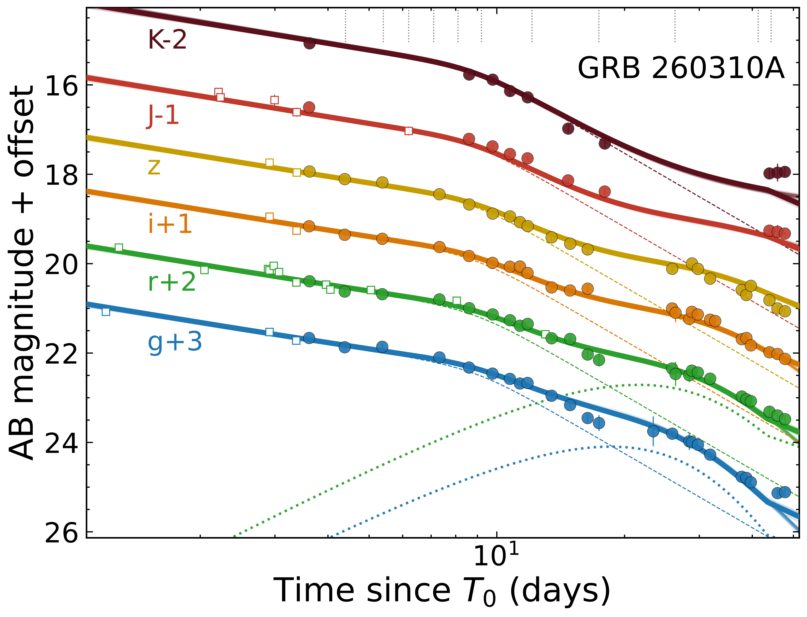
图注：Best-fit model (powerlaw+Arnett) to the multi-wavelength lightcurve of GRB 260310A in the observer-frame. The thick solid lines in each filter represent the total model. The thin dashed lines represent the broken power-law afterglow component and the dotted lines, shown only in the $g$- and $r$-bands to avoid clutter, represents the Arnett model lightcurve. Photometry presented in this work (FTW and Seimei) is shown as a solid circle and publicly reported photometry compiled from GCN Circulars is shown as empty squares \(\citep{HindsDisco,GCN1,GCN2,GCN3,GCN4,GCN5,GCN6,GCN7,GCN8,GCN9,GCN10,GCN11,GCN12}.\) The vertical lines at the top of the figure mark the epochs of our optical spectra (Figure \ref{fig:specsequence}).
对应解读：对应“建议重点查看的图表”第1项多波段光变曲线，以及“模型拟合”中测光分解和Arnett模型拟合段落。
入选理由：这张图直接展示多波段观测点、断裂幂律余辉、Arnett超新星分量和总模型，是判断早期明亮余辉外推、后期超新星隆起是否显著、各滤光片是否共同约束峰值与扩散时间的核心图。相比只做样本比较的图，它更直接支撑本文的光变建模和物理参数推断。
来源与置信度：\(arxiv_source\)；high；\(arxiv_source\) / main.tex:figure[3]
Fig11
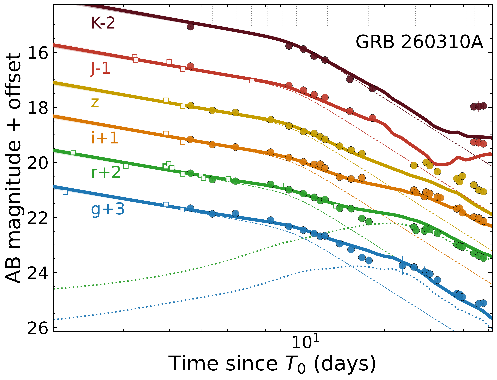
图注：Best-fit model (powerlaw+SN 1998bw) to the multi-wavelength lightcurve of GRB 260310A in the observer-frame. The thick solid lines in each filter represent the total model. The thin dashed lines represent the broken power-law afterglow component and the dotted lines, shown only in the $g$- and $r$-bands to avoid clutter, represent the model lightcurve of SN 1998bw with a flux scaling factor $k_\textrm{98bw}$\,$=$\,$0.50$. Photometry presented in this work is shown as a solid circle and publicly reported photometry compiled from GCN Circulars is shown as empty squares \(\citep{HindsDisco,GCN1,GCN2,GCN3,GCN4,GCN5,GCN6,GCN7,GCN8,GCN9,GCN10,GCN11,GCN12}.\)
对应解读：对应“建议重点查看的图表”第2项与SN 1998bw模板比较图，以及“关键图表逐图导读”中关于k_{98bw}的解读。
入选理由：图中给出powerlaw+SN 1998bw模板的多波段拟合，并明确采用k_{98bw}=0.50，正好用于检查本文声称SN 2026fgk约为SN 1998bw的0.4到0.6倍亮度是否由多波段数据支持。它与Fig03互补：Fig03偏物理Arnett模型，Fig11偏经验模板比较。
来源与置信度：\(arxiv_source\)；high；\(arxiv_source\) / main.tex:figure[11]
Fig05
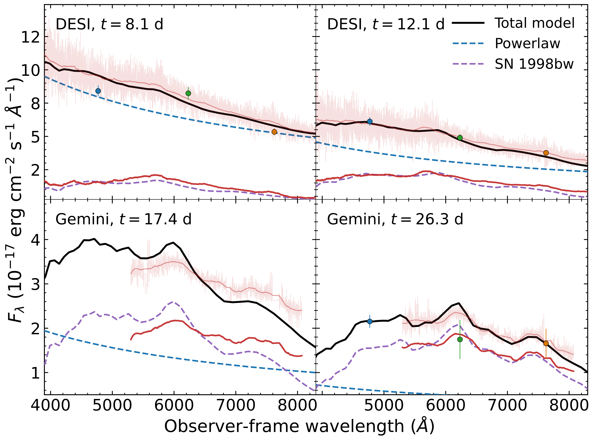
图注：Comparison between the best-fit model derived only from the photometry to the observed DESI and Gemini spectra at 8.1, 12.1, 17.4, and 26.3 d showing the onset and evolution of supernova features. The solid black line represents the total model (powerlaw+SN1998bw) while the blue dashed line represents the powerlaw component ($F_\nu$\,$\propto$\,$\nu^{-\beta}$) and the dashed purple line represents the spectral series of SN 1998bw with a flux scaling factor $k_\textrm{98bw}$\,$=$\,$0.50$. In each panel the observed spectrum is shown both in raw form and smoothed. The thick solid red line represents the smoothed observed spectrum with the powerlaw component subtracted.
对应解读：对应“建议重点查看的图表”第2、3项，以及“模型拟合”中余辉连续谱扣除、SN 1998bw光谱模板和宽线Ic-BL识别段落。
入选理由：这张图把仅由测光得到的powerlaw+SN1998bw模型与实际DESI/Gemini光谱逐历元比较，并显示余辉幂律分量扣除后的光谱，能够直接检验超新星特征是否被明亮余辉稀释、\(k_{98bw}=0\).50模板是否合理，比单纯光谱序列更能支撑模型分解结论。
来源与置信度：\(arxiv_source\)；high；\(arxiv_source\) / main.tex:figure[5]
Fig04
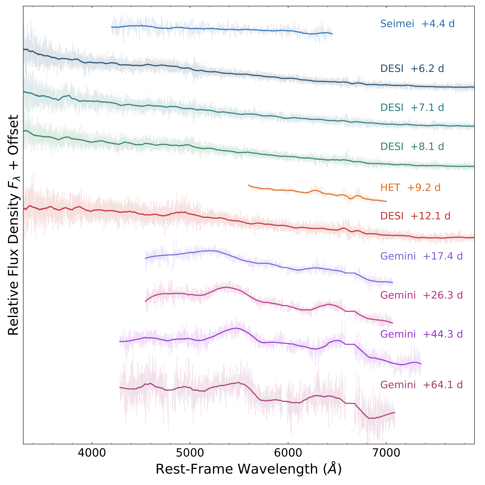
图注：Spectral sequence of GRB 260310A obtained with Seimei, DESI, HET, and Gemini. The spectra are smoothed with a Savitzky-Golay filter (thick lines) and the unsmoothed spectra (thin lines) are also shown. Emission lines and telluric absorption regions have been clipped from the spectra prior to smoothing. The spectra are initially well described by a powerlaw $F_\nu$\,$\propto$\,$\nu^{-\beta}$ with spectral index $\beta$\,$\approx$\,$1.0$ and later evolve to show broad absorption features at $\sim5000\,\AA$ and $\sim6100\,\AA$.
对应解读：对应“建议重点查看的图表”第3项光谱序列图，以及“关键图表逐图导读”图4关于宽吸收特征和Ic-BL分类的说明。
入选理由：该图展示从早期幂律余辉连续谱到后期约5000 Å和6100 Å宽吸收特征出现的完整光谱演化，是光谱确认SN 2026fgk为Ic-BL型的直接证据。它适合让读者检查宽吸收谷、平滑前后谱形和被剪除的窄线/ telluric区域。
来源与置信度：\(arxiv_source\)；high；\(arxiv_source\) / main.tex:figure[4]
Fig06
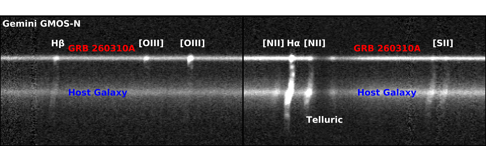
图注：Visualization of the 2D Gemini GMOS-N spectrum obtained on 2026-04-05 ($T_0+26.3$ d). The spectrum covers both the host galaxy (bottom trace) and transient (top trace), as shown in Figure \(\ref{fig:GemFC}.\) The spectral direction is the X-axis which goes from blue to red wavelengths from left to right. The spatial direction along the slit is the Y-axis. Each panel covers 300 \AA\, (observer frame) in width and is 11\arcsec\, in height. The scale is chosen to maximize the visibility of the emission lines. An atmospheric telluric absorption region (the A-band) is visible to the right of [NII].
对应解读：对应“建议重点查看的图表”第6项长缝二维光谱或发射线空间剖面，以及“详细解读”中发射线桥连接宿主与爆发位置的环境结论。
入选理由：二维GMOS长缝谱同时覆盖宿主和暂现源位置，直接显示空间方向上的星云发射线结构，是判断爆发点是否通过低表面亮度电离气体桥与宿主盘相连的关键证据。它比单纯偏移分布图更能支撑‘大偏移并不等于孤立环境’这一结论。
来源与置信度：\(arxiv_source\)；high；\(arxiv_source\) / main.tex:figure[6]
Fig01
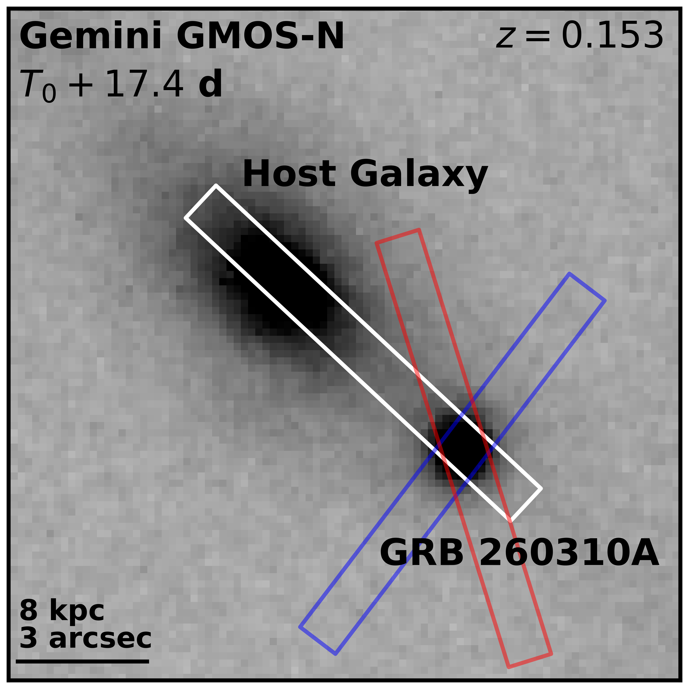
图注：Gemini $r$-band acquisition image ($3\times15$ s) from 2026-03-27 ($T_0+17.4$ d) showing the placement of the Gemini spectroscopic long-slit (white) observation that covers both the GRB and the host galaxy. Later Gemini spectra were obtained using different position angles (blue for 2026-04-23; red for 2026-05-13). The length of the rectangles mimicking the slit are simply for visualization purposes, while the $1\arcsec$ width is shown to scale. North is up and East is to the left.
对应解读：对应“建议重点查看的图表”第5项宿主成像和偏移图，以及“关键图表逐图导读”图1关于GRB位置、宿主星系和长缝几何关系的说明。
入选理由：该图给出Gemini r波段成像和不同日期长缝位置角，能直观看到GRB、宿主星系以及用于环境光谱的观测几何关系，是理解15 kpc投影偏移和后续二维谱解释的必要背景图。
来源与置信度：\(arxiv_source\)；high；\(arxiv_source\) / main.tex:figure[1]
强相关工作
这篇工作直接接在 \(\mathrm{GRB\ 980425}\)/\(\mathrm{SN\ 1998bw}\)、\(\mathrm{GRB\ 030329}\)/\(\mathrm{SN\ 2003dh}\)、\(\mathrm{GRB\ 031203}\)/\(\mathrm{SN\ 2003lw}\) 之后的传统上：用近邻事件把长 \(\mathrm{GRB}\) 与宽线 \(\mathrm{Ic}\) 型超新星联系起来。不同的是，本文的重点不只是确认关联，还把多波段光变、爆炸参数和局部环境放在同一篇中讨论。建议检索关键词包括 “\(\mathrm{GRB}\)-\(\mathrm{SN}\)”, “broad-lined Type \(\mathrm{Ic}\)”, “\(\mathrm{SN\ 1998bw}\) template”, “radioactive diffusion model”。
它也与关于 \(\mathrm{GRB}\) 宿主金属丰度偏好的文献有关。许多研究认为长 \(\mathrm{GRB}\) 偏好低金属丰度环境，但这个结论受到宿主质量、红移、尘埃遮蔽、暗暴选择效应和局部/全局丰度差异影响。本文的大偏移加局部低丰度结果支持“局部环境比全局宿主更重要”的观点，同时反对把大偏移简单解释为孤立爆发。建议检索关键词包括 “long \(\mathrm{GRB}\) metallicity bias”, “resolved host spectroscopy”, “offset distribution”, “extended disk star formation”。
还可把本文放入“明亮余辉不必对应明亮超新星”的张力中理解。若 \(\gamma\) 射线和余辉主要由喷流能量、视角和外部介质决定，而超新星峰值主要由 \(^{56}\mathrm{Ni}\) 产额和扩散时间决定，那么两者之间本来就不应有简单线性关系。\(\mathrm{GRB\ 260310A}\) 的异常明亮余辉与半 \(\mathrm{SN\ 1998bw}\) 光度的超新星正好是检验这种解耦的案例。
相似工作：
- https://arxiv.org/abs/2605.18973
- https://arxiv.org/abs/1309.1975
- https://arxiv.org/abs/1611.00001
基础理论 / 方法工作：
- https://arxiv.org/abs/astro-ph/0306347
- https://arxiv.org/abs/astro-ph/0603530
- https://arxiv.org/abs/astro-ph/9905306
相反观点 / 张力线索：
- https://arxiv.org/abs/0809.1086
- https://arxiv.org/abs/1006.1459
2. The exceptional 2017 gamma-ray flare of the radio galaxy NGC 1275: VERITAS and Multiwavelength Observations
- 来源：arXiv / astro-ph.HE
- 链接：https://arxiv.org/abs/2605.20153v1
- 作者：A. Acharyya, A. Archer, P. Bangale, J. T. Bartkoske, W. Benbow, Y. Chen, J. L. Christiansen, A. J. Chromey
- 评分：novelty 7/10，importance 8/10，relevance 10/10，final 9.40/10
- 推荐理由：VERITAS/MAGIC/Fermi-LAT 对 NGC 1275 罕见 VHE 伽马耀发的多波段分析，直接属于 TeV 伽马射线和 AGN 喷流物理；虽为 2017 事件后续研究，但数据组合和辐射区约束值得阅读。
中文题目：射电星系 NGC 1275 在 2017 年异常伽马射线耀发中的 VERITAS 与多波段观测
做了什么：这篇论文汇总并分析了射电星系 NGC 1275 在 2016 年底到 2017 年初一次极端甚高能伽马射线耀发中的 VERITAS 观测，并把它与 MAGIC、Fermi-LAT 以及射电到光学等多波段数据放在一起建模。MAGIC 在耀发峰值测到约 \(1.5\) 个 Crab 的通量，VERITAS 在 2017 年 1 月 2 日和 3 日观测到衰减阶段，平均通量约 \(0.5\) 个 Crab。论文的核心结论是：NGC 1275 的甚高能谱长期呈现“越亮越硬”的趋势；耀发期间，从 1 月 1 日到 1 月 2 日，联合伽马射线谱形从带指数截断的幂律转为对数抛物线；多波段 SED 更支持双成分 blob-in-jet 模型，喷流视线夹角约为 \(10^\circ\)，伽马射线辐射区可能位于射电成分 C3 附近。
为什么重要：NGC 1275 不是典型 blazar，而是视线外倾角较大的射电星系；它能在甚高能波段出现 Crab 量级耀发，说明强相对论喷流辐射并不只局限于几乎正对我们的源。这对喷流结构、辐射区位置、Doppler 增亮、粒子加速和射电 knot 与高能耀发关联都是重要约束。
理论 / 观测 / 仪器方法价值：观测价值在于把 VERITAS 的耀发衰减阶段谱和长期监测放进同一框架，并与 Fermi-LAT、MAGIC、多波段 SED 结合，形成从 GeV 到 TeV 的时间分辨谱演化图像。方法价值在于用一成分与双成分 blob-in-jet 模型比较，检验 C3 射电成分附近是否能容纳高能辐射区、低 Doppler 因子和快速耀发之间的张力。
为什么应该关注：如果你关心非 blazar AGN 的 TeV 辐射、喷流中的局部加速区、射电 VLBI 成分与高能事件的物理关联，或 Crab 量级耀发怎样在较大视线角喷流中产生，这篇文章值得读。它还提供了一个具体案例：单纯把所有高能辐射塞进一个均匀 blob 往往不够，时变 SED、谱硬化和射电结构需要一起解释。
展开详细解读：文章讲解、背景、理论、重点章节、图表与相关工作
文章详细讲解
科学问题：NGC 1275 是英仙座星系团中心的 Brightest Cluster Galaxy，也是 Fanaroff-Riley I 型射电星系 3C 84 的宿主。它的喷流不如 blazar 那样几乎沿视线方向指向我们，因此常规预期是 Doppler 增亮较弱、甚高能 \(\gamma\) 射线变化不应极端剧烈。但 2016 年 12 月 31 日到 2017 年 1 月 3 日，该源进入异常高的 VHE 状态，峰值达到约 \(1.5\) Crab，这直接挑战了“非 blazar TeV 源只能温和变化”的直觉。论文要回答的是：这次耀发的谱形和多波段 SED 如何演化？VERITAS 在衰减阶段看到什么？高能辐射区是否能与长期 VLBI 追踪的异常射电成分 C3 关联？
作者怎么做：论文报告了 VERITAS 在 2017 年 1 月 2 日和 3 日的观测，并把这些数据置于 2009—2017 年 VERITAS 长期监测背景中。作者同时使用 Fermi-LAT 的高能 \(\gamma\) 射线数据、MAGIC 在耀发峰值附近的测量，以及低能多波段资料来构建 2017 年 1 月 1 日和 1 月 2 日的夜间 SED。对 VHE 部分，他们不仅给出通量状态，还比较谱形随通量的变化，特别关注长期 harder-when-brighter 关系。对 SED，他们采用 blob-in-jet 辐射模型，比较单成分与双成分情形，并让喷流视线角、辐射区位置、电子谱和磁场等参数共同满足射电到 TeV 的约束。
关键结果：VERITAS 没有覆盖耀发最高峰，而是在衰减阶段检测到平均约 \(0.5\) Crab 的高通量状态。长期 VERITAS 谱显示 NGC 1275 在 VHE 波段有“越亮越硬”的总体趋势，这与粒子加速效率提高、冷却条件变化或多成分叠加有关。耀发期间的联合 Fermi-LAT、MAGIC、VERITAS 谱出现快速形态变化：1 月 1 日可用带指数截断幂律描述，1 月 2 日则更接近对数抛物线。这提示辐射电子分布或吸收、冷却、加速平衡在一天尺度内发生变化。SED 建模结果支持双成分模型，并倾向于视线角约 \(10^\circ\)，使 \(\gamma\) 射线辐射区位于 C3 射电成分附近成为可行解释。
局限和下一步：这类结论的主要限制来自非同时多波段覆盖、TeV 光子统计、模型非唯一性和喷流几何退化。blob-in-jet 模型中的磁场、blob 半径、Doppler 因子、电子谱截断、外光子场以及源区位置可以相互补偿；同样的 SED 往往不只对应一种物理图像。C3 关联也需要谨慎：射电成分的位置和高能辐射区的投影对应关系不等于因果证明。下一步应依赖更密集的 VHE 时间采样、同步 VLBI 偏振监测、CTA 级别的宽能段谱，以及把时变辐射输运而非静态 SED 拟合作为主要诊断。
背景知识
NGC 1275 位于英仙座星系团中心，是近邻宇宙中研究最充分的活动星系核之一。它同时是冷却流星系团中心星系、强射电源 3C 84 和 GeV/TeV \(\gamma\) 射线源。由于距离较近、亮度高、环境复杂，它是研究喷流、星系团气体、AGN 反馈和高能粒子加速耦合的天然实验室。与 BL Lac 或 FSRQ 不同，NGC 1275 的喷流不是严格正对视线，因此其 TeV 辐射对喷流横向结构和局部加速区特别敏感。
历史上，NGC 1275 在射电、毫米波、X 射线和 GeV 波段都表现出长期变化。VLBI 观测在内喷流中追踪到多个运动或准静止成分，其中 C3 是过去二十年里备受关注的异常射电成分。C3 的亮化和运动曾被用于讨论喷流中新抛射结构、冲击、再准直区以及与高能活动之间的联系。因此，把 2017 年 TeV 耀发与 C3 放在一起讨论，并不是随意寻找巧合，而是基于已有射电结构演化史提出的物理假设。
观测背景上，Fermi-LAT 长期监测提供了 MeV/GeV 到几十 GeV 的连续高能光变；MAGIC 与 VERITAS 提供地基 Cherenkov 望远镜的 \(E>100\,\mathrm{GeV}\) VHE 数据。2017 年初的耀发特别重要，因为峰值达到 Crab 量级，远高于 NGC 1275 的通常状态。对一个视线角不小的射电星系而言，这意味着辐射区要么有局部较大的 Doppler 因子，要么存在非常高效的粒子加速和紧凑辐射区，或者多区喷流结构共同贡献。
现在重新审视这一事件的原因，是多波段数据、长期 VERITAS 档案和 MAGIC 峰值观测可以被统一放入时间分辨 SED 中。只看单个夜晚或单台望远镜，容易把谱硬化、截断、曲率和通量变化混为一谈；而跨仪器联合能区能把 GeV 到 TeV 的峰形、截断和衰减行为分开。特别是从带指数截断幂律到对数抛物线的变化，可能对应电子能谱从近似截断分布转为曲率分布，也可能反映多个辐射成分相对权重变化。
该领域常见误区之一，是把射电星系的 TeV 辐射简单看成“低 Doppler 因子的弱 blazar”。实际上，射电星系的可见喷流可以有横向速度结构、spine-sheath 几何、再准直冲击和局部磁重联区，观测到的高能辐射不必来自同一个均匀区。另一个误区是把 SED 拟合参数当作唯一物理解；在没有同步时间演化、偏振和 VLBI 位置约束时，许多参数组合都能拟合宽带 SED。因此本文的关键价值不是给出某个“最终模型”，而是在真实耀发事件中收紧可行模型空间。
基础理论 / 方法脉络
从物理图像看，AGN 喷流中的高能辐射通常来自相对论电子在磁场中产生同步辐射，并通过同步自康普顿或外康普顿过程把低能光子散射到 X 射线、GeV 甚至 TeV 能段。对 NGC 1275 这样的射电星系，喷流与视线夹角不是极小，Doppler 因子相对 blazar 较低；因此要得到 Crab 量级 TeV 耀发，需要更紧凑、更高能或更高局部增亮的辐射区。所谓 blob-in-jet 模型就是把喷流中的一个或多个局部移动等离子团作为主要辐射区来近似。
关键量包括电子 Lorentz 因子 \(\gamma\)、磁场强度 \(B\)、blob 半径 \(R\)、bulk Lorentz 因子 \(\Gamma\)、Doppler 因子 \(\delta\)、视线角 \(\theta\)、电子能谱 \(N_e(\gamma)\)、同步峰频率和逆康普顿峰频率。若 \(\theta\) 增大，即使 \(\Gamma\) 不小，\(\delta=[\Gamma(1-\beta\cos\theta)]^{-1}\) 也会迅速下降；这使源内光子密度、\(\gamma\gamma\) 吸收、冷却时间和变时尺度约束变得更严。本文倾向的 \(\theta\approx10^\circ\) 比典型 blazar 大，但仍允许中等 Doppler 增亮。
观测方法上，VERITAS 和 MAGIC 属于成像大气 Cherenkov 望远镜，通过 TeV \(\gamma\) 射线在大气中产生的 Cherenkov 光阵列图像反推出入射方向和能量。分析的基本输出不是直接的光子通量，而是经有效面积、能量迁移矩阵、背景估计和曝光修正后的谱点。Fermi-LAT 则通过空间探测器记录 pair-conversion 事件，给出较低能段、更长时间基线的 \(\gamma\) 射线光变和谱。将二者拼接时必须考虑非同时性、交叉定标和能区重叠处的谱形一致性。
本文涉及的谱模型包括幂律、带指数截断幂律和对数抛物线。幂律通常描述无特征尺度的粒子加速或局部能段近似；指数截断提示最大能量、强冷却或吸收；对数抛物线则表示谱指数随能量平滑变化，常见于随机加速、能量依赖逃逸或多成分叠加。所谓 harder-when-brighter 指通量升高时光子指数变小或高能谱相对增强，这可以源于加速变强，也可以只是硬谱成分在耀发中占比增加。
主要退化关系来自 SED 的两峰结构。同步峰由 \(B\)、\(\delta\) 和电子能量共同决定，逆康普顿峰还依赖种子光子密度和 Klein-Nishina 效应。提高 \(\delta\) 可以同时提高观测频率和通量，降低 \(R\) 会增强内部光子密度并影响冷却和吸收，提高 \(B\) 会增强同步辐射但可能压低康普顿占优度。因此单个静态 SED 往往无法唯一确定 \(B\)、\(\delta\)、\(R\) 和电子谱；本文使用夜间 SED 演化和射电 C3 位置来增加约束。
公式与推导
可以从相对论喷流的 Doppler 变换开始。若辐射区以速度 \(\beta c\) 和 Lorentz 因子 \(\Gamma\) 运动，视线角为 \(\theta\)，Doppler 因子为
这里 \(\delta\) 控制观测频率、时间和通量的增亮。对 NGC 1275，\(\theta\approx10^\circ\) 会显著限制 \(\delta\)，因此 TeV 耀发对局部加速效率和辐射区紧致性提出要求。
观测变时尺度给出辐射区大小的上限。若观测到通量在 \(t_{\rm var}\) 内变化，红移为 \(z\)，则
这个式子假设辐射区的光穿越时间主导变化，\(R\) 是共动系尺度。一天尺度变化意味着即便有中等 \(\delta\)，源区也只能是亚秒差距到小 parsec 尺度的紧凑结构。
在 blob 共动系中，常用电子分布可写为弯曲或截断形式，例如
或对数抛物线形式。这里 \(K\) 是归一化，\(p\) 是低能谱指数，\(\gamma_{\rm cut}\) 是截止 Lorentz 因子。不同电子谱会映射到不同的 \(\gamma\) 射线谱形，这正是论文比较指数截断谱和对数抛物线谱的物理背景。
同步辐射的特征观测频率可近似为
其中 \(e\) 是电子电荷，\(m_e\) 是电子质量，\(B\) 是共动磁场。这个关系说明 \(B\)、\(\delta\) 和 \(\gamma\) 存在强退化：同一同步峰频率可由较高 \(B\) 和较低 \(\gamma\)，或较低 \(B\) 和较高 \(\gamma\) 产生。
在 Thomson 极限下，同步自康普顿或外康普顿散射的特征频率满足
其中 \(\nu_{\rm seed}\) 是种子光子频率。若进入 Klein-Nishina 区，散射效率下降，高能谱会变软或出现曲率，因此 TeV 谱的硬化和截断不能只按 Thomson 近似解释。
从观测角度，微分光子谱常用幂律、指数截断幂律或对数抛物线拟合，例如
和
这里 \(N_0\) 是归一化，\(E_0\) 是枢轴能量，\(\Gamma_\gamma\) 或 \(\alpha\) 描述局部谱斜率，\(\beta\) 描述曲率。论文提到从 1 月 1 日的指数截断幂律转向 1 月 2 日的对数抛物线，正可由这些参数的物理含义来读。
\(\nCherenkov\) 望远镜的预测计数不是直接的 \(\frac{dN}{dE}\)，而要卷积仪器响应：
其中 \(\mu_i\) 是第 \(i\) 个能量或图像选择 bin 的期望计数，\(T\) 是曝光时间，\(A_{\rm eff}\) 是有效面积，\(R_i(E)\) 是能量迁移和选择响应，\(\mu_{i,\rm bkg}\) 是背景。谱点和模型参数都应理解为响应折叠后的反演结果。
对 ON/OFF 背景估计，显著性常用 Li-Ma 形式：
这里 \(N_{\rm on}\) 是源区计数，\(N_{\rm off}\) 是背景区计数，\(\alpha\) 是曝光或接受度归一化因子。它说明高通量状态的检测显著性来自源区超额，而非简单计数差。
\(\nSED\) 拟合常以观测能量通量为目标量，\(\nu F_\nu\) 与光子谱的关系为
其中 \(C\) 是单位换算因子，\(E=h\nu\)。这一形式突出每个对数能段的能量输出，便于比较同步峰与逆康普顿峰。对本文而言，判断单区还是双区模型，实质上是在检验是否能用同一组 \(B\)、\(\delta\)、\(R\) 和 \(N_e(\gamma)\) 同时解释射电到 TeV 的 \(\nu F_\nu\) 结构。
模型拟合 / 应用方法
本文的拟合可以分为两层：第一层是观测谱拟合，第二层是物理 SED 拟合。谱拟合主要针对 VERITAS、MAGIC 和 Fermi-LAT 在不同时间窗口内的 \(\gamma\) 射线数据，比较幂律、带指数截断幂律和对数抛物线。需要关注的参数包括归一化 \(N_0\)、光子指数 \(\Gamma_\gamma\)、截断能量 \(E_{\rm cut}\)、对数抛物线曲率 \(\beta\) 以及积分通量。所谓 harder-when-brighter 通常体现在通量升高时 \(\Gamma_\gamma\) 变小，或 TeV 端谱点相对 GeV 端抬升。
统计上，Fermi-LAT 常采用 Poisson 似然和 test statistic，Cherenkov 望远镜则以 ON/OFF 计数、背景模板和响应折叠谱拟合为基础。联合谱拟合时，必须处理不同仪器的能量刻度、时间窗口和系统误差。MAGIC 覆盖峰值，VERITAS 覆盖衰减，两者并非完全同时，因此把谱形变化解释成真实物理演化时，要确认时间 bin 的定义、通量归一化和能段重叠是否足够稳健。
物理 SED 拟合中，单成分模型假设一个 blob 同时解释多波段辐射；双成分模型允许一个较稳态或低能成分与一个耀发高能成分叠加。拟合量包括 \(B\)、\(R\)、\(\delta\)、\(\Gamma\)、\(\theta\)、电子谱参数、电子能量密度、位置以及可能的外部光子场。本文支持双成分模型，意味着单一均匀区难以同时再现射电到光学以及 GeV 到 TeV 的谱形，尤其是耀发峰到衰减的快速变化。
参数退化是阅读时必须保持警惕的地方。提高 \(\delta\) 可以降低内禀光度需求并缩短共动冷却时间；提高 \(B\) 会增强同步辐射但也可能降低 Compton dominance；增大 \(R\) 有利于降低内部吸收但会与快速变化冲突；改变电子谱曲率既可模拟加速物理，也可掩盖多区叠加。C3 位置约束能帮助打破一部分几何退化，但不能完全消除辐射区在投影、时间延迟和模式速度上的不确定性。
残差诊断应重点看两个区域：一是 GeV 与 TeV 连接处，那里决定谱是否真有截断或曲率；二是低能射电到红外部分，那里容易被大尺度喷流、自吸收或非同步数据污染。如果模型在 TeV 端系统性低估高能点，可能需要更硬电子尾或额外小尺度区；如果模型过度解释射电，说明 blob 的低频自吸收或大尺度贡献处理可能不当。实际应用中，这类模型最有用的不是给出唯一参数，而是比较不同几何和电子分布在同一多波段事件中的可行性。
重点章节 / 结果段落怎么读
-
数据与观测概述：读者应先看 VERITAS 在 2017 年 1 月 2 日和 3 日的观测时间、天顶角、质量筛选、显著性和积分通量定义。这里决定了“衰减阶段 \(0.5\) Crab”这个结论的可靠性，也决定了它与 MAGIC 峰值 \(1.5\) Crab 的时间关系。
-
长期 VERITAS 监测和谱-通量关系：这一部分应重点读 2009—2017 年数据如何分状态或分时间段合并，以及光子指数与通量之间的趋势。harder-when-brighter 若只由少数高通量点驱动，物理解释就要更谨慎；若长期一致，则更支持加速或多成分变化的普遍机制。
-
联合 \(\gamma\) 射线谱分析：这里比较 Fermi-LAT、MAGIC 和 VERITAS 在 1 月 1 日与 1 月 2 日的谱形。读者要注意能区重叠、非同时性和模型选择指标，看指数截断幂律与对数抛物线哪个在统计上显著更好，而不是只看曲线视觉上是否贴合。
-
多波段 SED 构建：这一节决定了物理建模的输入。应检查各波段数据是否真正同时、是否扣除了宿主星系和星系团背景、射电点是否代表紧凑核区而非扩展结构，以及光学/紫外/X 射线是否可能受吸积盘、星系团热气体或尘埃影响。
-
blob-in-jet 模型与 C3 解释：这是论文的物理核心。读者应关注单成分模型失败在哪里、双成分模型新增了哪些自由度、\(\theta\approx10^\circ\) 如何被采用或约束，以及把 \(\gamma\) 射线区放在 C3 附近是否同时满足变时尺度、Doppler 因子和 SED 峰形。
-
讨论与稳健性：最后应看作者如何讨论系统误差、模型非唯一性和与先前 MAGIC/Fermi/VLBI 工作的关系。若附录给出替代谱模型、不同时间 bin 或参数表，建议与正文结论逐项对照。
建议重点查看的图表
-
长期 VHE 光变曲线：检查 2009—2017 年 VERITAS 通量随时间变化，特别是 2017 年 1 月 2 日和 3 日相对历史基线的位置，以及 Crab 单位和绝对通量单位的换算。
-
2017 年耀发近峰期多仪器光变：检查 MAGIC 峰值、VERITAS 衰减、Fermi-LAT GeV 变化是否时间上连续。关键是确认“峰值到衰减”的时间顺序是否足以支撑谱演化解释。
-
光子指数或谱硬度与通量关系图：看 harder-when-brighter 是否为单调趋势，误差条是否重叠，是否有高通量异常点主导拟合。
-
1 月 1 日和 1 月 2 日联合 \(\gamma\) 射线谱：检查 \(E^2dN/dE\) 或 \(\nu F_\nu\) 坐标下 Fermi-LAT、MAGIC、VERITAS 数据点如何连接，指数截断幂律与对数抛物线的残差是否显著不同。
-
多波段 SED 与模型曲线：看单成分与双成分模型在哪些波段差异最大，尤其是射电、X 射线和 TeV 端。注意非同时点是否被用不同符号标记。
-
模型参数表：检查 \(B\)、\(R\)、\(\delta\)、\(\theta\)、电子谱参数和能量密度是否物理合理，是否接近极端 equipartition 偏离或违反变时尺度约束。
-
若有 VLBI/C3 示意或射电结构图：检查 C3 的位置、运动方向和时间演化，确认它与高能耀发的关联是空间-时间一致而非仅名称关联。
关键图表逐图导读
图 1：长期 VHE 光变图通常以修正儒略日或年份为横轴，以 \(E>100\,\mathrm{GeV}\) 或类似阈值以上积分通量为纵轴，可能同时用 Crab 单位和物理单位标注。读图时要看 2017 年点是否远高于历史平均，以及 VERITAS 点覆盖的是峰后下降而非峰值本身。陷阱是不同能量阈值的 Crab 单位不可直接混用。
图 2：耀发期间的夜间或亚夜间光变应显示 MAGIC、VERITAS 和 Fermi-LAT 的时间衔接。横轴若为 MJD，需特别注意 2017 年 1 月 1 日、2 日、3 日对应的 bin 宽度；纵轴若为积分通量，误差条包含统计误差但未必包含系统误差。主要结论是源在一天尺度内从极高态降到仍然很高的状态。
图 3：谱硬度-通量关系图的横轴通常是积分通量或归一化，纵轴是光子指数 \(\Gamma_\gamma\) 或等价硬度指标。若 \(\Gamma_\gamma\) 随通量增加而下降，就是 harder-when-brighter。读图陷阱是低统计状态下指数误差大，且谱指数与通量归一化在拟合中并非完全独立。
图 4：联合 \(\gamma\) 射线谱图可能以能量 \(E\) 为横轴、\(E^2dN/dE\) 为纵轴，分别绘出 1 月 1 日和 1 月 2 日的数据点与模型线。指数截断幂律在高能端会快速下弯，对数抛物线则曲率更平滑。应重点看 Fermi-LAT 与 MAGIC/VERITAS 连接处是否有不连续，以及模型残差是否在 TeV 端系统性偏离。
图 5：多波段 SED 图横跨射电、红外、光学、X 射线、GeV 和 TeV，纵轴为 \(\nu F_\nu\)。模型线可能分为同步、SSC、外康普顿或两个 blob 的分量。关键结论是双成分模型能更自然地同时解释低能和高能部分；陷阱是射电低频点常来自大尺度区域，不能简单要求紧凑 blob 完全通过这些点。
图 6：模型参数或几何示意图若出现，应看喷流视线角 \(\theta\)、C3 位置和辐射区相对核心的距离。若图中给出置信区间或参数范围，读者要判断 \(\theta\approx10^\circ\) 是拟合强约束还是采用的合理先验。把辐射区放在 C3 附近的物理意义在于连接 VLBI 尺度结构和 TeV 辐射，但不能把示意图误读为直接成像到 TeV 源。
论文原图 / 可嵌入图片
Fig06
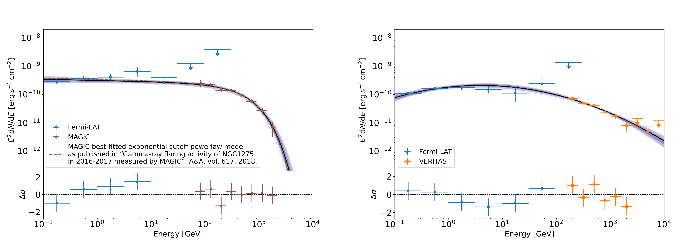
图注：Shown here are the best fitted spectral models (including residuals) to the combined Fermi-LAT (blue filled circles) and MAGIC (brown filled circles) data for \(\decthirtyfirst{}/\janfirst{}\) (top panel), and the combined Fermi-LAT (blue filled circles) and VERITAS (orange filled squares) data for \(\jansecond{}\) (bottom panel). Also shown in the top panel is the best-fitted spectral model (brown dashed line) published by MAGIC \(\citep{MAGIC-2018-AA}.\) For \(\decthirtyfirst{}/\janfirst{}\) the combined data is best described by a power law with exponential cutoff model (solid black line), whereas on \(\jansecond{}\) the combined data is best described by a log parabola model (solid black line). The purple bands highlight the $1\sigma$, $2\sigma$ and $3\sigma$ confidence intervals, respectively. These best-fitted spectral models highlight the stark evolution of the Compton peak shape between \(\janfirst{}\) and \(\jansecond{}.\) Details of the fits can be found in Table \(\ref{table:fermi_veritas_combined_fit_parameters}.\)
对应解读：对应“建议重点查看的图表”第4项、关键图表逐图导读图4，以及模型拟合段落中关于联合 Fermi-LAT/MAGIC/VERITAS 谱形比较、残差和置信区间的讨论。
入选理由：这是检验论文核心谱演化结论的最关键图：直接比较 12月31日/1月1日与1月2日的联合伽马射线谱，包含 Fermi-LAT、MAGIC、VERITAS 数据点、最佳拟合模型、残差以及1/2/3σ置信区间，可直接支撑“指数截断幂律到对数抛物线”的结论。
来源与置信度：\(arxiv_source\)；high；\(arxiv_source\) / NGC1275-flare-2016.tex:figure[6]
Fig08
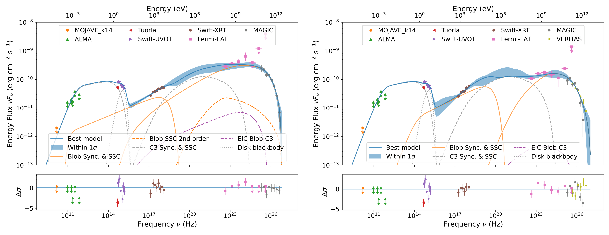
图注：Multiwavelength SEDs with models and residuals of \(\gName{NGC}{1275}\) during the 2017 VHE flare (left) and one day after (right). Gray lines are for components considered steady over the two days: the C3 synchrotron and SSC emission (dashed), and the thermal emission from the accretion disk (dotted). These two components are fitted by eye and constrained from optical and radio data. Colored lines are linked to the blob emission that varies between the two states, fitted to the data with \(\texttt{Bjet\_MCMC}\): the blob synchrotron and SSC contribution (plain orange), the second-order SSC emission (dashed orange), and the combined EIC emission of both the blob's particles on C3 photons and C3 particles on blob's photons (dotted-dashed purple). The sum of all components and associated $1 \sigma$ contours are shown in blue. The \(\gray{}\) emission is absorbed by the EBL following the model of \(\cite{Franceschini_2017}.\)
对应解读：对应“建议重点查看的图表”第5项、关键图表逐图导读图5，以及物理 SED 拟合中单成分/双成分、C3、SSC/EIC 分量和残差诊断的讨论。
入选理由：这是多波段物理解释的主图，覆盖2017年VHE耀发当天和一天后的SED，并显示C3同步/SSC、blob同步/SSC、二阶SSC、EIC、总模型及1σ轮廓，最能支撑日报中关于双成分模型、TeV端和低能端拟合差异的详细解读。
来源与置信度：\(arxiv_source\)；high；\(arxiv_source\) / NGC1275-flare-2016.tex:figure[8]
Fig02
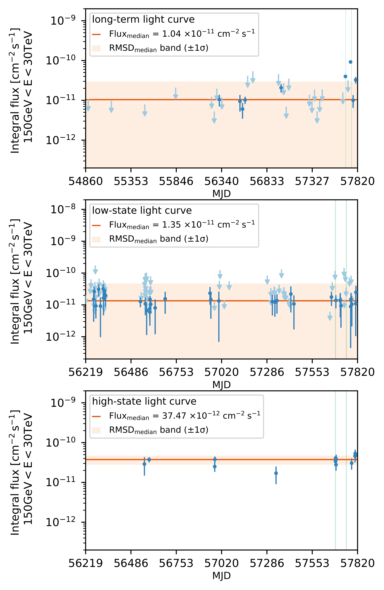
图注：Top panel: long-term VERITAS TeV light curve for all 4-telescope observations of radio galaxy \(\gName{NGC}{1275}\) for the energy range $\mathrm{0.15\,TeV \leqslant E \leqslant 30\,TeV}$, spanning more than 8-years (2009-2017) and binned in 28-day intervals. The median flux (solid orange line) and $\mathrm{1\sigma}$ root mean squared deviation (RMSD; orange band) are shown, with 95\% confidence-level upper limits plotted for flux points $\mathrm{<2\sigma}$. Center panel: average low-state light curve calculated for \(\gName{NGC}{1275}\) during 2012 October to 2017 June, with median flux and $\mathrm{1\sigma}$ RMSD as above; here 95\% confidence-level upper limits are shown for flux points $\mathrm{<1\sigma}$. Bottom panel: average high-state light curve calculated for \(\gName{NGC}{1275}\) during 2012 September to 2017 June, with median flux and $\mathrm{1\sigma}$ RMSD. The two vertical green lines mark the \(\octthirtyfirst{}\) and \(\janfirst{}\) flares repectively.
对应解读：对应“建议重点查看的图表”第1项和关键图表逐图导读图1，即2009—2017年VERITAS长期TeV光变曲线及2017年耀发在历史基线中的位置。
入选理由：该图给出8年以上VERITAS TeV长期光变、低态/高态参考、median flux、1σ RMSD和上限，并用竖线标出相关耀发，是判断2017年事件相对历史水平是否异常以及VERITAS观测处于高态背景中的必要图。
来源与置信度：\(arxiv_source\)；high；\(arxiv_source\) / NGC1275-flare-2016.tex:figure[2]
Fig01
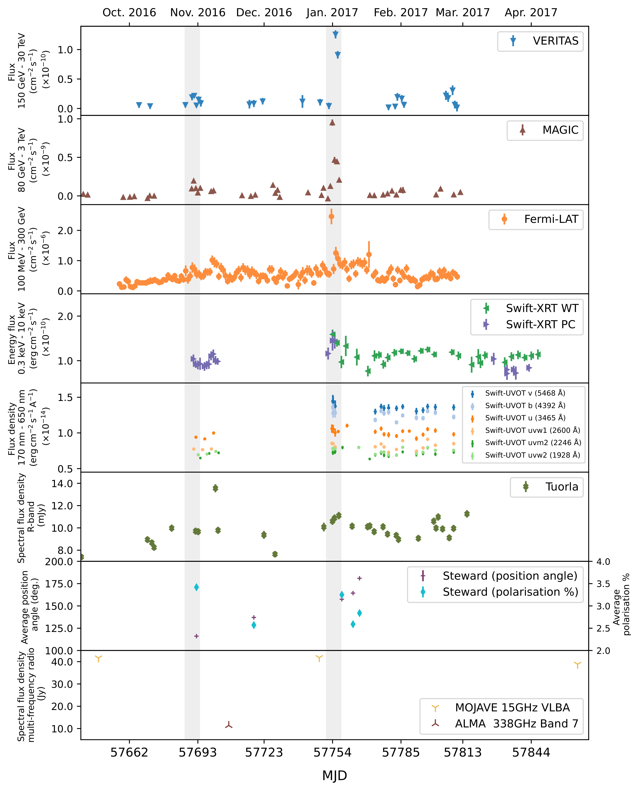
图注：The daily-binned multiwavelength light curve of \(\gName{NGC}{1275}\) for the VERITAS observing season 2016/17. The light curves include data recorded with VERITAS (first / top panel), MAGIC \(\citep{MAGIC-2018-AA}\) (second panel), \(\fermi{}\) (third panel), \(\swiftXRT{}\) (fourth panel), \(\swiftUVOT{}\) (fifth panel), Tuorla \(\citep{MAGIC-2018-AA}\) (sixth panel), Steward Optical Polarization percentage and Position Angle (seventh panel), and finally MOJAVE \(\citep{Lister-2018-ApJS}\) and ALMA (eighth / bottom panel). The \(\swiftXRT{}\) data includes observations for both the Windowed Timing mode (green points) and the Photon Counting mode (purple points). The gray vertical bands each highlight a 7-day period centered on \(\octtwentyninth{}\) and \(\janfirst{}\) respectively.
对应解读：对应“建议重点查看的图表”第2项，即2016/17观测季内MAGIC、VERITAS、Fermi-LAT、Swift、光学偏振、ALMA/MOJAVE等多仪器光变的时间衔接。
入选理由：该图以日bin展示耀发季的多波段光变，包含VERITAS、MAGIC、Fermi-LAT和低能多波段数据，并用灰色时间带标出关键窗口，最适合核查MAGIC峰值、VERITAS衰减和GeV/多波段变化是否在时间上连续。
来源与置信度：\(arxiv_source\)；high；\(arxiv_source\) / NGC1275-flare-2016.tex:figure[1]
Fig04
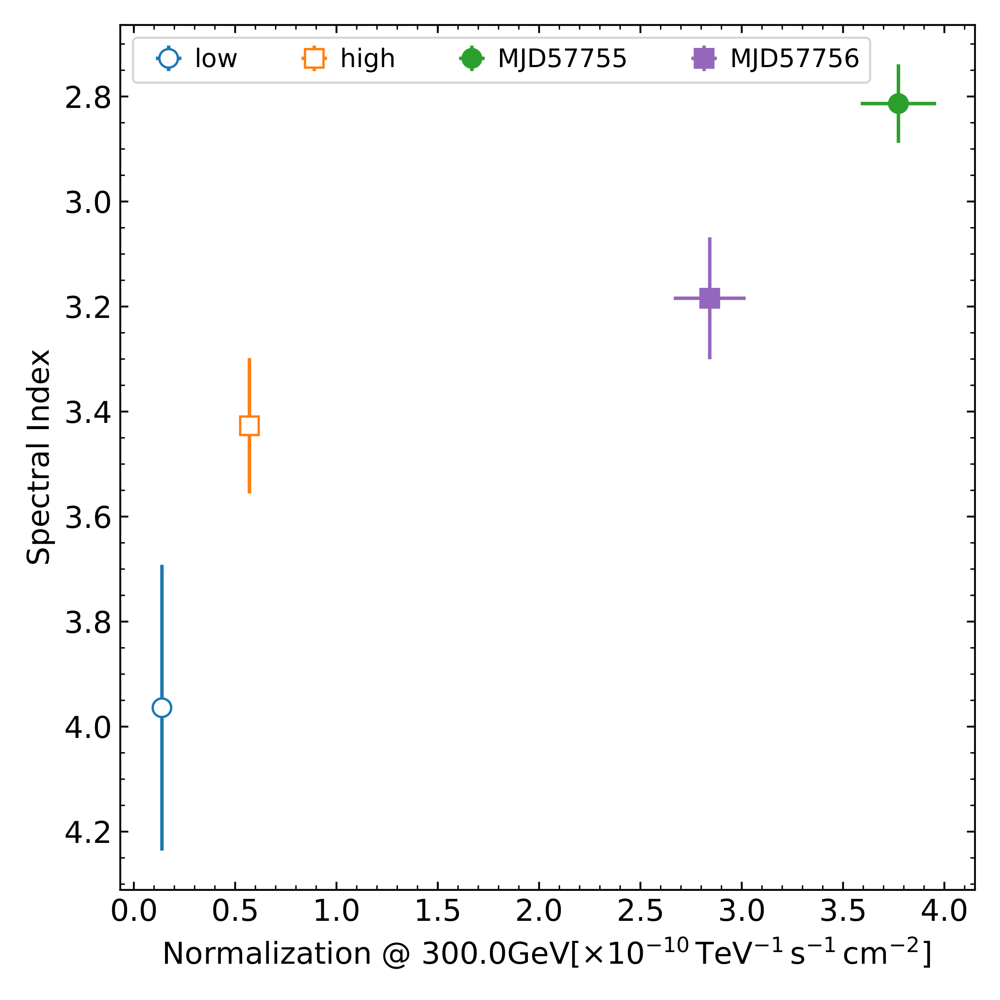
图注：The spectral index of the fitted power laws for each state hardens as the recorded flux brightness increases from low-state (open blue circle) to high-state (open orange square) and even during the two flares of extreme-high-state: MJD57755 (green-filled circle) and MJD57756 (purple-filled square). Note that the direction of the y-axis is inverted.
对应解读：对应“建议重点查看的图表”第3项、关键图表逐图导读图3，以及模型拟合段落中关于harder-when-brighter趋势的讨论。
入选理由：该图直接把幂律谱指数与通量状态联系起来，展示低态、高态和两个极高态点的谱硬化趋势；相比只看谱图，它更直接检验“越亮越硬”是否由高通量点主导以及误差条是否支持单调关系。
来源与置信度：\(arxiv_source\)；high；\(arxiv_source\) / NGC1275-flare-2016.tex:figure[4]
Fig07
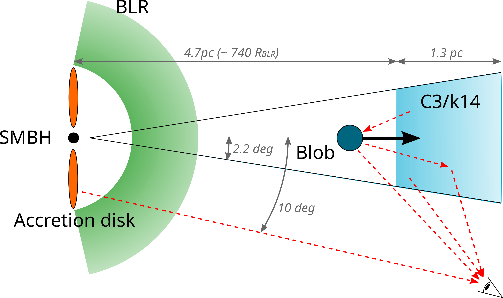
图注：Geometrical scheme of radiative components considered for the broadband SED modeling of \(\gName{NGC}{1275}\) (not to scale). The red-dashed lines represent the multiple radiative transfers taken into account. In our code, the accretion disk is considered as a point-like source. With 5.4pc as the deprojected distance to the middle of C3, we take 4.7pc as the deprojected distance to the edge of C3.
对应解读：对应“建议重点查看的图表”第7项和关键图表逐图导读图6，即喷流几何、C3位置以及辐射区与射电结构关联的解释。
入选理由：该图是SED建模的几何示意，明确给出C3的退投影距离和辐射转移组件，能帮助读者理解为什么模型把伽马射线辐射区放在C3附近；虽然不是直接观测成像，但对解释论文的几何假设和C3关联很重要。
来源与置信度：\(arxiv_source\)；high；\(arxiv_source\) / NGC1275-flare-2016.tex:figure[7]
强相关工作
这篇工作自然延续了 MAGIC 对 NGC 1275 2016/2017 年极端 VHE 耀发的报告、Fermi-LAT 对 NGC 1275 长期 GeV 变化的监测，以及 VLBI 对 3C 84 内喷流和 C3 成分的研究。相似工作可用关键词检索：NGC 1275 VHE flare 2017 MAGIC VERITAS、3C 84 C3 component VLBI gamma-ray、Perseus cluster central radio galaxy TeV。特别值得对照的是 MAGIC 关于峰值 \(1.5\) Crab 的谱和变时尺度约束，以及 Fermi-LAT 长期光变中 GeV 活动与射电喷流演化的相关性。
理论背景方面，应把本文与非 blazar TeV AGN 的喷流模型放在一起读，例如 M87、Centaurus A、IC 310 等源中的 spine-sheath、mini-jet、磁重联、再准直冲击模型。相反或有张力的观点包括：TeV 辐射可能来自更靠近黑洞磁层的区域，而非 C3 这种 parsec 尺度射电成分附近；或者多波段 SED 可由不同非同时区叠加拟合，不能强行要求单一物理位置。检索关键词可用 misaligned AGN TeV emission、spine sheath jet model、magnetospheric gap gamma rays、blob-in-jet SED modeling、harder-when-brighter gamma-ray radio galaxy。
相似工作：
- https://arxiv.org/abs/2605.20153
- https://arxiv.org/pdf/2605.20153
基础理论 / 方法工作：
- https://ui.adsabs.harvard.edu/abs/1983ApJ...272..317L/abstract
- https://ui.adsabs.harvard.edu/abs/1996A%26AS..120C.507F/abstract
相反观点 / 张力线索：
（未提供）
3. IceCube Second Track Data Release IceTracks-DR2: Data from 2008-2022 for Neutrino Source Searches
- 来源：arXiv / astro-ph.HE
- 链接：https://arxiv.org/abs/2605.19040v1
- 作者：R. Abbasi, M. Ackermann, J. Adams, J. A. Aguilar, M. Ahlers, J. M. Alameddine, S. Ali, N. M. Amin
- 评分：novelty 7/10，importance 9/10，relevance 9/10，final 9.40/10
- 推荐理由：IceCube 14 年 muon track 公开数据发布，面向中微子点源和瞬变源搜索，提供响应函数和基准结果；对高能中微子天文学和多信使研究非常有用。
中文题目：IceCube 第二批径迹数据发布 IceTracks-DR2：用于中微子源搜索的 2008–2022 年数据
做了什么：这篇文章发布了 IceCube 目前最完整的公开缪子径迹样本 IceTracks-DR2，覆盖 2008 年 4 月 6 日至 2022 年 5 月 23 日共约 14 年观测。相比早先 10 年公开样本，它更新了事件筛选，并对 2010 年 6 月之后的数据采用改进的探测器标定，同时给出分箱仪器响应函数和有效面积，使外部研究者可以进行稳态源、瞬变源和全天空点源搜索。文章还用 IceCube 内部分析链与公开分箱响应分析做基准比较，说明该数据发布在可重复性和灵敏度上都应取代旧版本。
为什么重要：高能中微子点源搜索的瓶颈不只是探测器规模，还在于事件级方向、能量代理量、背景建模和仪器响应是否公开、可复现。IceTracks-DR2 把 14 年缪子径迹数据和响应函数放到社区可用的形式，意味着非 IceCube 合作者也能独立检验候选源、做多信使关联、复现或挑战 IceCube 的点源结果。
理论 / 观测 / 仪器方法价值：这篇工作的价值主要在方法和数据基础设施：它提供可直接用于似然分析的事件样本、分箱有效面积、角分辨率和能量响应等诊断量，为稳态源、时变源、叠加分析和与光学、伽马射线、引力波触发的联合搜索提供统一输入。对理论模型而言，它让源模型的中微子通量预言可以更直接地转化为 IceCube 可检验的事件数和显著性。
为什么应该关注：如果你关心活动星系核、潮汐瓦解事件、伽马暴、银河系源或弥散中微子背景的来源，这个数据集就是目前最值得优先使用的公开 IceCube 径迹样本。它不一定马上给出新源发现，但它降低了独立点源搜索的门槛，也让许多“某个源是否与 IceCube 中微子有关”的说法可以用同一套公开响应进行定量检验。
展开详细解读：文章讲解、背景、理论、重点章节、图表与相关工作
文章详细讲解
科学问题：IceCube 已经确认了天体物理高能中微子通量，但“这些中微子来自哪些具体天体或天体族群”仍是核心未解问题。缪子径迹事件由 ν_μ 或 \(\bar\){ν}_μ 带电流相互作用产生，角分辨率通常优于级联事件，因此最适合点源搜索和多信使关联。问题在于，点源信号很弱，背景主要来自大气中微子和误重建的大气缪子；要让社区独立分析，不能只给事件方向，还必须给出随方向、能量代理量和时间变化的仪器响应。
作者怎么做：这篇文章发布 IceTracks-DR2，将此前公开的 10 年 IceCube 缪子径迹样本扩展到 14 年，时间范围从 2008 年 4 月到 2022 年 5 月。它包括不同探测器构型时期的数据，尤其对 2010 年 6 月之后的记录采用更新的探测器标定和事件选择。发布内容不仅是事件表，还包括分箱仪器响应函数和有效面积，使用户能够把假设的天体中微子通量折叠为期望事件数，并构造非捆绑最大似然或分箱近似似然。
关键结果：文章报告了用 IceCube 内部工具得到的若干基准科学结果，并与基于公开分箱响应函数和公开软件的结果比较。重点不是宣布一个单一新天体源，而是证明公开数据产品能在点源搜索、源表扫描和可能的瞬变搜索中复现主要灵敏度。对使用者而言，最重要的结论是 IceTracks-DR2 是目前最敏感、最全面的公开全天空缪子径迹数据集，作者明确建议优先使用它而不是旧的 10 年数据发布。
局限和下一步：公开数据通常需要在精细度和可用性之间折中，分箱响应不可能完全等价于 IceCube 内部事件级重建和系统误差传播。低能端、南天高能阈值、角误差尾部、能量代理量非高斯响应以及随季节和探测器状态变化的背景都可能影响特定分析。下一步值得做的是用该数据集系统复查热门候选源，构建可复现的多信使联合似然，并在报告结果时明确区分公开响应可支持的结论与需要内部全系统误差处理的结论。
背景知识
IceCube 是位于南极冰层中的千兆吨级切伦科夫探测器，主要通过光电倍增管阵列记录带电粒子在冰中产生的切伦科夫光。高能中微子天文学的关键优势是中微子几乎不被磁场偏转、也不易被源区和星际介质吸收，因此可追踪强子加速和介子衰变过程。但同样因为相互作用截面极小，事件率低，单个源的显著性积累非常慢。
IceCube 的事件拓扑大致可分为径迹和级联。径迹多由 ν_μ 带电流相互作用产生，缪子可在冰中传播很长距离，因此方向重建较好，但沉积能量只是入射中微子能量的代理量。级联事件能量重建较好但角分辨率较差。点源搜索通常优先使用径迹样本，因为在天空上缩小背景角窗的能力比精确量能更关键。
历史上，IceCube 的公开数据经历了从事件列表、10 年点源样本到更完整数据发布的演进。TXS 0506+056 与 IceCube-170922A 的关联、NGC 1068 的中微子超额、银河平面中微子发射等结果推动了社区对可复现数据产品的需求。很多多信使论文会在伽马射线、射电、光学或引力波触发后寻找 IceCube 事件，但如果使用的事件选择、响应和背景估计不一致，结果之间很难横向比较。
现在重新看这个问题的重要原因有三点。第一，14 年基线显著提高了稳态弱源搜索的曝光量。第二，改进标定会改变方向、角误差和能量代理量的分布，进而影响源表扫描和显著性。第三，公开响应函数让理论模型可以直接计算在 IceCube 中应产生多少事件，而不是只比较通量量级。
该领域常见误区包括：把空间上接近的单个高能中微子事件误解为强关联；忽略试验因子和事后选择；把中微子能量代理量当成真实中微子能量；把公开样本的事件数简单相加而不折叠有效面积；以及用全天空均匀背景近似代替赤纬、能量和时间相关的真实背景。这篇数据发布的意义，正是把这些分析步骤尽量标准化。
基础理论 / 方法脉络
物理图像从一次 ν_μ 带电流相互作用开始：高能中微子在冰内或冰外附近与核子相互作用，产生一个高能缪子。缪子沿近似入射中微子方向传播并辐射切伦科夫光，IceCube 的数字光学模块记录光子到达时间和电荷。对高能事件，方向信息主要来自光到达时间的几何拟合，能量信息则来自沿径迹的光产额和随机能损。
点源搜索的统计问题是：在给定天空方向附近，观测到的事件是否比大气背景和弥散天体物理背景期望更多，并且这些事件的能量代理量是否更接近硬谱天体源而不是软谱大气背景。典型信号模型使用幂律通量 \dPhi_ν/\dE_ν \(\propto\) E_ν^{-γ})，并通过有效面积 \(A_{\rm eff}\) 折叠得到期望事件数。背景通常从数据本身估计，例如通过赤经 scrambling 利用地球自转造成的近似均匀曝光。
IceTracks-DR2 的关键不是提出新的辐射机制，而是提供把模型通量映射到观测事件的响应。有效面积依赖于中微子能量、赤纬、事件选择和探测器时期；角分辨率决定源方向附近的空间概率密度；能量响应或能量代理量分布决定能否把硬谱信号从大气背景中区分出来。分箱响应函数允许外部用户在不知道内部全部重建细节的情况下做近似最优分析。
需要注意的退化关系包括源强度与谱指数的退化、角误差尾部与点源位置偏移的退化、瞬变时间窗宽度与背景率的退化，以及南天高能阈值与软谱源可见性的退化。系统误差则包括冰光学性质、DOM 效率、光传播模型、中微子截面、地球吸收、宇宙线大气背景模型和事件选择效率。公开分析若只使用中心响应而不考虑这些系统误差，显著性和上限可能偏乐观。
观测方法上，读者应把该数据发布理解为三层对象：事件级观测量、仪器响应和基准似然。事件级观测量包括重建方向、时间、角误差估计、能量代理量等；仪器响应给出在假设真实中微子能量和方向下被选中的概率；似然则把每个事件属于信号或背景的概率相加或相乘。理解这三层之间的映射，是正确使用 IceTracks-DR2 的核心。
公式与推导
第一步是从源通量到探测事件数。若某源给出每味中微子微分通量 \(\Phi_ν(E_ν,\delta)=\mathrm{d}N_ν/(\mathrm{d}E_ν\mathrm{d}A\mathrm{d}t)\)，探测器对赤纬 \(\delta\) 和能量 \(E_ν\) 的有效面积为 \(A_{\rm eff}(E_ν,\delta,t)\)，则期望信号事件数为
这里 \(\mu_s\) 是模型可检验的最直接量，\(A_{\rm eff}\) 已经包含相互作用概率、缪子传播、触发、重建和事件选择效率。
第二步通常假设源谱为幂律，写成
其中 \(\Phi_0\) 是在参考能量 \(E_0\) 的归一化，\(\gamma\) 是谱指数。硬谱源具有较小的 \(\gamma\)，在高能端更容易从大气背景中凸显。
第三步是角分辨率。对第 \(i\) 个事件，若重建方向与候选源方向的角距离为 \(\psi_i\)，角误差估计为 \(\sigma_i\)，常用近似空间信号概率密度为
这个公式把“离源多近”和“该事件方向测得多准”合并起来；实际响应可能有非高斯尾部，公开分析应检查这一近似的适用性。
第四步是能量项。若事件能量代理量为 \(q_i\)，信号能量概率可写为响应折叠形式
其中 \(R(q_i|E_ν,\delta_i)\) 是能量代理量响应。它说明径迹样本的“能量”不是直接量，而是通过响应概率进入似然。
第五步把空间项和能量项合成单事件信号概率，并与背景概率比较：
背景 \(B_i\) 通常由数据估计，依赖赤纬和能量代理量；赤经方向在长时间曝光下近似均匀，这是 scrambling 方法的基础。
第六步是非捆绑点源似然。对 \(N\) 个事件，假设其中有 \(n_s\) 个来自源，似然可写为
这里 \(n_s\) 和 \(\gamma\) 是常见拟合参数，约束 \(n_s\ge 0\) 会影响零信号附近的统计分布。
第七步用似然比定义检验统计量：
其中 \(\hat n_s\) 和 \(\hat\gamma\) 是最大似然估计。实际显著性通常不用简单的 \(\chi^2\) 近似，而是通过赤经 scrambling 或伪实验获得零假设分布。
第八步是瞬变搜索的时间窗扩展。若源在时间 \(t_0\) 附近活动，信号概率还可乘以时间项
或使用盒状时间窗。时间窗越窄，背景越低，但若真实发射更长或滞后，信号效率会下降。
第九步是灵敏度或上限。若在置信水平 \(CL\) 下得到信号事件数上限 \(\mu_s^{\rm UL}\)，则通量归一化上限满足
这正是有效面积数据的实用意义：它把统计上限转化为物理通量上限，也允许理论模型直接与 IceCube 暴露量比较。
模型拟合 / 应用方法
这类数据的核心拟合量通常是源信号事件数 \(n_s\)、谱指数 \(\gamma\)，以及在瞬变分析中的时间中心、时间宽度或触发时间偏移。对固定源位置的搜索，位置可视为已知；对全天空扫描，源位置也成为扫描参数，但这会引入显著的试验因子。源表叠加分析还会引入源权重，例如按伽马射线通量、距离、红移或理论中微子预言加权。
似然通常采用信号加背景的混合模型，事件的空间、能量和时间概率密度相乘。背景分布常由数据 scrambling 构造，这比完全依赖大气模拟更稳健，因为它自动包含探测器运行状态和真实背景率。但 scrambling 假设赤经曝光近似均匀，对强时间选择、非常短瞬变窗口或探测器状态快速变化的分析需要额外小心。
残差和诊断不能只看最大 \(TS\)。专业读者应检查拟合出的 \(\hat n_s\) 是否由一个极高能事件主导，还是由多个方向一致的事件共同贡献；检查 \(\hat\gamma\) 是否贴边或非常软；检查最显著热点在 scrambling 后的全局 \(\p\)) 值是否仍有意义；还要检查候选源附近角误差分布是否与响应假设一致。
主要退化包括 \(n_s\) 与 \(\gamma\) 的退化：硬谱少数高能事件可能与软谱较多中低能事件产生相近的似然提升。角误差与源位置也存在退化，尤其对扩展源或源位置不确定的触发事件。对瞬变源，时间窗选择与显著性强烈耦合；事后调节时间窗很容易产生虚假的低 \(\p\)) 值。
系统误差在公开分析中最容易被低估。有效面积受冰模型、DOM 效率、中微子截面、地球吸收和事件选择影响；能量代理量响应受光传播和缪子随机能损影响；背景估计受季节性大气温度、宇宙线各向异性和数据质量筛选影响。实际应用中，最好把公开响应分析视为基线结果，并通过改变谱指数、角误差模型、能量阈值、时间窗和源权重来测试稳健性。
模型可能失败的地方也很明确：如果真实源是扩展的，点源空间模板会损失信号；如果真实谱有截止、破裂或强吸收，单幂律拟合会给出误导性的 \(\gamma\)；如果源群体中只有少数亮源贡献，简单按电磁通量叠加可能稀释信号；如果多信使触发来自事后挑选的候选样本，未正确计算 trials 会高估显著性。
重点章节 / 结果段落怎么读
-
数据发布与样本定义：读者首先应看数据覆盖时间、探测器构型、事件选择和与旧 10 年样本的差别。重点是哪些年份使用了改进标定，事件级字段包括哪些量，以及哪些分析可由公开信息完整支持。
-
仪器响应函数：这是使用该数据的核心章节。应重点阅读有效面积如何按能量、赤纬和数据时期分箱，角分辨率和能量代理量响应如何给出，以及这些响应能否支持用户想做的稳态、瞬变或叠加分析。
-
基准分析方法：关注作者如何构造公开软件可复现的似然，信号和背景概率密度如何定义，赤经 scrambling 或伪实验如何用于显著性评估。这里决定了外部结果与 IceCube 内部结果能否比较。
-
科学基准结果：不要只看最显著热点，而要看灵敏度、发现势、源表结果和与内部工具结果的偏差。若公开分箱响应能接近内部分析结果，说明数据产品足够可靠；若存在偏差，应理解偏差来自分箱近似、系统误差还是事件选择差异。
-
使用说明与稳健性检验：建议仔细读数据格式、软件示例、推荐引用方式和已知限制。很多错误使用会发生在把旧响应与新事件混用、忽略年度分段、或把能量代理量误当真实能量。
建议重点查看的图表
-
事件天空分布图：检查赤纬依赖和南北天差异，确认样本不是全天空均匀灵敏度；注意银河平面或热点附近是否只是曝光或背景结构造成。
-
有效面积随能量和赤纬变化图：看不同赤纬区间的能量阈值、地球吸收造成的高能抑制、南天大气缪子背景导致的高阈值。
-
角分辨率或点扩散函数图：重点看中位角误差随能量代理量和赤纬如何变化，以及是否存在非高斯尾部。
-
能量代理量响应或信号背景能量分布图：检查硬谱信号与大气背景在高能端的区分度，避免把代理量直接解读为真实 \(E_ν\)。
-
灵敏度和发现势曲线：按赤纬查看通量灵敏度，比较新数据集相对旧 10 年样本的提升是否均匀。
-
公开响应与内部工具基准比较表或图：重点看 \(TS\)、\(\p\)) 值、上限和拟合参数是否一致，偏差是否在预期系统范围内。
-
最显著热点或源表结果：看局部与全局显著性差异、拟合 \(\hat n_s\) 和 \(\hat\gamma\)，不要被局部低 \(\p\)) 值误导。
关键图表逐图导读
图 1：若论文给出全天空事件分布，横轴通常是赤经，纵轴是赤纬或等面积天球投影。数据点代表通过选择的缪子径迹事件，可能按能量代理量或角误差着色。读图时应关注事件密度随赤纬的变化，而不是把任意局部聚集直接当作源；IceCube 的曝光和背景本来就强烈依赖方向。
图 2：有效面积图通常以真实中微子能量 \(E_ν\) 为横轴、\(A_{\rm eff}\) 为纵轴，并分赤纬带画多条曲线。模型线越高表示同一通量能产生更多事件。读图陷阱是把有效面积理解为几何面积；它实际是几何面积、相互作用概率、缪子传播和选择效率的综合量。
图 3：角分辨率图可能展示角误差中位数或累积分布，横轴为能量代理量或真实能量，纵轴为重建方向与真实方向夹角。应看高能事件是否明显更准，以及低能端是否有长尾。点源搜索中，一个角误差低估的事件会被赋予过高空间权重，因此尾部建模很关键。
图 4：能量代理量响应图通常展示不同谱指数信号与背景的能量代理量分布。高能端信号背景比更高，所以少数高能事件会强烈影响似然。读图时要避免把横轴量直接换算成唯一的真实中微子能量；径迹事件的真实能量后验通常很宽。
图 5：灵敏度或发现势曲线一般以赤纬为横轴、通量归一化或 \(E^2\Phi\) 为纵轴。曲线越低表示越敏感。应注意北天、南天和近地平线区域的差异，并比较新旧数据集曲线的相对改善；若改善不随时间按 \(T^{-1/2}\) 缩放，可能说明选择或背景控制也发生了变化。
图 6：基准复现图或表应比较内部分析与公开响应分析得到的 \(TS\)、\(\hat n_s\)、\(\hat\gamma\)、局部 \(\p\)) 值和通量上限。最重要的不是每个数字完全相等，而是差异是否有系统趋势，例如软谱源偏差更大、南天偏差更大或高能端偏差更大。
图 7：源表或热点扫描图若存在，读者应区分预先定义源表结果和全天空事后热点。横轴可能是源名或赤纬，纵轴是显著性、上限或拟合事件数。局部显著性需要经过源数、空间扫描和时间窗选择的 trials 修正后才有物理含义。
论文原图 / 可嵌入图片
Fig09
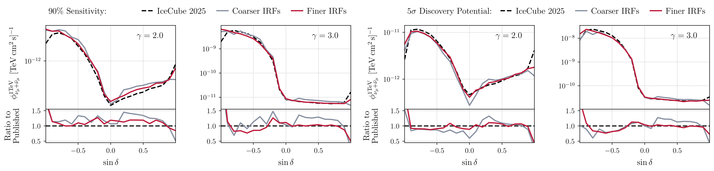
图注：Comparison of the average astrophysical neutrino flux required to reach the 90\% sensitivity (top) and a 5$\sigma$ discovery prior to any penalty factors calculation (bottom) in 14 years of IceCube observations, assuming unbroken power-law spectra with spectral index $\gamma = 2.0$ (left) and $\gamma = 3.0$ (right), shown as a function of source declination. The IceCube sensitivity (black dashed) from \(\citet{IceCube:2025arXiv}\) is compared to two benchmark estimates obtained using publicly available tools. The grey curve shows the sensitivity derived using the IRF matrices coarsely binned, as in IceTracks-DR1~\(\citep{IceCube:2021arXiv}.\) The red curve shows the result obtained using the more finely binned IRF matrices with misreconstructed events manually removed from the effective area, as described in \(\autoref{sec:detector-response}.\)
对应解读：“建议重点查看的图表”第5项灵敏度和发现势曲线，以及“关键图表逐图导读”图5；也对应公开响应与内部工具基准比较。
入选理由：该图直接给出14年数据的90%灵敏度和5σ发现势随赤纬变化，并同时比较内部IceCube结果、粗分箱公开IRF和改进分箱公开IRF。它最能支撑日报中关于南北天灵敏度差异、新旧公开响应改进、以及公开工具是否能复现核心性能的解读。
来源与置信度：\(arxiv_source\)；high；\(arxiv_source\) / main.tex:figure[9]
Fig10
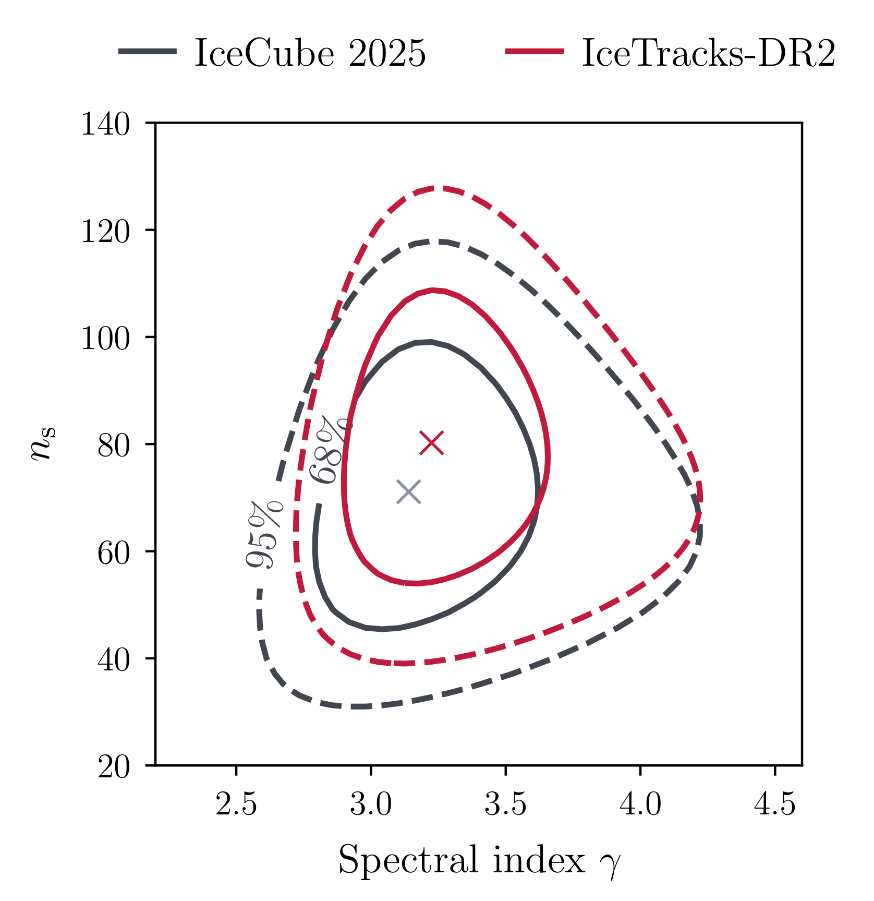
图注：\(\textbf{Comparison of NGC 1068 Likelihood Scans.}\) Comparison of the likelihood scan around the best-fit flux parameters ($\hat{n}_{\mathrm{s}}$, $\hat\gamma$) from the direction of NGC\,1068. The best-fit point (cross) and the 1$\sigma$ (solid line) and 2$\sigma$ (dashed line) confidence levels calculated assuming Wilks' theorem are shown in gray for \(\citet{IceCube:2025arXiv}\) and in red for the analysis of IceTracks-DR2 data performed with SkyLLH.
对应解读：“建议重点查看的图表”第6项公开响应与内部工具基准比较，以及模型拟合段落中关于\(n_s\)、\(\gamma\)、置信区间和退化的讨论。
入选理由：该图比较NGC 1068方向上内部分析与SkyLLH公开分析的似然扫描，明确展示最佳拟合\(\hat n_s\)、\(\hat\gamma\)以及1σ、2σ置信轮廓。它比单纯结果表更能显示公开响应在参数拟合和置信区间层面的复现质量。
来源与置信度：\(arxiv_source\)；high；\(arxiv_source\) / main.tex:figure[10]
Fig02
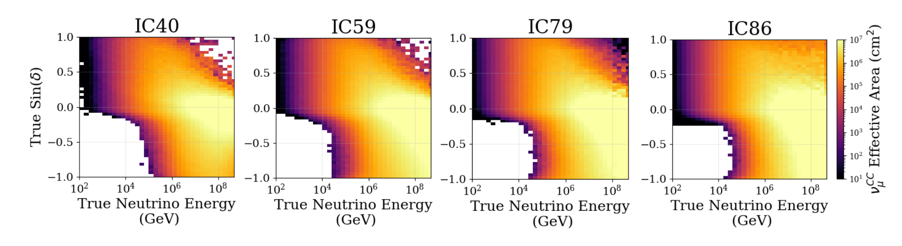
图注：The binned effective areas for each data-taking period included in IceTracks-DR2. IC40 through IC79 use the partially-completed detector while IC86 uses the complete 86-string detector configuration.
对应解读：“建议重点查看的图表”第2项有效面积随能量和赤纬变化图，以及“关键图表逐图导读”图2。
入选理由：有效面积是把天体中微子通量折叠为期望事件数的核心响应量。该图覆盖IceTracks-DR2各数据期和不同探测器构型，能支撑日报中关于能量阈值、选择效率、不同运行时期响应差异以及公开IRF使用方式的说明。
来源与置信度：\(arxiv_source\)；high；\(arxiv_source\) / main.tex:figure[2]
Fig03
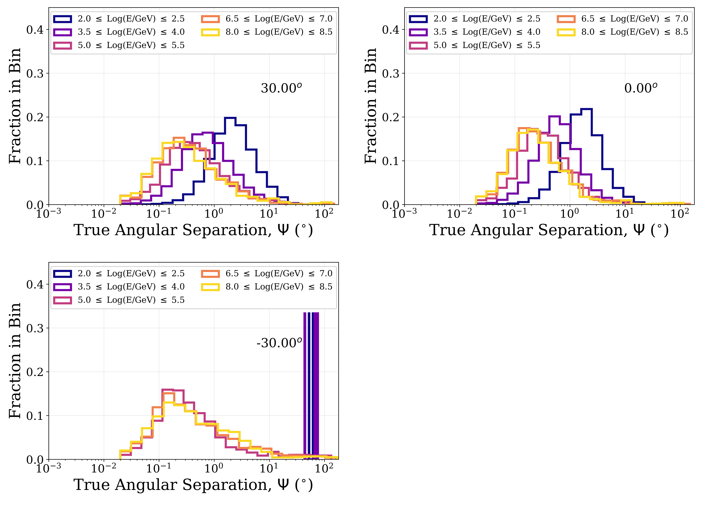
图注：Examples of the binned point spread functions measured in the northern sky ($\delta = 30^{\circ}$), horizon ($\delta = 0^{\circ}$), and southern sky ($\delta = -30^{\circ}$) for the IC86 season. Each colored histogram corresponds to a different true neutrino energy range. For a falling $E^{-2}$ spectrum, most muons are reconstructed less than $1^{\circ}$ from the neutrino origin. Note that in the rightmost plot, very few low-energy events pass selection criteria in the southern sky, resulting in sparsely populated PDFs in this region.
对应解读：“建议重点查看的图表”第3项角分辨率或点扩散函数图，以及“关键图表逐图导读”图3。
入选理由：该图给出北天、地平线和南天不同真实中微子能段的点扩散函数，是判断空间似然权重和非高斯尾部的重要诊断。它比只看中位角分辨率更能体现低能和南天稀疏PDF对点源搜索的影响。
来源与置信度：\(arxiv_source\)；high；\(arxiv_source\) / main.tex:figure[3]
Fig04
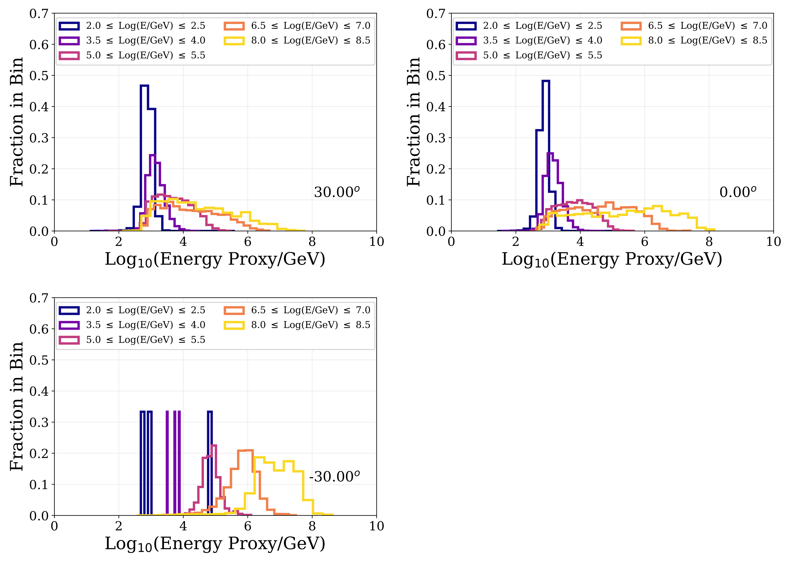
图注：Examples of the binned reconstructed muon energy measured in the northern sky ($\delta = 30^{\circ}$), horizon ($\delta = 0^{\circ}$), and southern sky ($\delta = -30^{\circ}$) for the IC86 season. Each colored histogram corresponds to a different true neutrino energy range. In the southern sky, high energy events reconstruct near the incident neutrino energy. In the northern sky and at the horizon, high energy events may interact far from the detector, producing energy losses which are not visible in IceCube.
对应解读：“建议重点查看的图表”第4项能量代理量响应或信号背景能量分布图，以及“关键图表逐图导读”图4。
入选理由：该图展示重建缪子能量在不同赤纬和真实能量区间的响应，直接支撑日报中关于能量代理量不能等同真实\(E_\nu\)、北天和地平线高能事件可能低估入射能量的提醒。它对理解\(n_s\)–\(\gamma\)退化和高能事件在似然中的权重很关键。
来源与置信度：\(arxiv_source\)；high；\(arxiv_source\) / main.tex:figure[4]
Fig06
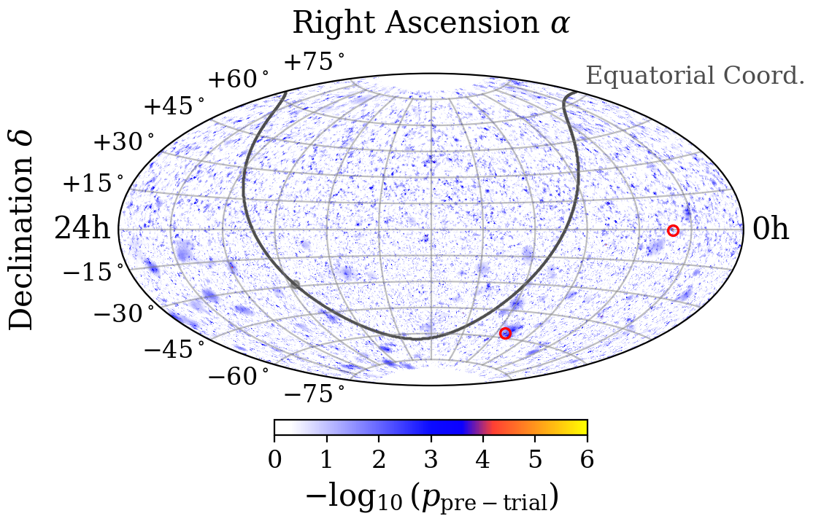
图注：\(\textbf{Time-Integrated All-Sky Map.}\) Pre-trial $p$-value map using 14 years of tracks in equatorial coordinates (J2000). The north/south boundary is at declination $-5$ degrees, separating sky regions where different processing strategies apply, as described in section \(\ref{sec:evt-selection}.\) This map includes 4 additional years of data compared to the previous IceCube track-based point-source search~\(\citep{Aartsen:2019fau}.\) The gray line marks the Galactic plane, and the gray dot marks the Galactic Center. The hottest northern and southern spots are circled in red and described in Table~\(\ref{tab:generic_tint_skymap}.\)
对应解读：“建议重点查看的图表”第1项事件天空/全天空结构检查和第7项最显著热点结果，以及“关键图表逐图导读”图7关于热点扫描的讨论。
入选理由：该图是14年径迹样本的时间积分全天空预试验\(p\)值图，标出南北天处理边界、银河平面、银心和最热热点。它能帮助读者区分局部热点、曝光/背景结构与需要trial修正后的全局显著性，是解释点源搜索结果时最直观的全局诊断图。
来源与置信度：\(arxiv_source\)；high；\(arxiv_source\) / main.tex:figure[6]
强相关工作
这篇数据发布应放在 IceCube 公开点源样本、IceCube 10 年点源搜索、TXS 0506+056 多信使关联、NGC 1068 中微子证据以及银河平面中微子发射搜索的背景下阅读。相似工作的关键词包括 “IceCube point source search 10 year data release”、“IceCube public data effective area”、“IceCube unbinned likelihood neutrino source search”、“IceCube NGC 1068 neutrino”。这些工作共同定义了当前高能中微子点源分析的标准似然框架和显著性评估方式。
也要关注相反观点或张力：许多电磁亮源没有对应中微子显著信号，某些单事件关联在考虑 trials 后并不显著，源表叠加结果常受源权重假设影响。检索关键词可用 “neutrino blazar association trials factor”、“IceCube stacking analysis null result”、“high energy neutrino source population constraints”。这些文献能帮助读者判断 IceTracks-DR2 的新灵敏度究竟能排除哪些源模型，而不是只寻找新的热点。
相似工作：
- https://arxiv.org/abs/2101.09836
- https://arxiv.org/abs/1807.08794
- https://arxiv.org/abs/2211.09972
基础理论 / 方法工作：
- https://arxiv.org/abs/1304.5356
- https://arxiv.org/abs/1311.5238
- https://arxiv.org/abs/1811.07979
相反观点 / 张力线索：
- https://arxiv.org/abs/1901.10806
- https://arxiv.org/abs/2001.09520
4. Automating the detection of polarization angle rotations in blazars. Re-analysis of RoboPol data reveals 27 new rotations
- 来源：arXiv / astro-ph.HE
- 链接：https://arxiv.org/abs/2605.18955v1
- 作者：Anastasia Glykopoulou, Ioannis Liodakis, Dmitry Blinov
- 评分：novelty 7/10，importance 7/10，relevance 10/10，final 9.05/10
- 推荐理由：Blazar polarization-rotation pipeline and RoboPol re-analysis with Fermi-LAT gamma-ray correlations are highly relevant to gamma-ray blazar jet physics and multiwavelength studies.
中文题目：自动识别耀变体偏振角旋转：重分析 RoboPol 数据发现 27 个新事件
做了什么：这篇文章把耀变体光学偏振电矢量位置角旋转，即 \(\mathrm{EVPA}\) rotations，的识别流程自动化：先处理 \(180^\circ\) 模糊性，再用 Bayesian Blocks 对时间序列自适应分段，最后做统计筛选。作者把这套流程用于 RoboPol 监测数据，识别出 25 个源中的 48 次旋转，其中 27 次此前未被报道。相比人工或半人工目录，新流程给出的旋转幅度平均约大 \(10\%\)，持续时间约长一倍，角速度约慢三分之一，说明过去目录受到分段方式和主观判据的系统影响。文章还把旋转事件与同时期 Fermi-LAT \(\gamma\) 射线光变比较，发现持续时间较长的旋转更常伴随增强的 \(\gamma\) 射线活动，而旋转幅度本身并不能预测 \(\gamma\) 射线亮度。
为什么重要：耀变体偏振角旋转常被用来讨论喷流磁场结构、辐射区运动轨迹、激波或磁重联等物理过程，但长期以来事件定义相当依赖人工判断。本文的重要性在于把“什么算一次旋转”变成可复现的统计问题，并量化了旧目录可能存在的选择偏差。对于研究喷流几何、粒子加速和多波段相关性的读者，这直接影响样本统计和理论解释。
理论 / 观测 / 仪器方法价值：方法价值主要在于三点：第一，\(180^\circ\) 解缠、Bayesian Blocks 分段和显著性检验形成了可复用的自动管线；第二，它重新校准了 RoboPol 旋转事件目录，增加 27 个新事件，尤其补上了 2016--2017 季度的遗漏；第三，它提示自适应分段与人工分段会系统性改变旋转的幅度、持续时间和速率，因此未来把偏振旋转与 \(\gamma\) 射线耀发、VLBI 结构或理论模型比较时，必须把事件识别算法本身当作系统误差来源。
为什么应该关注：如果你关心耀变体喷流中辐射区是否沿螺旋磁场运动、偏振旋转是否由随机游走产生、或 \(\gamma\) 射线耀发是否与有序磁场重构同步，那么这篇文章提供的是基础样本定义。它不只是多找了 27 个事件，而是在提醒我们：过去关于旋转幅度、旋转速率和高能活动关联的结论，可能部分来自人工切段和采样不均匀造成的偏差。
展开详细解读：文章讲解、背景、理论、重点章节、图表与相关工作
文章详细讲解
科学问题：耀变体的光学线偏振由同步辐射产生，\(\mathrm{EVPA}\) 记录了投影磁场方向和辐射区几何的变化。过去 RoboPol、KANATA、Steward Observatory 等项目发现过大量 \(\mathrm{EVPA}\) 旋转事件，但“连续旋转”的判定往往依赖人工检查：要不要跨过稀疏采样间隙、怎样处理 \(180^\circ\) 模糊、低偏振度时角度误差是否过大、一个长事件是否应拆成几个短事件，这些都会改变统计结论。因此本文的核心问题是：能否以自动、可复现、可量化显著性的方式，在历史偏振监测数据中识别 \(\mathrm{EVPA}\) rotations，并检验旧目录的系统偏差。
作者怎么做：文章构建了一条自动管线。第一步是对观测到的 \(\mathrm{EVPA}\) 序列做 \(180^\circ\) ambiguity correction，即利用相邻点之间最小角距离原则把角度“展开”到连续轨迹上。第二步使用 Bayesian Blocks，把不均匀采样且有测量误差的角度时间序列分解成若干统计上近似稳定或近似单调的区段。第三步对候选区段施加旋转幅度、持续时间、点数、方向一致性和统计显著性等判据，以减少由噪声、采样间隙和孤立异常点造成的假事件。随后作者将结果与此前 RoboPol 目录比较，并与 contemporaneous Fermi-LAT \(\gamma\) 射线光变做相关分析。
关键结果：应用到 RoboPol 数据后，管线识别出 25 个耀变体中的 48 次旋转，典型幅度覆盖 \(90.8^\circ\) 到 \(359.7^\circ\)，持续时间从 \(7.0\,\mathrm{d}\) 到 \(111.3\,\mathrm{d}\)，平均旋转速率约 \(5.0^\circ\,\mathrm{d}^{-1}\)。其中 27 次是此前未报道的事件，包含最终 2016--2017 观测季的 11 次。与旧目录相比，Bayesian Blocks 方法倾向于把旋转定义得更完整：平均幅度约大 \(10\%\)，持续时间约为原先两倍，角速度则约慢三分之一。这不是简单的数值修正，而是说明事件边界的选择会系统性改变物理量分布。
局限和下一步：这套管线仍然依赖采样节奏、角度误差、偏振度信噪比以及 Bayesian Blocks 的先验或惩罚项选择。\(\mathrm{EVPA}\) 解缠在采样稀疏、真实旋转速率很快或相邻点误差较大时并非唯一；同一条曲线可被解释为平滑旋转，也可被解释为随机游走中的一段偏移。\(\gamma\) 射线关联也受 Fermi-LAT 时间 binning、源亮度、背景模型和试验因子影响。下一步应把这套管线用于更长时标、多望远镜偏振监测，与 VLBI 核区结构、光谱能量分布拟合和时变喷流模型联合，最好还要通过模拟注入恢复实验给出 completeness 和 false-positive rate。
背景知识
研究对象是耀变体，即相对论喷流几乎指向视线方向的活动星系核。其非热辐射高度变源，光学波段通常由喷流中相对论电子的同步辐射主导。同步辐射天然带有线偏振，因此偏振度 \(p\) 和电矢量位置角 \(\chi\)，也就是 \(\mathrm{EVPA}\)，可以直接追踪辐射区的有序磁场分量、湍流单元叠加以及几何投影变化。
历史上，\(\mathrm{EVPA}\) 大幅旋转受到关注，是因为它们有时与光学或 \(\gamma\) 射线耀发相伴。典型解释包括：发射 knot 沿螺旋磁场移动；激波压缩并重排磁场；弯曲喷流中的辐射区视角连续改变；磁重联导致有序场拓扑变化；或者多个随机湍流单元的偏振矢量叠加偶然产生长时间单向漂移。问题在于这些机制都可能产生相似的 \(\chi(t)\) 轨迹，单个事件通常不能唯一诊断物理模型。
RoboPol 的贡献在于提供了相对系统的光学偏振监测样本，使旋转事件可以做群体统计，而不是只讨论个别著名源，例如 \(3\mathrm{C}\,279\)、\(\mathrm{BL}\,\mathrm{Lac}\) 或 \(\mathrm{OJ}\,287\)。但事件目录的构建不可避免地面对采样不均匀、季节性空窗、偏振角 \(180^\circ\) 等价性、低偏振度下角度误差发散等问题。早期目录中人工检查非常重要，但也意味着边界定义和候选筛选难以完全复现。
现在值得重新看的原因有两个。第一，时域天文学越来越依赖自动化管线，未来 Rubin Observatory、大片偏振巡天和高节奏多波段监测会产生远超人工检查能力的数据量。第二，关于偏振旋转与高能耀发是否物理相关，文献中一直有不同结论；如果旋转样本本身含有算法偏差，那么相关性强弱、事件率和速率分布都会被误估。
该领域一个常见误区是把每一次大幅 \(\mathrm{EVPA}\) 旋转都视为有序磁场或螺旋轨迹的直接证据。事实上，随机游走模型在足够多湍流单元和合适采样下也能产生看似平滑的旋转。另一个误区是只看旋转幅度而忽略持续时间、偏振度、采样间隔和误差协方差；同样的 \(180^\circ\) 旋转，若发生在 \(5\,\mathrm{d}\) 与 \(100\,\mathrm{d}\)，对应的物理尺度和随机概率完全不同。
基础理论 / 方法脉络
基础物理图像从同步辐射开始。相对论电子在磁场中螺旋运动，辐射的电矢量方向与投影磁场方向相关；对光学薄同步辐射，观测到的 \(\mathrm{EVPA}\) 通常垂直于天球面上的磁场投影。若喷流中只有一个均匀磁场区域，\(p\) 可以较高且 \(\chi\) 稳定；若多个湍流单元同时贡献辐射，Stokes 参数 \(Q\) 与 \(U\) 叠加后会产生较低偏振度和随机变化的 \(\chi\)。
偏振观测的核心不是直接测角度，而是测 Stokes 参数。线偏振度和角度满足 \(p=\sqrt{Q^2+U^2}/I\) 与 \(\chi=\frac{1}{2}\arctan(U/Q)\)。由于 \(Q\) 与 \(U\) 对 \(2\chi\) 周期，\(\chi\) 与 \(\chi+180^\circ\) 表示同一个线偏振方向。这就是 \(180^\circ\) ambiguity：时间序列上的角度必须通过某种连续性假设展开，否则一次真实的跨越 \(180^\circ\) 旋转会被错误地画成反向跳变。
本文的方法假设可以把观测序列分成若干统计上有意义的时间块。Bayesian Blocks 的思想是，在不均匀采样数据中寻找最优分段，使每段内某个简单模型的似然足够好，同时对过多分段施加惩罚。用于 \(\mathrm{EVPA}\) 时，分段不是为了证明物理上真的分成离散阶段，而是为了用客观规则找出角度持续单调变化的区间，从而定义旋转的开始和结束。
关键可观测量包括旋转幅度 \(\Delta\chi\)、持续时间 \(T\)、平均角速度 \(\omega=\Delta\chi/T\)、事件内采样点数、方向一致性以及与 \(\gamma\) 射线通量 \(F_\gamma\) 的时间重合程度。\(\Delta\chi\) 大并不自动意味着事件显著，因为误差、采样间隔和偏振度都影响解缠可靠性；\(T\) 长也不自动意味着物理相关，因为长时标事件更容易与随机 \(\gamma\) 射线高态重叠。
主要退化和系统误差来自四处：其一，低偏振度时 \(\chi\) 的误差近似随 \(1/p\) 放大；其二，不均匀采样可能漏掉反向摆动，使随机过程看起来单调；其三，Bayesian Blocks 的惩罚强度会影响事件边界；其四，多波段相关分析受时间 binning 和多重检验影响。专业读者读这篇文章时，应该把“发现新旋转”与“改变旋转定义函数”同时看待。
公式与推导
第一步从 Stokes 参数定义线偏振。设总强度为 \(I\)，线偏振 Stokes 参数为 \(Q\) 与 \(U\)，则偏振度和 \(\mathrm{EVPA}\) 为
这里 \(\operatorname{atan2}\) 保留象限信息。因为 \(Q\) 与 \(U\) 依赖 \(2\chi\)，所以 \(\chi\) 与 \(\chi+180^\circ\) 等价，这是后续角度解缠的根源。
同步辐射给出偏振的物理上限。若电子能谱为 \(N(E)\,dE=K E^{-s}\,dE\)，光学薄均匀磁场中的最大线偏振度近似为
其中 \(s\) 是电子能谱指数，\(K\) 是归一化。实际耀变体的 \(p\ll p_{\max}\)，通常意味着多个磁场取向或辐射区叠加。
若有 \(N\) 个相近亮度、随机磁场方向的湍流单元，偏振矢量近似随机游走，期望偏振度可粗略写成
这个关系说明低 \(p\) 并不一定表示同步辐射不重要，而可能是多个偏振矢量相互抵消；同时低 \(p\) 会放大 \(\chi\) 的测量不确定性。
角度解缠可写成最小跳变量规则。对第 \(i\) 个观测角 \(\chi_i\)，选择整数 \(n_i\) 使展开角
满足相邻差
在允许误差下尽量小。这里 \(n_i\in\mathbb{Z}\)。该规则隐含假设是相邻采样之间真实旋转通常不超过约 \(90^\circ\)，因此在快速旋转或大空窗处可能失效。
一次候选旋转的基本量为
其中 \(t_{\rm start}\) 和 \(t_{\rm end}\) 来自分段算法或候选区间边界。符号 \(\omega\) 是平均角速度，不代表物理等离子体的真实角速度，除非给定几何模型。
Bayesian Blocks 可以抽象成最大化分段适应度。若第 \(k\) 个 block 的数据为 \(D_k\)，块内模型参数为 \(\theta_k\)，总目标函数可写成
这里 \(K\) 是 block 数，\(\lambda\) 是惩罚项，\(\mathcal{L}\) 是块内似然。\(\lambda\) 越大，分段越少，长旋转更容易被合并；\(\lambda\) 越小，噪声起伏更容易被分割成短事件。
若把某段内的展开角近似为线性变化，可用加权最小二乘似然
这里 \(a\) 是截距，\(b\) 是角速度估计，\(\sigma_{\chi,i}\) 是角度误差。这个式子可用于判断一个候选区间是否真的呈现单调或近似线性旋转。
角度误差可由 Stokes 参数误差传播近似得到。在高信噪比且 \(Q\)、\(U\) 误差相近时，
这里 \(\sigma_\chi\) 以弧度计，\(\sigma_p\) 是偏振度误差。该式解释了为什么低偏振度点对旋转识别特别危险：即使 \(Q\) 和 \(U\) 的绝对误差不大，角度也可能很不稳定。
与 \(\gamma\) 射线活动的比较可用事件窗口内平均通量或增强因子表示，例如
其中 \(\langle F_\gamma\rangle_{\rm rot}\) 是旋转期间的平均 \(\gamma\) 射线通量，\(\langle F_\gamma\rangle_{\rm base}\) 是基线或长期平均通量。若长旋转对应较大的 \(R_\gamma\)，可能提示持续粒子加速或几何增亮，但也必须检验时间窗口长度带来的偶然重合概率。
模型拟合 / 应用方法
本文的“拟合”主要不是传统辐射模型拟合，而是时序事件识别与统计分段。核心拟合量包括解缠后的 \(\tilde{\chi}(t)\)、每个 Bayesian Block 的边界、候选旋转的 \(\Delta\chi\)、\(T\)、\(\omega\) 以及事件显著性。若块内采用常数或线性趋势模型，残差应表现为与测量误差一致的无系统偏移；若残差出现连续弯曲或反向结构，说明该 block 过宽或模型过简化。
似然层面，角度数据的难点是它们是圆周变量而非普通实数。解缠后可以近似用 Gaussian 误差处理，但这种处理依赖相邻点展开的正确性。更严格的做法可在 \(Q\)-\(U\) 平面建模，直接拟合 Stokes 参数轨迹；不过本文的优势在于可在已有 \(\mathrm{EVPA}\) 目录数据上运行，并与过去 RoboPol 事件定义直接比较。
参数退化主要体现在事件边界与角速度之间。若算法把旋转前后的缓慢漂移也纳入同一事件，\(T\) 会变长、\(\Delta\chi\) 可能略增、\(\omega\) 会变小；这正是本文发现的新旧目录系统差异。相反，若分段过碎，一个物理上连续的长旋转会被拆成多个短而快的事件，导致速率分布偏高，并削弱与长时标 \(\gamma\) 射线活动的相关性。
系统误差还包括观测季节间隔、天气造成的不规则采样、不同源亮度导致的偏振角误差差异、以及低偏振度点的 Ricean bias。对于多波段关联，Fermi-LAT 光变的 bin 宽、低显著性 bin 的上限处理、背景模型和源混叠都会影响 \(F_\gamma\) 的估计。读者应特别关注作者是否对不同时间 bin、不同显著性阈值和不同 block 惩罚项做稳健性检验。
实际应用上，这类管线可以作为未来偏振巡天的事件触发器：当 \(\mathrm{EVPA}\) 出现持续旋转时，触发密集光学偏振、光谱、毫米波和 VLBI 观测；也可以作为理论模型的样本选择函数，把模拟产生的 \(\chi(t)\) 经过相同采样和噪声处理后与观测目录比较。最需要避免的是直接把自动识别事件当作物理事件的一一对应；自动目录给出的是统计上定义良好的候选旋转，物理解释还需要多波段和模型约束。
重点章节 / 结果段落怎么读
数据与样本部分应先看 RoboPol 数据覆盖、源列表、观测季、角度误差和采样间隔。这里决定了管线能恢复哪些时标的旋转，也决定了 2016--2017 季新增事件的意义。读者应检查是否所有源使用一致的质量控制，以及低偏振度或大误差点如何处理。
方法部分是全文最关键。重点读 \(180^\circ\) ambiguity correction 的规则、Bayesian Blocks 的适应度函数或惩罚项、候选旋转筛选条件，以及统计验证流程。专业读者应问：如果相邻点间隔很长，算法是否允许多种解缠方案？如果 block 边界稍微移动，\(\Delta\chi\) 和 \(T\) 会变多少？
结果目录部分给出 48 次旋转和 27 次新事件。建议把表格中的源名、事件开始结束时间、幅度、持续时间和速率与旧 RoboPol 目录对照阅读，特别关注多次出现事件的源，如 RBPLJ2232+1143、RBPLJ1751+0939、RBPLJ1800+7828 和 RBPLJ2253+1608。
比较旧目录的部分应作为系统误差分析来读，而不是只看“多发现了多少”。平均幅度增大约 \(10\%\)、持续时间约翻倍、角速度变慢约三分之一，说明事件识别算法改变了物理量分布。这个段落直接影响后续任何关于旋转速率分布、喷流几何尺度和随机游走概率的讨论。
\(\gamma\) 射线相关分析部分要重点看时间窗口定义和显著性。文章发现长旋转更常伴随增强的 \(\gamma\) 射线活动，而 \(\Delta\chi\) 不预测 \(\gamma\) 射线亮度。读者应检查这种趋势是否由少数亮源主导，是否考虑了多重检验，以及不同 binning 下是否稳健。
建议重点查看的图表
-
\(\mathrm{EVPA}\) 时间序列与自动分段图：看原始角度、解缠角度、Bayesian Blocks 边界和被标记的旋转区间是否直观一致，尤其在采样间隙附近是否有可疑连接。
-
新旧目录对比图：检查 \(\Delta\chi\)、\(T\) 和 \(\omega\) 的一一对应关系，看系统偏移是否普遍存在，还是由少数长事件驱动。
-
旋转参数分布直方图或核密度图：看 48 个事件的幅度、持续时间和速率是否呈现单峰、长尾或明显子群；特别注意阈值附近是否有堆积，可能反映选择函数。
-
多事件源的个例图：RBPLJ2232+1143、RBPLJ1751+0939、RBPLJ1800+7828 和 RBPLJ2253+1608 的曲线应单独检查，因为这些源可能主导统计趋势。
-
\(\gamma\) 射线光变叠加图：看旋转窗口与 Fermi-LAT 通量高态是否真正同步，还是因为长窗口提高了重叠概率。
-
相关性或散点图：例如 \(T\) 对 \(F_\gamma\) 增强因子、\(\Delta\chi\) 对 \(F_\gamma\)、\(\omega\) 对 \(F_\gamma\)。重点看置信区间、离群点和源内重复事件是否独立处理。
-
稳健性诊断表或附录图：若有不同 Bayesian Blocks 参数、不同最小点数、不同误差阈值下的事件恢复率，应检查新增 27 个事件是否稳定存在。
关键图表逐图导读
图 1：建议重点看管线流程或方法示意图。若横向展示从 Stokes 参数或 \(\mathrm{EVPA}\) 输入、\(180^\circ\) 解缠、Bayesian Blocks 分段到候选旋转筛选的步骤，读者应确认每一步的输入输出是什么。读图陷阱是把流程图理解为物理因果链；它只是事件定义算法。
图 2：典型源的 \(\mathrm{EVPA}\) 时间序列图通常以时间为横轴、\(\tilde{\chi}\) 为纵轴，数据点带误差棒，彩色阴影或竖线标出旋转区间和 block 边界。应看旋转是否由多个连续点支持、误差棒是否小于相邻变化、边界是否落在真实趋势变化处。若旋转跨越大观测空窗，需要格外谨慎。
图 3：新旧目录参数对比图可能以旧目录值为横轴、新算法值为纵轴，并画 \(y=x\) 参考线。若 \(T\) 的点系统性高于 \(y=x\)，而 \(\omega\) 系统性低于 \(y=x\)，就支持作者关于人工分段偏短、速率偏快的结论。陷阱是只看均值差异而忽略散点和离群事件。
图 4：旋转参数分布图应展示 \(\Delta\chi\)、\(T\) 和 \(\omega\) 的总体范围。横轴可能为参数值，纵轴为事件数。读者要注意阈值切割，例如最小幅度接近 \(90^\circ\) 时，低幅度端的缺口可能主要由选择标准造成，而不是自然分布。
图 5：\(\gamma\) 射线关联图可能把 Fermi-LAT 通量曲线与旋转窗口叠加。横轴为时间，纵轴为 \(F_\gamma\) 或归一化通量，阴影区域表示旋转。应看高态峰值是否位于旋转内部、领先或滞后，以及是否有无旋转的高态作为对照。陷阱是长旋转窗口天然更容易覆盖任意高态。
图 6：相关性散点图若展示 \(T\) 与 \(\gamma\) 射线增强、\(\Delta\chi\) 与 \(\gamma\) 射线亮度，应看相关系数、置信带和点的来源。若少数源有多次事件，点之间不完全独立；若误差条未包含窗口选择不确定性，显著性可能偏乐观。
论文原图 / 可嵌入图片
Fig03
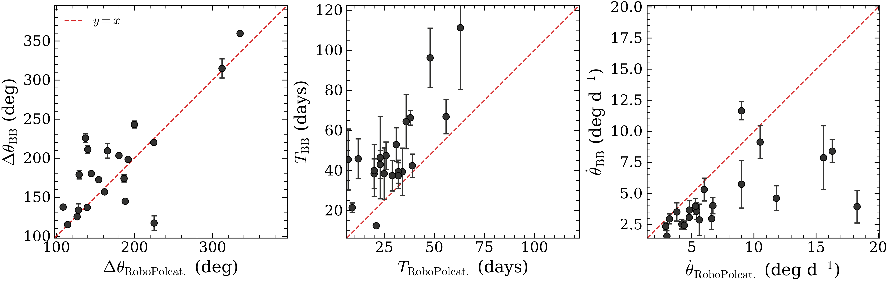
图注：Scatter comparison of EVPA rotation parameters between the RoboPol catalogs of \(\citet{blinov2015,blinov2016b,blinov2016a,Blinov2018}\) (x-axis, catalogue values) and the Bayesian Blocks results (y-axis). Panels show amplitude ($\Delta\theta_{\max}$), rotation period ($T_{\rm rot}$), and angular velocity ({$\dot{\theta}$}). Each point represents an overlapping rotation event. The red dashed line marks the identity relation $y = x$. A systematic offset is evident in the rotation period panel, with durations tending to be larger in the Bayesian Blocks catalog. The slower angular velocities reflect this difference in duration, while amplitudes show no strong systematic offset.
对应解读：对应“建议重点查看的图表”第2项新旧目录对比图，以及“关键图表逐图导读”图3和模型拟合段落中关于事件边界导致 T 变长、ω 变慢的系统偏差讨论。
入选理由：这张图直接给出旧 RoboPol 目录与 Bayesian Blocks 结果在 Δθmax、Trot、角速度上的一一对应散点，并含 y=x 参考线，是验证本文最核心结论——自动分段使持续时间系统性变长、角速度变慢——的关键证据。相比单个源个例，它更能支撑日报中关于目录系统偏移和事件边界退化的解读。
来源与置信度：\(arxiv_source\)；high；\(arxiv_source\) / aa58360-25.tex:figure[3]
Fig05
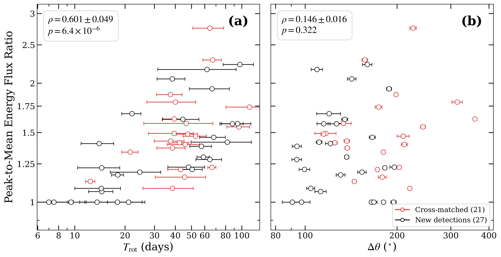
图注：Spearman correlations between the \(\textit{Fermi}--LAT\) peak-to-mean $\gamma$-ray energy flux and rotation parameters for all 48 detected rotation events, split into events overlapping with the \(\citet{blinov2015,blinov2016b,blinov2016a,Blinov2018}\) catalog (red circles, $n=21$) and the 27 newly reported events (black circles, $n=27$). (a) Rotation period $T_{\mathrm{rot}}$ versus peak-to-mean ratio. (b) Maximum EVPA amplitude $\Delta\theta_{\mathrm{max}}$ versus peak-to-mean ratio. Each panel reports the Spearman rank coefficient $\rho$ with its Monte Carlo uncertainty, the associated $p$-value computed over all 48 events, and the sample size $n$ as annotated. Axes are in log--log scale; horizontal error bars indicate uncertainties on the x-axis parameters.
对应解读：对应“建议重点查看的图表”第5项 γ 射线光变/关联检查、第6项相关性散点图，以及“关键图表逐图导读”图6中 T、Δχ 与 γ 射线增强因子的相关性讨论。
入选理由：该图展示全部48个旋转事件的 Fermi-LAT 峰均 γ 射线通量比与 Trot、Δθmax 的相关性，并区分旧目录重合事件和27个新增事件，直接检验日报强调的‘长旋转更可能伴随 γ 射线增强，而幅度不一定预测亮度’。图中还标出 Spearman ρ、p 值和误差条，科学诊断价值高。
来源与置信度：\(arxiv_source\)；high；\(arxiv_source\) / aa58360-25.tex:figure[5]
Fig02
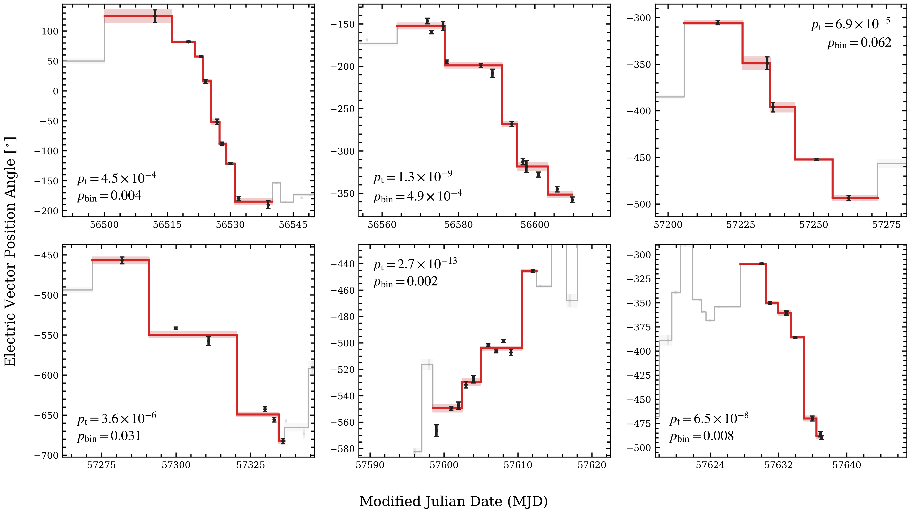
图注：Detected EVPA rotation events for CTA~102 (RBPLJ2232+1143). Each panel corresponds to an individual rotation interval and shows the EVPA evolution as a function of MJD together with the Bayesian Blocks trend (red line) and the observed data points with uncertainties.The middle panel in the bottom row illustrates a case that is included by our method because the extrema pair satisfies the amplitude and statistical thresholds, even though the rotation was interrupted at the second point of the third Bayesian Block. Under previous smoothness-based criteria, this interruption would result in two distinct rotations, neither of which satisfies the $90^\circ$ criterion.
对应解读：对应“建议重点查看的图表”第1项 EVPA 时间序列与自动分段图、第4项多事件源个例图，以及“关键图表逐图导读”图2中关于数据点、误差棒、Bayesian Blocks 趋势和旋转区间的检查。
入选理由：这张图逐个展示 CTA 102/RBPLJ2232+1143 的已检测旋转事件，包含 EVPA 随 MJD 的变化、观测误差和 Bayesian Blocks 趋势线，能直观看出自动算法如何把局部中断或不完全平滑的变化纳入同一旋转。CTA 102 又是多事件源之一，因此比单纯方法描述更适合支撑具体读图解读。
来源与置信度：\(arxiv_source\)；high；\(arxiv_source\) / aa58360-25.tex:figure[2]
Fig01
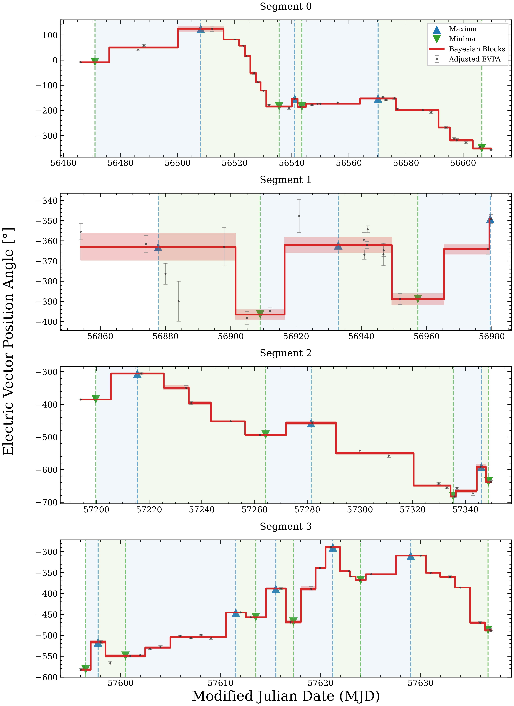
图注：Bayesian Blocks segmentation of the EVPA time series for CTA~102 (RBPLJ2232+1143). The panels show the accepted {segments}, defined by the criteria of more than four data points and a maximum spacing of 30 days between consecutive observations. Within each {segment}, the Bayesian Blocks step representation is overplotted, and the global minima and maxima are marked with triangles.
对应解读：对应“建议重点查看的图表”第1项 EVPA 时间序列与自动分段图、第4项多事件源个例图，以及模型拟合段落中 Bayesian Blocks 边界、分段表示和采样间隔约束的讨论。
入选理由：该图显示 CTA 102 的 EVPA 时间序列如何被切分为满足点数和最大间隔条件的 segments，并叠加 Bayesian Blocks 阶梯表示及全局极值，是理解候选旋转如何从分段和极值对中产生的基础图。它有助于检查采样间隙、block 边界和极值选择是否合理。
来源与置信度：\(arxiv_source\)；high；\(arxiv_source\) / aa58360-25.tex:figure[1]
Fig04
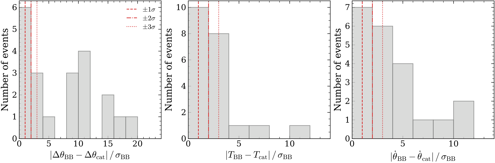
图注：Distributions of differences in sigma for overlapping EVPA rotation events. Panels show (a) amplitude, (b) rotation period, and (c) angular velocity. Histograms display normalized events of $\Delta = |x - y|/\sigma_x$ for each parameter. Vertical red lines indicate $\pm1\sigma$ (dashed ), $\pm2\sigma$ (dashed dotted), and $\pm3\sigma$ ( dotted) thresholds. Amplitude differences (panel a) are broadly distributed with a main peak near zero and a secondary peak at large $\Delta$ values; period differences (panel b) are skewed positive; and angular velocity differences (panel c) differences are primarily clustered within 4$\sigma$ with minor outliers at higher $\Delta$.
对应解读：对应“建议重点查看的图表”第2项新旧目录对比图的误差显著性延伸，以及模型拟合段落中关于系统误差、参数差异显著性和离群事件的讨论。
入选理由：这张图用以 σ 归一化的差异分布展示重合旋转事件在幅度、持续时间和角速度上的偏离程度，并标出1σ、2σ、3σ阈值。它比普通参数散点更强调差异是否超过测量误差，对判断系统偏移是普遍现象还是由少数离群点驱动很有帮助。
来源与置信度：\(arxiv_source\)；high；\(arxiv_source\) / aa58360-25.tex:figure[4]
强相关工作
这篇工作与 RoboPol 早期偏振旋转目录、Marscher 等关于 \(\gamma\) 射线耀发伴随光学偏振旋转的个例研究，以及随机游走解释的统计研究直接相关。相似工作的检索关键词包括 “RoboPol EVPA rotations blazars”、“optical polarization rotations gamma-ray flares”、“Bayesian Blocks time series astronomy” 和 “blazar polarization random walk”。这些文献共同构成了一个张力：有序喷流模型能自然解释平滑大幅旋转与耀发同步，但随机湍流模型也能在群体统计上产生相当多的旋转样事件。
本文与相反观点的关系尤其值得关注。若某些早期研究用人工目录得到旋转速率较快、持续时间较短的分布，那么它们对辐射区大小、Doppler 因子和磁场拓扑的推断可能需要重新评估。另一方面，自动算法发现更多长事件并不自动证明有序机制占优；它也可能意味着算法更愿意把随机漂移合并成长段。因此后续比较应把观测采样、噪声、解缠和事件识别完整注入模拟，而不是只比较理论 \(\chi(t)\) 曲线。
相似工作：
- https://arxiv.org/abs/1609.02102
- https://arxiv.org/abs/1711.07901
- https://ui.adsabs.harvard.edu/abs/2016MNRAS.463.1683B/abstract
基础理论 / 方法工作：
- https://ui.adsabs.harvard.edu/abs/1979rpa..book.....R/abstract
- https://ui.adsabs.harvard.edu/abs/2013ApJ...764..167S/abstract
- https://arxiv.org/abs/1207.5578
相反观点 / 张力线索：
- https://arxiv.org/abs/1601.07385
- https://ui.adsabs.harvard.edu/abs/2015MNRAS.446.3542K/abstract
5. The Astro2Geo Project I. Radio astrometric offsets correlated with Gamma-ray brightness
- 来源：arXiv / astro-ph.HE
- 链接：https://arxiv.org/abs/2605.19507v1
- 作者：Jeffrey A. Hodgson, Hana Krasna, Aletha de Witt, Pfesesani van Zyl, Janeth Valverde
- 评分：novelty 8/10，importance 7/10，relevance 9/10，final 9.00/10
- 推荐理由：将 ICRF AGN 射电天测位置偏移与 Fermi-LAT 伽马亮度关联，涉及 AGN 喷流和 GeV 高能活动的新型观测诊断，相关性高且方法有可复用性。
中文题目：Astro2Geo 项目 I：射电天体测量位置偏移与伽马射线亮度的相关性
做了什么：这篇文章把用于维护国际天球参考架的高精度 VLBI 射电天体测量数据，拿来研究活动星系核喷流的高能活动。作者测量了 92 个 ICRF3 参考源在 \(\mathrm{S/X}\) 和 \(K\) 波段的射电核心相对参考位置偏移，并与相近 \(\pm 30\) 天内的 Fermi-LAT 伽马射线通量比较；其中 57 个源有足够重叠数据。主要结果是：约 \(90\%\) 的可用源表现出统计显著的幂律相关，显著性阈值为 \(p<0.05\)，但相关方向有正有负，同一源在不同射电频段甚至可能符号相反。作者测试了伽马射线辐射区位置变化、核区不透明度变化、喷流位置角变化等解释，结论是没有单一机制能覆盖全部现象。
为什么重要：ICRF 的参考源通常被当成“足够固定”的宇宙灯塔，但它们本质上是有结构、有喷流、有耀发的 AGN。若射电核心位置会随高能活动系统性移动，这既影响微角秒级天体测量和大地测量，也给了我们一个新窗口：用天体测量残差追踪喷流内部的辐射区、光学深度和几何变化。
理论 / 观测 / 仪器方法价值：这项工作的价值不在于给出一个简单统一模型，而在于把两个过去常分开处理的数据流——VLBI 天体测量位置和 Fermi-LAT 伽马射线光变——放在同一统计框架下比较。它对理论模型的价值是约束伽马射线辐射区与射电核心的相对位置；对观测的价值是提示 ICRF 源结构变化可与高能状态相关；对方法的价值是展示 geodesy 级 VLBI 数据可以反向用于 AGN 物理。
为什么应该关注：如果你关心喷流中伽马射线到底在黑洞附近、射电核心上游还是下游产生，这篇文章提供了一类不同于谱能量分布和多波段光变的诊断量：绝对天体测量位置偏移。如果你关心 Gaia–VLBI 参考架、ICRF 稳定性或微角秒大地测量，它也提醒你：参考源的“位置噪声”可能携带真实的高能天体物理信号，而不只是 nuisance。
展开详细解读：文章讲解、背景、理论、重点章节、图表与相关工作
文章详细讲解
科学问题：ICRF 依赖大量致密 AGN 作为准固定参考点，但这些源的射电核心不是几何上的固定点，而是喷流中满足特定光学深度和亮度条件的表观结构。VLBI 天体测量给出的坐标会受到核心位移、喷流新成分、结构指数和频率依赖位置偏移的影响。本文问的是：这些射电天体测量位置偏移是否与 AGN 的伽马射线亮度有关？如果有关，相关性是否能告诉我们伽马射线耀发发生在射电核心附近、上游或下游，或者主要由喷流方向和透明度变化驱动？
作者怎么做：文章选择 ICRF3 中的射电参考源，计算其在 \(\mathrm{S/X}\) 与 \(K\) 波段相对 ICRF3 名义位置的偏移量，并把这些偏移与 Fermi-LAT 在时间窗口 \(\pm 30\,\mathrm{d}\) 内的伽马射线通量配对。原始样本为 92 个源，其中 57 个源具有足够的射电和伽马射线重叠观测。作者不是只看总体趋势，而是逐源拟合偏移量与伽马射线通量之间的幂律关系，评估相关显著性，并比较不同频段、不同源的符号和斜率。随后他们用几个物理图像来解释：可变的伽马射线辐射区位置、核区不透明度变化、喷流位置角变化，以及这些机制的组合。
关键结果：最醒目的结果是显著相关的发生率很高，约 \(90\%\) 的可用源在统计上表现出 \(p<0.05\) 的幂律相关。但相关不是单调统一的“伽马射线越亮，射电核心越远离黑洞”或相反图像。部分源为正相关，部分源为负相关；同一源在 \(\mathrm{S/X}\) 和 \(K\) 波段可能呈现不同符号。这说明偏移量不是一个简单的径向核心位移标尺，而可能混合了光学深度、喷流弯曲、成分喷出、频率依赖结构、投影效应和天体测量解的系统误差。时间滞后搜索只在 5 个源中给出非常初步、且作者明确加上限制条件的迹象，不能被当作强的因果延迟测量。
局限和下一步：样本虽然与 OCARS 目录相比在红移上大体代表更宽的 AGN 群体，但明显偏向光学更亮、天体测量解更好的源；这会影响结论外推。\(\pm 30\,\mathrm{d}\) 的配对窗口适合探索相关，但对快速耀发、稀疏采样和非平稳过程并不理想。偏移量本身是二维向量，而把它压缩为相对 ICRF3 的距离或某些投影量时会损失方向信息。下一步最有价值的是做事件级多波段联合分析：把 VLBI 成像结构、单碟射电光变、Fermi-LAT 自适应时间 bin、Gaia–VLBI 光学射电偏移和喷流位置角同时建模，区分真实核心移动和参考架解算中的结构噪声。
背景知识
研究对象是作为 ICRF 参考源的活动星系核，通常是射电响亮类星体、BL Lac 或其他具有相对论性喷流的 AGN。它们在 VLBI 尺度上非常紧致，适合作为天球参考架的锚点；但“紧致”不等于“无结构”。在毫角秒到微角秒层面，喷流核心、下游 knot、弯曲喷流和频率依赖核心位置都会改变拟合得到的表观质心或群延迟位置。
历史上，ICRF 的核心任务是为天体测量、大地测量、航天器导航和地球自转参数测定提供稳定参考系。于是 AGN 结构变化常被视为系统误差，需要通过源筛选、结构指数、频段选择和长期监测来控制。另一方面，在 AGN 物理中，同样的结构变化恰恰是喷流动力学、辐射机制和核区环境的信号。Astro2Geo 这类项目的思路就是把“误差项”翻译成“物理观测量”。
观测背景上，Fermi-LAT 自 2008 年以来提供了全天高能伽马射线监测，尤其适合研究 blazar 的长期光变。VLBI 大地测量网络在 \(\mathrm{S/X}\)、\(K\) 等频段积累了大量高精度位置数据。过去多波段研究常把伽马射线通量与射电总流量、VLBI 核亮度、偏振、视超光速成分喷出时间联系起来；本文则强调绝对天体测量位置本身也可能与高能亮度相关。
为什么现在值得重新看？一方面 ICRF3、Gaia 和多频 VLBI 让参考架精度进入微角秒时代，源结构带来的偏移不再能被粗略忽略。另一方面 Fermi-LAT 的时间基线已经足够长，能支持逐源统计比较。再加上未来 ngVLA、SKA-VLBI、VGOS 和更高频 VLBI 的发展，理解参考源位置随物理状态变化的规律会越来越重要。
该领域一个常见误区是把射电核心位置直接等同于黑洞位置。实际上，射电核心通常是喷流中在给定频率下光学深度约为 \(1\) 的位置，且会随频率、电子密度、磁场、喷流开角和耀发状态移动。另一个误区是把相关性自动解释为因果延迟；对于非平稳光变、稀疏采样和共同长期趋势，显著相关可以来自多种机制，必须结合方向、频率依赖和时滞检验。
基础理论 / 方法脉络
基本物理图像可以从相对论性喷流开始。AGN 中心的超大质量黑洞和吸积盘驱动准直等离子体喷流，喷流以洛伦兹因子 \(\Gamma\) 接近视线方向运动时，多普勒增强会让辐射强烈放大。因此 blazar 类源在射电和伽马射线都特别亮，并且常出现快速耀发。观测到的伽马射线通量变化可以来自粒子注入、磁场变化、外部光子场变化，也可以来自多普勒因子的小幅变化。
VLBI 天体测量测量的不是黑洞坐标，而是由源结构加权后的相位或群延迟位置。若源是理想点源，位置解稳定；若源有核心和喷流成分，观测到的表观位置会近似跟随亮度加权质心，或者更准确地说影响干涉相位、群延迟和结构延迟。射电核心的位置还会随频率改变，常见经验关系是核心到黑洞的距离随频率按幂律下降，因此 \(K\) 波段通常比 \(\mathrm{S/X}\) 更接近上游区域。
本文的关键量是相对 ICRF3 名义位置的射电位置偏移，以及同一时间附近的 Fermi-LAT 伽马射线通量。作者用 \(\pm 30\,\mathrm{d}\) 的时间窗口把两类数据配对，再拟合类似幂律的关系。这里的幂律不一定表示一个基本物理定律，而是一个稳健的经验参数化：它可以捕捉偏移幅度随高能亮度增长或降低的单调趋势，并允许不同源有不同斜率。
需要特别注意退化关系。伽马射线变亮可能意味着辐射区向下游移动并影响射电核心，也可能意味着同一辐射区的多普勒因子变大；后者会同时改变射电结构的亮度加权中心。核区不透明度下降会让高频或低频核心向上游移动，喷流中新成分出现会把质心拉向下游，喷流位置角摆动则会让二维位置偏移方向变化而不一定改变径向距离。频段差异、采样不均、Fermi-LAT 弱源通量上限、VLBI 网络几何和参考架约束都会引入系统误差。
公式与推导
第一步，把射电参考源的表观位置写成相对 ICRF3 的二维小角度偏移。若 ICRF3 名义坐标为 \((\alpha_0,\delta_0)\)，某次观测解为 \((\alpha_i,\delta_i)\)，小角近似下可定义
这里 \(\Delta x_i\) 与 \(\Delta y_i\) 是切平面上的赤经向和赤纬向偏移，\(\cos\delta_0\) 修正赤经角距离。偏移幅度常写成
这个量可用于和伽马射线通量做一维相关，但会丢失方向信息。
第二步，用源结构解释表观位置。若 VLBI 尺度上可近似为多个紧致成分，亮度加权质心为
其中 \(I_k\) 是第 \(k\) 个成分在频率 \(\nu\) 和时间 \(t\) 的射电亮度，\(\boldsymbol{\theta}_k\) 是其角位置。真实 VLBI 群延迟位置不完全等同于简单质心，但这个公式说明只要喷流成分亮度变化，表观天体测量位置就会改变。
第三步，频率依赖核心位移来自同步自吸收光学深度。常用经验式为
这里 \(r_{\rm core}\) 是射电核心到喷流顶点的投影距离，\(\Omega_r\) 是核心位移尺度，\(k_r\) 由磁场、粒子密度和能量均分状态决定。若耀发改变 \(\Omega_r\) 或 \(k_r\)，\(\mathrm{S/X}\) 与 \(K\) 波段的位置响应可以不同，甚至符号相反。
第四步，把高能亮度引入喷流多普勒增强。若本征辐射通量为 \(F'\)，观测通量近似为
其中 \(\delta_D\) 是多普勒因子，\(\Gamma\) 是洛伦兹因子，\(\beta c\) 是流速，\(\theta\) 是视线夹角，\(p\) 取决于辐射几何和谱指数。小的 \(\theta\) 或喷流摆动可同时改变伽马射线通量和射电位置投影。
第五步，本文采用经验幂律来描述位置偏移与伽马射线通量的相关性，可写为
其中 \(F_\gamma\) 是 Fermi-LAT 伽马射线通量，\(F_0\) 是归一化通量，\(A\) 是归一化偏移，\(b\) 是斜率。若 \(b>0\)，高伽马态对应更大偏移；若 \(b<0\)，高伽马态对应更小偏移。物理解释必须结合频段和方向。
第六步，实际拟合常在对数空间进行：
这里 \(a=\ln A\)，\(\epsilon_i\) 是残差，\(\sigma_{i,\rm eff}\) 包含位置误差、通量误差传播和可能的内禀散布。这个形式便于评估斜率显著性和正负相关。
第七步，若考虑二维偏移而非幅度，可把沿喷流方向的投影写为
其中 \(\phi_{\rm jet}\) 是天球上的喷流位置角。若相关主要出现在 \(s_i\) 而不是垂直方向，说明物理上更可能是核心位移或下游成分造成；若垂直方向也显著，则喷流弯曲、位置角变化或系统误差需重点考虑。
第八步，相关显著性可用斜率检验或相关系数检验表达。例如对相关系数 \(\rho\) 和样本数 \(N\)，近似统计量为
在零相关假设下，\(t\) 近似服从自由度 \(N-2\) 的 Student 分布。本文报告大量源达到 \(p<0.05\)，但多源、多频段、多窗口搜索会带来多重检验问题，因此物理解释应比单个 \(p\) 值更谨慎。
第九步，时滞检验的基本思想可用离散相关函数表示：
这里 \( au\) 是时间滞后，尖峰位置可提示哪一类变化领先。但当采样稀疏、耀发非重复、误差非高斯时，\(\mathrm{DCF}(\tau)\) 的峰值很容易受窗口函数影响，这也是作者对少数时滞候选保持谨慎的原因。
模型拟合 / 应用方法
这类分析的拟合对象主要有三组：射电位置偏移量、伽马射线通量以及它们之间的相关关系。位置偏移可以用二维 \((\Delta x,\Delta y)\)、径向幅度 \(r\)、沿喷流方向投影 \(s\) 或相对某个频段的核心位移来表示。本文摘要强调的是相对 ICRF3 的偏移与 Fermi-LAT 通量之间的幂律相关，并分别在 \(\mathrm{S/X}\) 与 \(K\) 波段比较。
参数估计上，最直接的模型是对数线性拟合，参数包括归一化 \(A\)、斜率 \(b\)、内禀散布和可能的误差缩放项。如果通量误差和位置误差都不可忽略，严格做法应使用 errors-in-variables 或层级贝叶斯模型，而不是普通最小二乘。Fermi-LAT 弱源还可能有低显著性 bin 或上限，若简单丢弃会造成亮态偏置；若纳入，则需要截断似然或含 censoring 的似然。
残差诊断非常关键。若拟合后残差随时间呈现连续漂移，可能说明长期喷流结构演化而非即时伽马射线活动。若残差与观测阵列、天区位置、源结构指数或观测频段有关，可能是天体测量系统误差。若 \(\mathrm{S/X}\) 与 \(K\) 波段斜率不同，不能简单说某个结果“错了”，而应把差异当作光学深度和空间采样不同的诊断。
主要退化关系包括：辐射区位置变化与核心不透明度变化都能导致沿喷流方向的偏移；喷流位置角变化与二维质心变化都能导致偏移方向改变；多普勒因子变化能同时放大伽马射线和改变射电亮度权重；采样窗口过宽会把非同时事件人为配对。要打破这些退化，需要加入 VLBI 成像、偏振、射电谱指数、单碟光变、Fermi-LAT 自适应 bin 光变和喷流成分运动学。
模型可能失败的地方也很明确。幂律相关适合描述平均趋势，但 AGN 耀发不是平稳过程，同一源在不同活动周期可能切换机制。把所有 epoch 用一个 \(b\) 描述可能掩盖状态依赖。另一个风险是多重检验：对许多源、两个频段、多个滞后窗口反复寻找 \(p<0.05\)，会提高偶然显著的比例。因此读者应优先关注符号一致性、频段规律、方向信息和物理可解释性，而不是只看显著性个数。
重点章节 / 结果段落怎么读
-
数据与样本选择：应先看作者如何从 ICRF3 和 VLBI 天体测量观测中选源，92 个源如何缩减为 57 个有足够重叠数据的源，以及与 Fermi-LAT 数据配对的标准。这里决定了选择函数，尤其是光学较亮、天体测量解较好的源是否会偏向某类 blazar。
-
射电位置偏移定义：重点看偏移是相对 ICRF3 固定坐标、逐 epoch 解，还是某种平均位置；误差椭圆如何处理；\(\mathrm{S/X}\) 与 \(K\) 波段是否采用一致的参考。这个部分决定结果究竟是在测物理核心位移，还是混合了参考架解算和结构延迟。
-
伽马射线通量配对与相关分析：重点看 \(\pm 30\,\mathrm{d}\) 时间窗口、Fermi-LAT 通量提取方式、低显著性点处理，以及幂律拟合和 \(p\) 值计算。读者应检查是否做了多重检验修正或至少讨论其影响。
-
物理解释部分：作者测试了伽马射线辐射区位置变化、核区不透明度变化和喷流位置角变化。阅读时不要期待一个统一答案，而要看每种机制能解释哪些源、哪些频段和哪些符号组合。
-
时滞搜索与稳健性检验：摘要说明只有 5 个源给出非常谨慎的时滞迹象。这里应重点看采样、窗口函数、显著性估计和假阳性控制。时滞若不稳健，就不能单独支持因果顺序。
-
与 OCARS 的样本比较：这一节关系到结论能否推广到更广 AGN 群体。红移代表性和光学亮度偏置应分开理解：红移分布相似不等于喷流类型、伽马射线探测率和天体测量质量完全无偏。
建议重点查看的图表
-
样本分布图：检查 92 个初始源、57 个可用源与 OCARS 总体在红移、光学亮度或天区分布上的差异。关键是看选择函数是否会偏向高多普勒增强源。
-
位置偏移时间序列：逐源查看 \(\mathrm{S/X}\) 与 \(K\) 波段偏移随时间变化，注意是否有少数极端 epoch 主导相关。
-
伽马射线光变与射电偏移叠加图：检查 \(\pm 30\,\mathrm{d}\) 配对是否合理，耀发峰和位置峰是否真的接近，还是由长期趋势造成。
-
幂律相关散点图：看横轴 \(F_\gamma\)、纵轴位置偏移或投影偏移，重点看斜率正负、误差条、离群点和动态范围。
-
\(\mathrm{S/X}\) 与 \(K\) 波段斜率比较图：这是判断频率依赖核心位移和不透明度变化的关键。若同源两频段符号相反，需要看误差是否重叠。
-
时滞诊断图：检查离散相关函数或等效滞后统计量的峰值宽度、置信区间和窗口函数伪峰。只有窄峰且经过模拟检验的滞后才有较强意义。
-
残差或显著性分布：看 \(p\) 值分布是否相对均匀加低 \(p\) 尾，还是集中在少数源；同时检查多重检验后仍有多少稳健结果。
关键图表逐图导读
图 1：样本与目录比较图。横轴可能是红移或光学星等，纵轴可能是源数、累计分布或概率密度。数据点或直方图应区分本文样本、可用重叠样本和 OCARS 母样本。主要结论应是红移上大体可代表更广 AGN 群体，但光学亮度和天体测量质量存在偏置。读图陷阱是把红移分布相似误解为所有物理性质都无偏。
图 2：单源射电位置偏移时间序列。横轴为时间，纵轴为 \(r\)、\(\Delta x\)、\(\Delta y\) 或沿喷流方向投影，颜色区分 \(\mathrm{S/X}\) 与 \(K\)。如果图上叠加伽马射线通量，应注意两个纵轴尺度不同。主要看偏移是否随高能活动阶段系统变化。陷阱是少数大误差点或异常 VLBI 解可能制造视觉相关。
图 3：偏移量与伽马射线通量的幂律散点图。横轴通常为 \(F_\gamma\) 或其对数，纵轴为射电位置偏移或投影偏移。模型线代表最佳拟合幂律，阴影可为置信区间。应检查点是否覆盖足够动态范围，以及斜率是否由多个 epoch 支撑。若只有一个耀发点拉出斜率，物理可信度较低。
图 4：逐源斜率或相关显著性汇总图。横轴可能是源名，纵轴是幂律斜率 \(b\)、相关系数或 \(-\log p\)，颜色区分频段。它能展示约 \(90\%\) 源显著相关的总体结果，也能显示正负相关混杂。读图时要特别看 \(\mathrm{S/X}\) 与 \(K\) 是否系统偏向不同符号。
图 5：物理机制示意或参数比较图。若文章展示伽马射线辐射区位置变化、核区不透明度变化、喷流位置角变化的预测，应看这些机制分别预言偏移方向、频率依赖和滞后符号如何不同。陷阱是示意图通常能解释个别源，但未必能解释总体统计。
图 6：时滞搜索图。横轴为滞后 \(\tau\)，纵轴为相关强度或显著性。若只有 5 个源有候选滞后，应看峰值是否超过模拟置信带，是否在不同 binning 下稳定。宽峰、边界峰或多个峰通常说明结果受采样窗口影响很大。
论文原图 / 可嵌入图片
Fig01
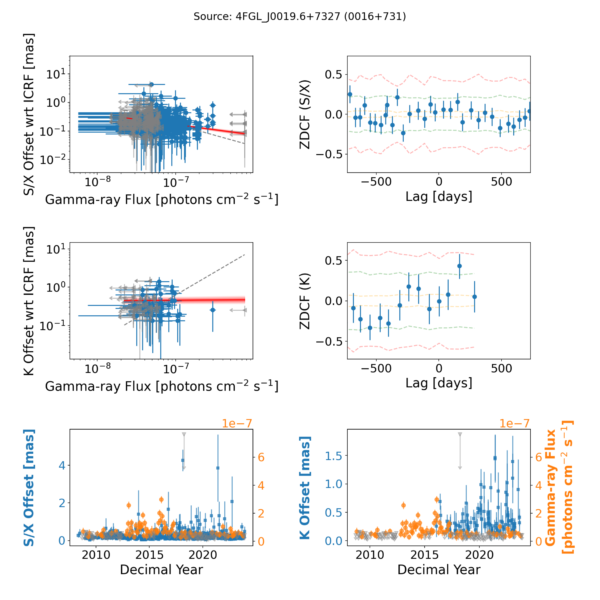
图注：Example plot for 0016+731. Top left: S/X band correlation plot. The Survivor-bias (SC) corrected best fit is in red with 1, 2 and 3 $\sigma$ errors in grey. The grey dashed line is the non corrected fit. Blue marks are detection and grey marks are upper limits. Top right: zDCF at S/X band with 1 (yellow), 2 (green) and 3 (red) $\sigma$ significance levels indicated. Note that zDCF panels may be empty (particularly at K-band) for sources with little data. Additionally, the 1, 2, and 3$\sigma$ significance contours (derived simulated light curves) may span a wider range of lag times than the real data; hence, these bounds can extend across the plot even in cases where the real data only yields one or two valid zDCF points. Middle row: Same as top row but for K-band. Bottom: monthly-binned $\gamma$-ray flux (blue) overplotted with the S/X band offsets (left) and with the K-band offsets (right) with respect to the ICRF3-SX.
对应解读：对应“建议重点查看的图表”中的位置偏移时间序列、伽马射线光变与射电偏移叠加图、幂律相关散点图和时滞诊断图；也对应“关键图表逐图导读”中的图2、图3、图6以及模型拟合段落。
入选理由：这是全文逐源诊断图的模板，单图同时包含S/X与K波段的偏移-伽马射线通量相关散点、经Survivor-bias校正与未校正的最佳拟合线、1/2/3σ置信区间、探测点与上限、zDCF时滞诊断，以及月bin伽马射线光变叠加射电位置偏移。它最直接支撑日报对幂律相关、误差/上限处理、两频段比较、±30天配对和滞后可信度的解读。
来源与置信度：\(arxiv_source\)；high；\(arxiv_source\) / main.tex:figure[1]
Fig02
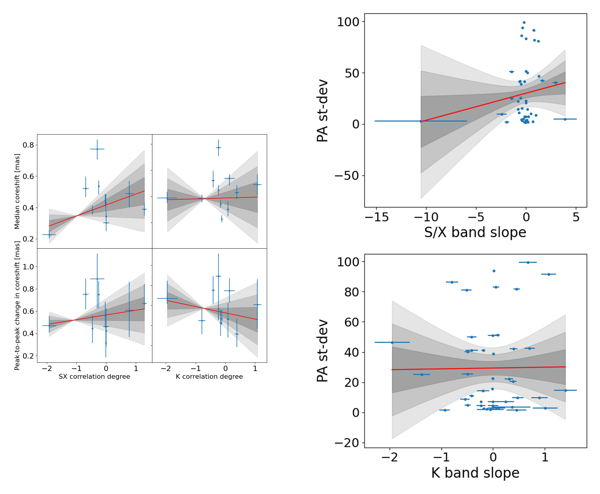
图注：Left: Correlation plots between the median core-shift (as reported by \citet{plavin19}) with the strength of the ICRF3-SX offset correlation at S/X-band (top-left) and K-band (top right). The same but with the peak-to-peak core-shift variability for S/X band (bottom-left) and K-band (bottom right). Right, upper: ICRF3-SX offset vs the standard deviation of the PA from \(\citet{alet23}\) at S/X band. Right, lower: same as top but for K band. In all panels, the red solid line represents the line of best fit, while the three progressively lighter shades of gray indicate the 1$\sigma$, 2$\sigma$, and 3$\sigma$ uncertainty ranges (confidence intervals) of the fit, respectively.
对应解读：对应“建议重点查看的图表”中的S/X与K波段频率依赖、物理机制比较，以及“关键图表逐图导读”中的图5；也对应模型拟合段落中关于核心位移、不透明度变化和喷流位置角变化的退化关系讨论。
入选理由：该图把ICRF3-SX偏移相关强度与文献核心位移中值、核心位移峰-峰变化以及喷流位置角标准差联系起来，并分别给出S/X和K波段的拟合线与1/2/3σ置信区间。相比单个源的重复诊断图，它更能检验作者提出的物理解释是否具有总体统计支撑，是理解为什么单一机制无法解释全部相关性的关键图。
来源与置信度：\(arxiv_source\)；high；\(arxiv_source\) / main.tex:figure[2]
Fig09
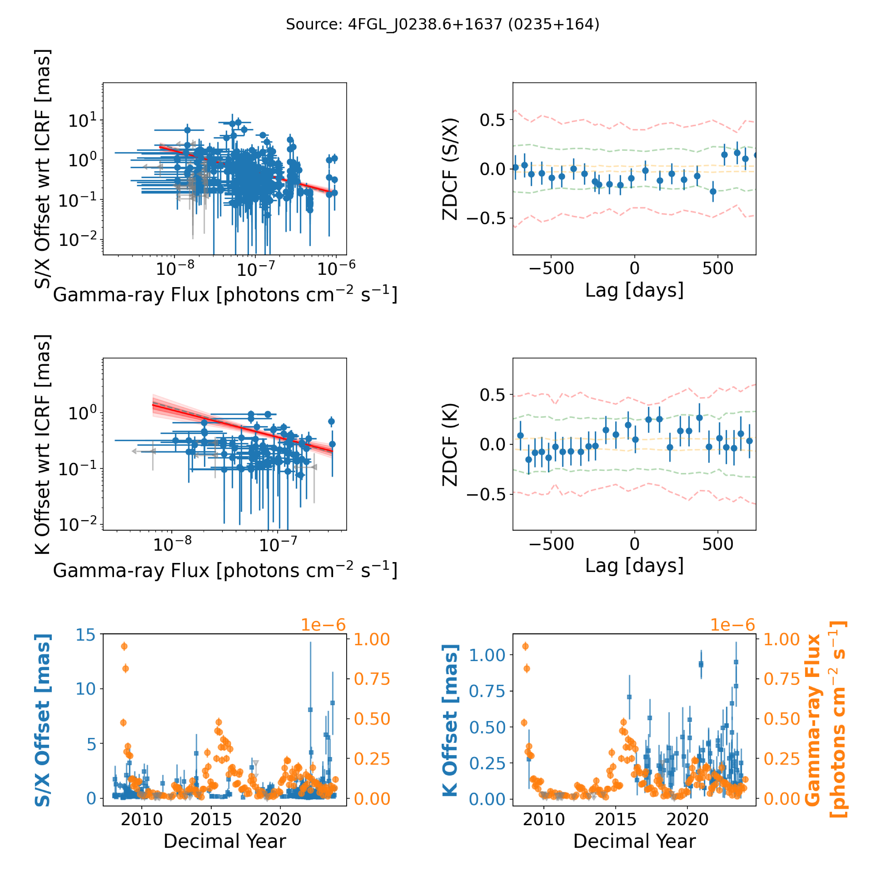
图注：Same as Figure \(\ref{fig:correlations1},\) but for the source 0235$+$164.
对应解读：对应“建议重点查看的图表”中的逐源位置偏移时间序列、伽马射线光变与射电偏移叠加图、幂律相关散点图和时滞诊断图。
入选理由：该图是0235+164的完整逐源诊断，格式与Fig01相同，包含两频段相关拟合、置信区间、上限处理、zDCF和光变-偏移叠加。作为著名强变源的逐源案例，它适合用来检查日报强调的耀发峰与位置峰是否真正接近、相关是否由少数高通量epoch主导，以及S/X和K波段行为是否一致。
来源与置信度：\(arxiv_source\)；high；\(arxiv_source\) / main.tex:figure[9]
Fig10
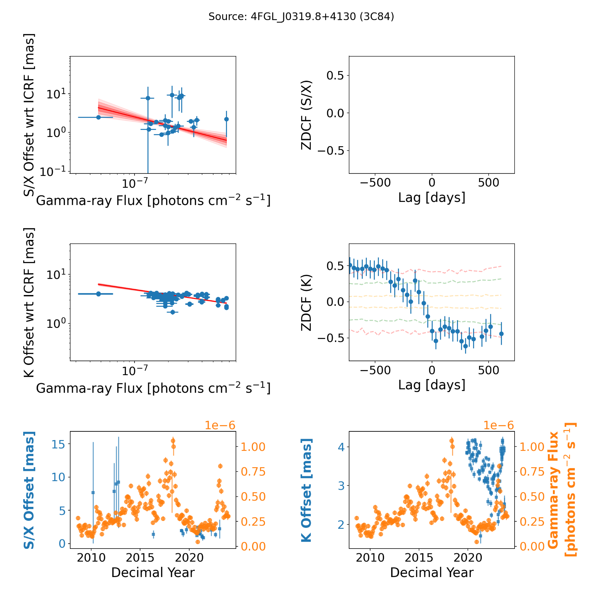
图注：Same as Figure \(\ref{fig:correlations1},\) but for the source 3C84.
对应解读：对应“关键图表逐图导读”中的单源射电位置偏移时间序列、偏移量与伽马射线通量的幂律散点图和时滞搜索图。
入选理由：该图给出3C84的同类多面板诊断。3C84与典型高红移耀变体不同，嵌入后有助于展示相关分析在不同AGN类型上的表现，并检验日报中关于结构演化、喷流成分和天体测量系统误差可能影响相关性的提醒。
来源与置信度：\(arxiv_source\)；high；\(arxiv_source\) / main.tex:figure[10]
Fig08
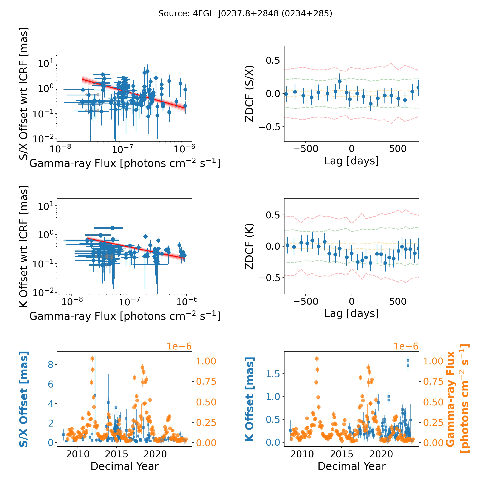
图注：Same as Figure \(\ref{fig:correlations1},\) but for the source 0234$+$285.
对应解读：对应“建议重点查看的图表”中的幂律相关散点图、伽马射线光变与射电偏移叠加图，以及模型拟合段落对单源幂律斜率和动态范围的讨论。
入选理由：该图是0234+285的逐源相关与时序诊断，能作为额外案例展示同一分析框架如何应用到不同源。虽然候选信息未显示其具体斜率符号或显著性强弱，但图中包含拟合线、置信区间、探测/上限和两频段面板，适合辅助说明源间差异。
来源与置信度：\(arxiv_source\)；high；\(arxiv_source\) / main.tex:figure[8]
Fig05
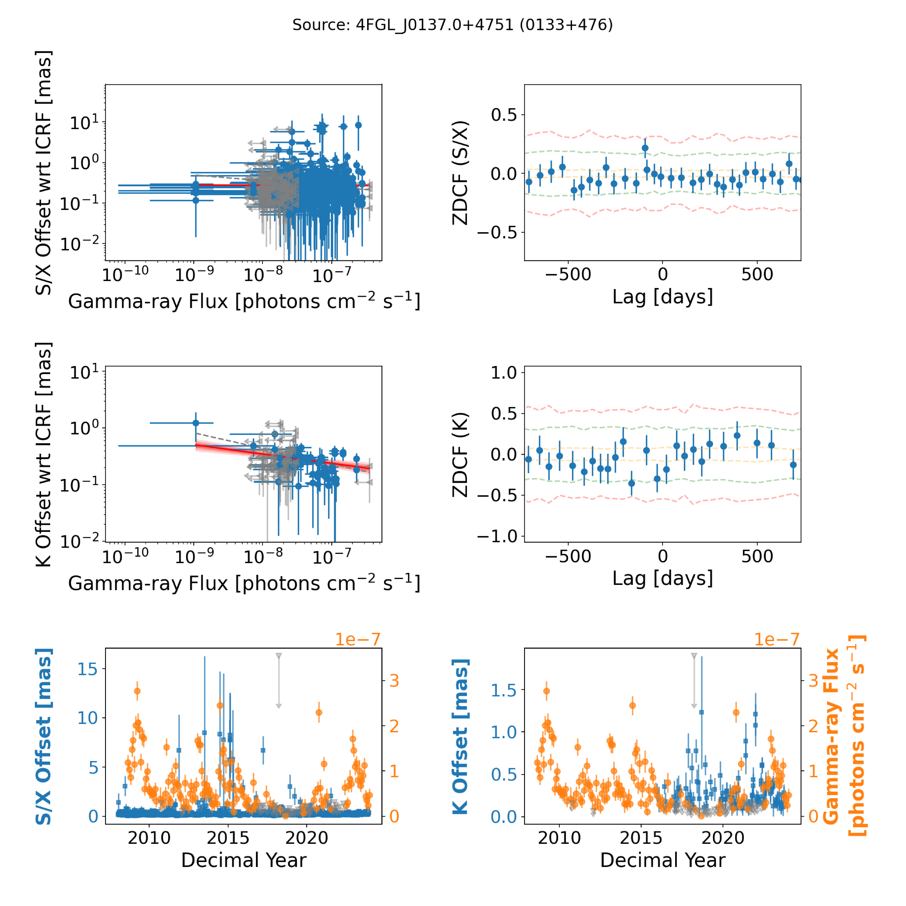
图注：Same as Figure \(\ref{fig:correlations1},\) but for the source 0133$+$476.
对应解读：对应“关键图表逐图导读”中的图2、图3和图6，即单源偏移时间序列、偏移-伽马射线通量幂律散点图和zDCF时滞搜索。
入选理由：该图是0133+476的完整逐源诊断，提供另一组S/X与K波段并列的相关拟合和光变叠加。它可用于和Fig01等源进行横向比较，帮助读者看到日报强调的正负相关混杂、频段差异和采样限制并非只来自单一示例。
来源与置信度：\(arxiv_source\)；high；\(arxiv_source\) / main.tex:figure[5]
强相关工作
这篇工作与传统的 blazar 多波段相关研究相邻。过去常见问题是伽马射线耀发与毫米/厘米射电耀发谁领先、VLBI 新成分喷出是否对应高能耀发、伽马射线辐射区在宽线区内还是在 parsec 尺度射电核心附近。本文把焦点从射电通量和成像形态转到绝对天体测量位置，使 geodetic VLBI 数据成为喷流物理诊断的一部分。建议检索关键词包括 “Fermi LAT VLBI core shift blazar gamma-ray flare”, “AGN astrometric jitter ICRF source structure”, “radio gamma-ray correlation blazars VLBI”.
它也与 Gaia–VLBI 位置偏移、ICRF 源结构系统误差和核心位移测量的文献相关。相反或张力观点主要来自两方面：一是一些研究认为射电位置噪声主要是仪器和结构系统误差，不宜过度物理解释；二是伽马射线辐射区位置在不同源、不同耀发中差异很大，不能用单一核心位移模型解释。本文的结论其实接近后一种谨慎态度：相关性强，但机制多样。建议检索 “Gaia VLBI offset AGN jets”, “ICRF3 source structure effect geodetic VLBI”, “blazar gamma-ray emission site broad line region radio core”.
相似工作：
- https://arxiv.org/abs/2605.19507
- https://arxiv.org/abs/1010.0508
- https://arxiv.org/abs/1802.02034
基础理论 / 方法工作：
- https://ui.adsabs.harvard.edu/abs/2018A%26A...619A.159C/abstract
- https://ui.adsabs.harvard.edu/abs/2018A%26A...619A.148M/abstract
- https://ui.adsabs.harvard.edu/abs/1979Natur.279..485B/abstract
相反观点 / 张力线索：
- https://arxiv.org/abs/1609.01425
- https://arxiv.org/abs/1810.04444
6. Directly tracking the re-brightening of a supermassive black hole accretion disk
- 来源：arXiv / astro-ph.HE
- 链接：https://arxiv.org/abs/2605.18958v1
- 作者：R. Middei, E. Nardini, C. Done, E. Lusso, F. Vagnetti, G. Risaliti, E. Piconcelli, S. Bianchi
- 评分：novelty 8/10，importance 8/10，relevance 8/10，final 9.00/10
- 推荐理由：Six-year simultaneous UV/X-ray monitoring gives strong evidence for an AGN accretion-state transition and disk-corona coupling, important for high-energy accretion physics.
中文题目：直接追踪一个超大质量黑洞吸积盘的重新变亮
做了什么：这篇文章利用附近活动星系 ESO 511-G030 长达六年的同步紫外和 X 射线监测，直接看到其宽波段谱能量分布发生大幅演化：紫外盘辐射在不到三年内增强超过一个数量级，而 X 射线冕辐射与紫外辐射在高吸积率阶段重新落到类星体中已知的非线性盘-冕关系上。作者认为这不是简单的遮挡物移开，而更像是光学厚、几何薄吸积盘逐步恢复；当吸积率低于约 \(10^{-2} L_{\rm Edd}\) 时，紫外-X 射线关系失效，符合内盘蒸发为热的、光学薄流的图像。其重要性在于，它给出了超大质量黑洞中类似 X 射线双星吸积态转变的直接时间域证据。
为什么重要：超大质量黑洞吸积盘通常被当作准稳态系统研究，但盘如何从低辐射效率热流恢复为标准薄盘、以及何时与 X 射线冕建立稳定耦合，一直缺少直接观测。这项工作把同一个 AGN 从低态到再亮化的演化连续追踪下来，给出了约 \(1\%\) Eddington 比附近可能存在盘结构转变的经验阈值，连接了 AGN、类星体和恒星质量黑洞 X 射线双星的吸积态物理。
理论 / 观测 / 仪器方法价值：对理论而言，它挑战了把辐射有效 AGN 吸积流视为单一、连续薄盘的简化图像，支持低吸积率下内盘截断或蒸发为热流的模型。对观测而言，它说明同步 UV/X 射线长期监测可以把遮挡变化、内禀吸积率变化和盘-冕耦合区分开来。对方法而言，它把单源时间域轨迹与大样本类星体的 \(L_{\rm X}\)-\(L_{\rm UV}\) 非线性关系结合，用同一物理标尺检查 AGN 状态转变。
为什么应该关注：如果你关心 AGN 反馈、黑洞增长率、类星体标准化关系或吸积盘-冕能量分配，这篇文章都值得看。它提醒我们：低光度 Seyfert 的“弱紫外”不一定只是尘埃遮挡或测光误差，而可能对应真实的吸积流拓扑变化；而当源跨过某个 Eddington 比阈值后，它又会重新加入明亮类星体遵循的盘-冕标度关系。
展开详细解读：文章讲解、背景、理论、重点章节、图表与相关工作
文章详细讲解
科学问题：标准 AGN 图像把光学/紫外连续谱归因于光学厚、几何薄吸积盘，把 X 射线幂律归因于内区热冕的康普顿化。然而，这两个分量如何在低吸积率下形成、断裂、再耦合，并没有被直接追踪清楚。ESO 511-G030 是一个足够近、足够亮、可长期监测的活动星系，因此可以把同一黑洞系统在几年尺度上的宽波段谱能量分布变化当成一个“吸积态实验”。本文核心问题不是简单问它变亮了多少，而是问紫外盘辐射的恢复是否伴随 X 射线冕进入类星体中已知的非线性 \(L_{\rm X}\)-\(L_{\rm UV}\) 关系，以及这种行为是否指向内盘从热流向薄盘的重建。
作者怎么做：文章使用约六年的同步紫外与 X 射线监测数据，构建 ESO 511-G030 的时间序列宽波段谱能量分布。紫外数据主要追踪吸积盘热辐射，X 射线数据追踪热冕辐射；同步性的关键在于避免非同时观测把真实演化误判为谱形差异。作者比较了不同历元的 UV/X 射线通量、谱形和二者之间的相关性，并把该源在演化过程中走过的轨迹放到更亮类星体中常用的 \(L_{\rm X}\)-\(L_{\rm UV}\) 或 \(\alpha_{\rm OX}\)-\(L_{\rm UV}\) 经验关系上检验。
关键结果：ESO 511-G030 的紫外盘分量在不到三年内增强超过一个数量级，说明主导变化来自光学厚盘的恢复，而不只是 X 射线冕单独波动。作者认为整体行为不太像遮挡物逐渐移开，因为遮挡模型通常会在不同波段留下特定吸收、消光或颜色变化特征；相反，数据更自然地支持内禀吸积流结构变化。当吸积率高于约 \(1\%\) Eddington 极限时，紫外与 X 射线紧密耦合，并遵循明亮类星体中已知的非线性盘-冕关系；低于该阈值时，这一关系显著破坏，符合内盘蒸发成几何厚、光学薄热流后，UV 薄盘供光子与 X 射线冕之间耦合减弱的预期。
局限和下一步：这仍然是一个单源长期案例，尽管物理图像很有说服力，但还不能单独确定状态转变阈值的普适性。黑洞质量、倾角、宿主星系污染、尘埃消光、X 射线吸收复杂性、以及 UV 波段对盘内不同半径的采样都会影响定量解释。下一步需要更多低红移 Seyfert 的高节奏同步 UV/X 监测，最好加入光学谱线、红外尘埃回声、X 射线谱时变和偏振约束，以区分内盘截断、磁通积累、热不稳定或外盘供给率变化等不同机制。
背景知识
研究对象 ESO 511-G030 属于附近活动星系，其中心超大质量黑洞通过吸积释放引力能。AGN 的经典宽波段图像包括两个主要连续谱分量：光学/紫外的热凸起来自光学厚吸积盘，X 射线幂律尾来自更靠近黑洞的热电子冕。对高光度类星体而言，二者之间存在相当紧的非线性关系，通常用 \(L_{\rm 2\,keV}\)、\(L_{2500\,\mathring{\rm A}}\) 或 \(\alpha_{\rm OX}\) 来表征。
历史问题在于，标准薄盘理论在很多 AGN 中能解释大致能量预算，却难以解释盘温度、盘大小、短时滞、X 射线再处理效率和低吸积率源的弱紫外辐射。恒星质量黑洞 X 射线双星显示清楚的硬态、软态以及中间态转变，低态中内盘可能截断，内区由热的光学薄流主导；但超大质量黑洞的状态转变时间尺度按质量放大，直接观测非常困难。
观测背景方面，AGN 长期变异常被三类解释纠缠：第一是内禀吸积率变化，第二是视线方向遮挡或消光变化，第三是盘和冕之间能量重分配。单一波段光变往往无法区分这些情况，因为 X 射线可因吸收柱变化而变暗，紫外可因尘埃消光而变红，而真正的吸积盘重建也会产生缓慢变亮。因此本文强调同步 UV/X 监测和宽波段谱能量分布演化。
为什么现在值得重新看：近十多年 Swift、XMM-Newton、NuSTAR 以及地面光学巡天使得附近 AGN 的多年尺度、多波段监测更可行；同时 changing-look AGN、潮汐瓦解事件和低光度 AGN 的研究都显示，超大质量黑洞吸积流并非总是准稳态。ESO 511-G030 的再亮化给了一个难得机会：它不是只在一次光谱中看到状态差异，而是沿时间轴追踪同一个系统如何重新进入辐射有效盘-冕耦合状态。
该领域常见误区是把所有 UV 增亮都归因于遮挡移开，或把所有 \(\alpha_{\rm OX}\) 偏离都解释为 X 射线吸收。实际上，若内盘缺失，紫外种子光子场、冕冷却效率和 X 射线谱形都会系统改变；反过来，若只是遮挡变化，应该在吸收边、柱密度、颜色变化或红外再辐射中留下相应痕迹。另一个误区是把类星体样本的平均 \(L_{\rm X}\)-\(L_{\rm UV}\) 关系无条件套到所有低 Eddington 比 AGN 上，而本文正指出低于阈值时该关系可能物理上失效。
基础理论 / 方法脉络
从基础物理图像看，吸积盘把气体的引力势能转化为热辐射。若角动量输运足够有效且冷却时间短，盘可以保持几何薄、光学厚，每个半径近似以多温黑体辐射。对超大质量黑洞，盘温峰值通常落在远紫外或极紫外，观测到的近紫外是盘外/中半径热辐射的尾部，因此 UV 光度常被用作薄盘是否存在及其供给率变化的代理量。
X 射线冕则是位于内盘附近的高温电子等离子体。盘发出的 UV/EUV 种子光子进入冕后被逆康普顿散射到 X 射线能段，形成近似幂律谱。盘越强，冕冷却越强；但冕本身也可能由磁重联、湍流耗散或内热流供能。因此 UV 与 X 射线不是简单线性正比，而是由能量分配、几何覆盖因子、种子光子密度和电子温度共同决定。
本文的关键假设是：ESO 511-G030 的大幅 UV 增亮主要反映光学厚盘分量的恢复，而非外部遮挡降低。若内盘在低吸积率下蒸发为热的光学薄流，则 UV 盘分量减弱，盘-冕耦合关系会偏离高光度类星体；当吸积率升高并超过某个阈值后，薄盘向内延伸，种子光子场增强，系统重新落回普适的 \(L_{\rm X}\)-\(L_{\rm UV}\) 非线性关系。
观测方法的逻辑是用同步 UV 与 X 射线数据构建多历元谱能量分布，计算单色 UV 光度、X 射线光度、Eddington 比或其代理量，并检查时间轨迹是否沿遮挡向量移动，还是沿内禀盘恢复轨迹移动。这里的系统误差包括宿主星系星光污染、银河系及宿主消光、X 射线吸收柱变化、仪器交叉定标、非同时性残余和 bolometric correction 的不确定性。
常见退化关系包括：黑洞质量与 Eddington 比的退化，因为 \(L_{\rm Edd}\) 直接随质量变；倾角与盘本征光度的退化，因为薄盘发射具有方向性；消光与盘温/盘亮度的退化，因为红化会让 UV 谱看起来像较冷或较弱的盘；X 射线吸收与冕本征弱化的退化，因为二者都会降低软 X 射线通量。本文价值就在于用长时间序列和 UV/X 同步关系削弱这些退化。
公式与推导
第一步从 Eddington 标尺开始。辐射压与引力平衡给出
其中 \(G\) 是引力常数，\(M_{\rm BH}\) 是黑洞质量，\(m_p\) 是质子质量，\(c\) 是光速，\(\sigma_T\) 是 Thomson 截面。本文讨论的约 \(1\%\) 阈值本质上对应 \(L_{\rm bol}/L_{\rm Edd}\sim 10^{-2}\)，即吸积流可能从辐射低效热流过渡到辐射有效薄盘的区域。
第二步把吸积率与辐射效率联系起来。若吸积流辐射效率为 \(\eta\)，则
其中 \(\dot{M}\) 是质量吸积率。对标准薄盘常取 \(\eta\sim 0.06\) 到 \(0.3\)，取决于黑洞自旋；对光学薄热流，实际辐射效率可随 \(\dot{M}\) 降低而下降。因此同样的 \(\dot{M}\) 变化在两种状态下会产生不同的 UV 与 X 射线响应。
第三步写出薄盘局地能流。忽略相对论修正时，半径 \(R\) 处单位面积释放的通量近似为
其中 \(R_{\rm in}\) 是内边界半径。若低态中 \(R_{\rm in}\) 增大，即内盘截断，则高温内盘 UV/EUV 分量会显著减弱；再亮化可理解为 \(R_{\rm in}\) 逐渐向内移动或 \(\dot{M}\) 增大。
第四步由黑体近似得到有效温度分布：
其中 \(\sigma_{\rm SB}\) 是 Stefan-Boltzmann 常数，\(T_{\rm eff}\) 是有效温度。观测 UV 波段对应满足 \(kT_{\rm eff}\) 与光子能量相近的一段半径，因此 UV 光变可追踪这些半径处的热结构变化，但并不直接等同于最内稳定圆轨道处的温度。
第五步把盘面发射投影为观测单色通量。近似多温黑体给出
其中 \(i\) 是倾角，\(D_L\) 是光度距离，\(B_\nu\) 是 Planck 函数，\(R_{\rm out}\) 是外盘半径。该式说明 \(F_\nu\) 同时受 \(\dot{M}\)、\(M_{\rm BH}\)、\(i\)、消光和内边界影响，是模型拟合中的主要退化来源。
第六步定义连接 UV 与 X 射线的常用观测量 \(\alpha_{\rm OX}\)：
其中 \(L_{\rm 2\,keV}\) 和 \(L_{2500\,\mathring{\rm A}}\) 是单色光度。明亮类星体中 \(\alpha_{\rm OX}\) 随 \(L_{2500\,\mathring{\rm A}}\) 系统变化，反映盘-冕能量分配不是线性的。
第七步可写经验非线性关系为
其中 \(L_{\rm X}\) 可取 \(2\,\rm keV\) 单色光度或积分 X 射线光度，\(L_{\rm UV}\) 可取 \(2500\,\mathring{\rm A}\) 单色光度，\(\gamma<1\) 时表示 UV 增亮时相对 X 射线变弱。本文的关键诊断是 ESO 511-G030 在高 Eddington 比阶段是否回到这条关系，而低态是否偏离。
第八步考虑遮挡的替代解释。若观测 UV 通量受消光控制，则
其中 \(F_{\nu,\rm int}\) 是本征通量，\(A_\nu\) 是频率相关消光。遮挡移开会造成强烈颜色变化，并应与 X 射线吸收柱 \(N_{\rm H}\) 的变化相关；若数据不沿这种消光向量演化，内禀盘恢复就更可信。
第九步对 X 射线谱可采用吸收幂律的基本形式：
其中 \(N(E)\) 是光子谱，\(K\) 是归一化，\(\Gamma\) 是光子指数，\(\sigma(E)\) 是光电吸收截面，\(N_{\rm H}\) 是等效氢柱密度。通过检查 \(K\)、\(\Gamma\) 与 \(N_{\rm H}\) 的时变，可以判断 X 射线变化是本征冕功率变化还是吸收变化。
第十步统计上可用带内禀散布的高斯似然检验盘-冕关系：
其中 \(x_j=\log L_{{\rm UV},j}\)，\(y_j=\log L_{{\rm X},j}\)，\(s_j\) 是测量误差投影，\(\sigma_{\rm int}\) 是内禀散布。该式让读者检查：高态数据是否具有小残差并贴合类星体关系，低态数据是否表现为显著离群。
模型拟合 / 应用方法
这类工作的第一层拟合是测量每个历元的 UV 与 X 射线通量。UV 端需要从仪器计数率转换为滤光片通量，校正银河系消光，估计宿主星系贡献，并在可能情况下转换成 rest-frame 单色光度。X 射线端通常拟合吸收幂律，必要时加入软超额、反射、窄铁线或复杂吸收成分，得到本征 \(0.3\) 到 \(10\,\rm keV\) 光度、\(2\,\rm keV\) 单色光度、光子指数和吸收柱。
第二层拟合是宽波段谱能量分布或盘-冕关系。最简单做法是把每个历元投到 \(\log L_{\rm X}\)-\(\log L_{\rm UV}\) 平面，与类星体经验关系比较；更物理的做法是用多温盘加康普顿化模型拟合，并允许 \(\dot{M}\)、\(R_{\rm in}\)、冕归一化、冕温度或能量分配比例随时间变化。本文摘要显示重点在经验关系和状态转变解释，而不是声称唯一反演出盘内半径。
参数退化需要特别小心。\(M_{\rm BH}\) 的不确定性会直接影响 \(L_{\rm Edd}\) 和阈值位置；倾角影响盘表观光度；宿主星光会稀释 UV/光学变幅；尘埃消光可模拟 UV 变暗；X 射线吸收变化可模拟冕变弱。若只用少数非同时点，几乎无法区分这些因素；本文的优势是六年同步监测提供了时间相关性、谱形变化和轨迹形状。
残差诊断应关注两类图。一类是相对于遮挡模型的残差：如果 UV 颜色、X 射线吸收柱和光度变化不能由单一 \(A_\nu\) 或 \(N_{\rm H}\) 解释，就削弱了 uncovering 方案。另一类是相对于类星体 \(L_{\rm X}\)-\(L_{\rm UV}\) 关系的残差：如果高态点残差小而低态点系统偏离，就支持阈值式状态转变，而不是一条简单连续相关线。
模型可能失败的地方包括：再亮化由外盘热-黏滞不稳定触发而非内盘蒸发/恢复；X 射线冕几何改变导致 \(L_{\rm X}\) 与 \(L_{\rm UV}\) 关系变化，但盘本身未发生明显截断；或者源中存在复杂、部分覆盖吸收，使得遮挡模型比摘要中所说更难排除。实际应用上，这篇文章提供了一个判据框架：对低光度 AGN，只要有长期同步 UV/X 数据，就可以检查它是否在 \(L/L_{\rm Edd}\sim 10^{-2}\) 附近从离群态转入类星体盘-冕序列。
重点章节 / 结果段落怎么读
-
数据与监测样本：读者应先看六年 UV 和 X 射线观测的时间覆盖、采样间隔、仪器来源和同步性定义。关键是确认紫外增亮不是由少数离群点驱动，也不是由不同仪器定标或非同时观测造成。
-
光变与谱能量分布演化：这一部分应展示 UV 通量超过一个数量级的上升，以及 X 射线如何随之变化。读者要注意作者如何扣除宿主贡献、如何处理消光和吸收，以及不同历元 SED 的形状是否表现为盘热分量真实增强。
-
遮挡情景检验：这是判断物理解释的核心段落。应重点看作者是否用 UV 颜色、X 射线柱密度、谱硬度、吸收特征或多波段一致性来排除简单 uncovering。不能只看光变幅度，因为遮挡和内禀变化都能造成大幅变亮。
-
与类星体盘-冕关系的比较：这部分把单源时间轨迹与大样本经验关系连接。读者应检查高态点是否真的落在 \(L_{\rm X}\)-\(L_{\rm UV}\) 关系的散布内，低态点偏离是否超过测量误差和内禀散布。
-
吸积态转变讨论：最后应读作者如何把约 \(1\%\) Eddington 阈值与内盘蒸发、热流、X 射线双星态转变作类比。需要区分“强暗示”与“唯一证明”：单源结果可以建立物理图像，但普适阈值仍需样本检验。
建议重点查看的图表
-
UV 与 X 射线长期光变曲线：看时间轴上紫外是否连续上升、增幅是否超过误差和宿主扣除不确定性；同时看 X 射线是否同步或滞后响应。
-
多历元宽波段 SED：看低态到高态的谱形变化，尤其 UV 凸起是否逐步出现，而不是所有波段按同一消光因子平移。
-
X 射线谱拟合与残差：检查吸收柱、光子指数、软超额或反射成分的变化，判断变亮是否可由 \(N_{\rm H}\) 下降解释。
-
\(L_{\rm X}\)-\(L_{\rm UV}\) 或 \(\alpha_{\rm OX}\)-\(L_{\rm UV}\) 图：看 ESO 511-G030 各历元点相对于类星体经验关系的位置，尤其高态回归和低态偏离是否清楚。
-
Eddington 比随时间或与残差的关系：看关系破坏是否集中在 \(L_{\rm bol}/L_{\rm Edd}\lesssim 10^{-2}\) 的区域，而不是随机散布。
-
遮挡向量或颜色-亮度图：如果有，应看数据轨迹是否平行于消光/吸收变化预期；若不平行，内禀盘恢复解释更强。
-
参数或系统误差表：检查黑洞质量、距离、消光、宿主贡献、bolometric correction 的取值，因为这些量决定阈值和光度归一化。
关键图表逐图导读
图 1：建议首先读长期光变图。横轴应为观测时间或 MJD，纵轴分别为 UV 滤光片通量和 X 射线通量/光度。数据点若按波段着色，应关注 UV 增亮是否在多个滤光片中一致出现，以及 X 射线是否与 UV 在高态阶段表现出更紧耦合。读图陷阱是把稀疏采样中的相邻点误认为物理滞后；应结合误差条和采样间隔判断。
图 2：多历元 SED 图通常以频率或能量为横轴、\(\nu L_\nu\) 或通量为纵轴。低态和高态模型线若显示 UV 凸起逐渐抬升，而 X 射线幂律没有按同一比例简单变化，就支持盘分量恢复。读图时要留意宿主星光、银河系消光校正和非同时数据是否以不同符号区分。
图 3：X 射线谱及残差图应以能量为横轴、计数谱或 unfolded spectrum 为纵轴，下方面板给出残差。若吸收模型无法通过降低 \(N_{\rm H}\) 同时解释软硬 X 射线与 UV 的演化，则 uncovering 方案受限。读图陷阱是 unfolded spectrum 依赖模型显示方式，真正判断应看拟合残差、参数置信区间和不同模型的信息准则差异。
图 4：\(L_{\rm X}\)-\(L_{\rm UV}\) 关系图是本文最关键的物理诊断。横轴通常为 \(\log L_{2500\,\mathring{\rm A}}\)，纵轴为 \(\log L_{\rm 2\,keV}\) 或积分 X 射线光度；背景灰点或带状区域代表类星体样本关系，ESO 511-G030 不同历元用彩色点连接。应看高态点是否落入关系散布，低态点是否系统偏离，以及误差椭圆是否足以跨越关系带。
图 5：若有 \(\alpha_{\rm OX}\) 或关系残差随 Eddington 比变化图，横轴可能是 \(L_{\rm bol}/L_{\rm Edd}\)，纵轴是 \(\Delta\alpha_{\rm OX}\) 或 \(\Delta\log L_{\rm X}\)。关键读法是看转折是否出现在约 \(10^{-2}\) 附近，并且不是由单个点控制。读图陷阱是 bolometric correction 自身可能随状态变化，导致横轴误差具有系统性。
图 6：如果论文给出遮挡模型对比或颜色-亮度图，应检查数据轨迹与理论消光向量的夹角。横轴可能是 UV 颜色或硬度比，纵轴是通量；遮挡移开通常伴随可预测的变蓝和吸收减弱。若观测轨迹更像整体盘温/盘面积变化，而非单一消光曲线，则内禀再亮化解释更稳健。
论文原图 / 可嵌入图片
Fig05
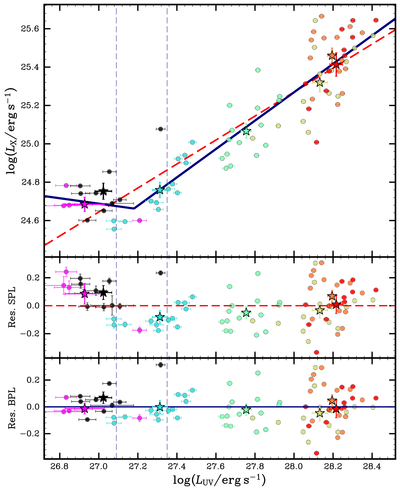
图注：$L_{\rm X}$--$L_{\rm UV}$ relation obtained from our data of ESO\,511-G030, where both quantities are AGN monochromatic luminosities, at 2 keV and 2500 \(\AA,\) respectively. Two distinct accretion regimes can be tentatively identified: one consistent with the standard $L_{\rm X}$--$L_{\rm UV}$ relation found for the general AGN population \(\citep\)[][]{Lusso2020}, and another that significantly deviates from the latter at low UV luminosities, where the X-ray flux remains roughly constant despite the decrease in UV flux. This behavior hints at a departure from the standard disc--corona energy balance, suggesting the transition to a different accretion regime. Vertical dashed lines are used to mark the uncertainties of the $L_{\rm UV,break}$.
对应解读：对应“建议重点查看的图表”第4、5项，以及“关键图表逐图导读”的图4/图5：$L_{\
m X}$--$L_{\
m UV}$关系、低态偏离、高态回归类星体盘-冕关系，并标出$L_{\
m UV,break}$不确定性。
入选理由：这是本文最核心的物理诊断图，直接展示ESO 511-G030各历元在2 keV与2500 Å单色光度平面上的轨迹，能够检验高吸积率时是否进入标准AGN非线性盘-冕关系、低UV光度时是否系统偏离。图中还用竖直虚线标出转折光度不确定性，最能支撑日报关于约1% Eddington阈值和吸积态转变的解读。
来源与置信度：\(arxiv_source\)；high；\(arxiv_source\) / Accepted.tex:figure[5]
Fig02
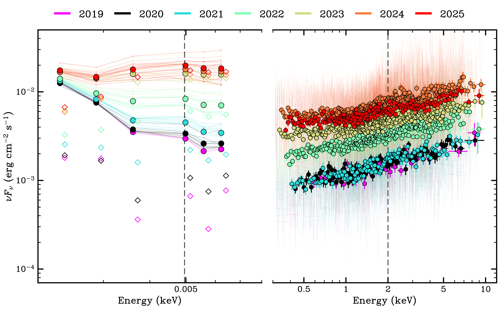
图注：Change in the observed broadband spectral energy distribution of ESO\,511-G030 during the {\(\it\) Swift} monitoring. Both the UVOT (left panel) and XRT (right panel) spectra are intrinsic, i.e., corrected for extinction and absorption based on the literature values of Galactic reddening and hydrogen column density. The thin background symbols represent all the individual SEDs of the source. The data are also binned on a yearly time scale (dots) to better highlight the long-term evolution, with the averaged X-ray spectra further grouped adaptively based on the signal-to-noise for visual purposes. The empty diamonds refer to the host-galaxy subtracted flux levels (see Sec.~\(\ref{galaxy}\) for details; the symbols are slightly shifted in energy for the sake of clarity). The effective wavelengths of the UVOT filters are the following: 5410 \AA\ (V), 4321 \AA\ (B), 3442 \AA\ (U), 2486 \AA\ (W1), 2221 \AA\ (M2), 1991 \AA\ (W2), after \(\citet{Breeveld2011}.\)
对应解读：对应“建议重点查看的图表”第2项和“关键图表逐图导读”的图2：多历元宽波段SED，检查UV凸起从低态到高态的逐步抬升、X射线谱形变化以及宿主扣除后的通量。
入选理由：该图同时给出UVOT与XRT的宽波段SED长期演化，包含逐次观测的薄背景点、年度平均点以及宿主星系扣除后的空心菱形，是判断UV增强是否为内禀盘分量恢复而非简单整体缩放或宿主污染的关键证据。它比单波段光变更直接展示了谱形变化。
来源与置信度：\(arxiv_source\)；high；\(arxiv_source\) / Accepted.tex:figure[2]
Fig01
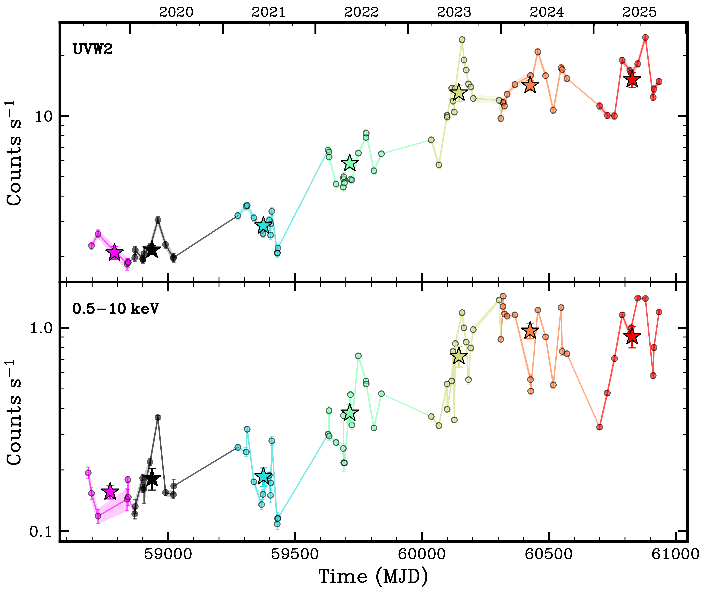
图注：UV (W2; effective $\lambda$\,=\,1991 \AA) and X-ray (2--10 keV) time evolution. \(\textit{Top:}\) observed count-rate light curve for the UVW2 filter. \(\textit{Bottom:}\) same for the 0.5--10 keV X-rays. Stars account for the mean flux within the annual time bin. The colors indicate the calendar year of observation; the same code is used in all the following plots.
对应解读：对应“建议重点查看的图表”第1项和“关键图表逐图导读”的图1：UVW2与X射线长期光变曲线，检查UV是否多年持续增亮以及X射线是否同步或在高态更耦合。
入选理由：该图提供六年监测的基本时间域事实：顶部为1991 Å UVW2计数率，底部为0.5--10 keV X射线计数率，并按年份着色、给出年度平均星号。它最适合支撑日报中‘不到三年UV增强超过一个数量级’和‘长期同步监测’的叙述，是理解后续SED和相关关系图的入口。
来源与置信度：\(arxiv_source\)；high；\(arxiv_source\) / Accepted.tex:figure[1]
Fig03
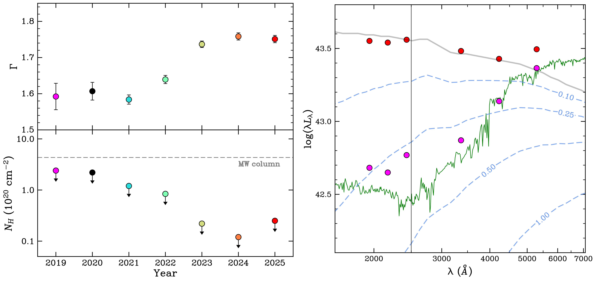
图注：{\(\it\) Left panel}: Evolution of the X-ray (0.5--10 keV) photon index $\Gamma$ from the average \(\textit{Swift}-XRT\) spectra (top) and 3$\sigma$ upper limits on any hydrogen column density local to the source $N_{\rm H}(z)$ in excess of the Galactic value (bottom). Across the whole campaign, the X-ray spectra imply minimal optical/UV extinction for a standard Galactic gas-to-dust ratio. {\(\it\) Right panel}: Optical/UV SED of ESO\,511-G030 from \(\textit{Swift}-UVOT\) in the low (2019; magenta dots) and high state (2025; red dots). The gray solid line is the intrinsic AGN template from \(\citealt{Saccheo2023},\) that best describe the high-state data, while the light-blue dashed curves show the effects of increasing reddening up to $E(B-V)$\,=\,1 assuming an SMC extinction law. While no reddened AGN SED is acceptable, the low-state optical data are consistent with being dominated by the host galaxy (green spectrum; see Section \(\ref{galaxy}\) for details).
对应解读：对应“建议重点查看的图表”第3、6项，以及“关键图表逐图导读”的图3/图6：X射线谱参数、局域吸收柱上限、低/高态光学UV SED与消光曲线对比，用于检验uncovering或尘埃消光解释。
入选理由：该图左侧给出X射线光子指数和源内额外氢柱密度$N_{\
m H}(z)$的3σ上限，右侧将2019低态与2025高态UV/光学SED同AGN模板、SMC消光曲线和宿主星系谱比较。它直接回答‘变亮是否可由吸收柱下降或去遮挡解释’，是排除遮挡模型、支持内禀盘恢复的重要图。
来源与置信度：\(arxiv_source\)；high；\(arxiv_source\) / Accepted.tex:figure[3]
Fig04
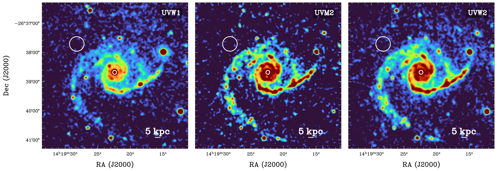
图注：Stacked multi-filter (UVW1, UVM2, UVW2) images of ESO\,511-G030 taken in 2019. Prominent spiral arms and star formation knots are clearly identified, consistent with the late-type morphological classification of the host galaxy \(\citep\)[Sc;][]{Lauberts1982}. The images are aligned to a common WCS reference frame and smoothed with a Gaussian kernel ($\sigma$\,=\,1.5 pixels) to enhance the S/N ratio of the extended features. The scale bar corresponds to a physical distance of 5~kpc at the redshift of ESO\,511-G030 ($z$\,=\,0.0223), while the circles indicate the source and background extraction regions, respectively.
对应解读：对应“建议重点查看的图表”第7项中关于宿主星系贡献和系统误差的部分，也辅助理解Fig02中宿主扣除通量的来源。
入选理由：该图不是核心物理关系图，但展示2019年多滤光片堆叠图像中的旋臂、恒星形成结和源/背景提取区域，有助于评估宿主星系污染对低态UV/光学通量的影响。其科学价值低于光变、SED、吸收诊断和$L_{\
m X}$--$L_{\
m UV}$关系图，因此排序靠后。
来源与置信度：\(arxiv_source\)；high；\(arxiv_source\) / Accepted.tex:figure[4]
强相关工作
这篇工作应放在三条文献线索中理解。第一是类星体 \(L_{\rm X}\)-\(L_{\rm UV}\) 或 \(\alpha_{\rm OX}\)-\(L_{\rm UV}\) 关系，它长期被用于研究盘-冕耦合，甚至被尝试作为宇宙学距离指标。ESO 511-G030 的特殊之处在于，它不是大样本静态散点中的一个点，而是在同一源的时间演化中从偏离关系到回归关系，因而更接近因果诊断。检索关键词可用 “AGN disk corona relation”, “\(alpha_OX\) luminosity relation”, “quasar X-ray UV correlation”。
第二是低吸积率 AGN 与 X 射线双星态转变的类比。ADAF/RIAF、截断薄盘和盘蒸发模型早已预言在低 Eddington 比下内盘可能消失，X 射线来自热流；但对超大质量黑洞，时间尺度长、样本复杂，直接追踪少见。本文与 changing-look AGN 研究也相关，但它更强调连续 UV/X 监测中的盘-冕耦合恢复，而不只是宽发射线出现或消失。检索关键词可用 “truncated accretion disk AGN”, “RIAF Seyfert state transition”, “changing-look AGN UV X-ray monitoring”。
第三是相反或竞争解释：可变遮挡、部分覆盖吸收、尘埃消光变化、X 射线冕几何变化都可能造成类似光变。读者在延伸阅读时应同时检索 “AGN variable obscuration”, “uncovering event Seyfert”, “partial covering absorber X-ray UV variability”，并特别关注那些用高分辨 X 射线谱、红外回声或偏振来区分遮挡与内禀吸积变化的工作。
相似工作：
- https://arxiv.org/abs/2605.18958
基础理论 / 方法工作：
- https://ui.adsabs.harvard.edu/abs/1973A%26A....24..337S/abstract
- https://ui.adsabs.harvard.edu/abs/1977ApJ...214..840S/abstract
- https://ui.adsabs.harvard.edu/abs/1995ApJ...438L..37N/abstract
- https://ui.adsabs.harvard.edu/abs/1998MNRAS.301..161M/abstract
- https://ui.adsabs.harvard.edu/abs/2008ARA%26A..46..475H/abstract
相反观点 / 张力线索：
- https://ui.adsabs.harvard.edu/abs/2014ARA%26A..52..529Y/abstract
- https://ui.adsabs.harvard.edu/abs/2016ARA%26A..54..761P/abstract
7. Recent Findings from the Telescope Array Experiment
- 来源：arXiv / astro-ph.HE
- 链接：https://arxiv.org/abs/2605.19553v1
- 作者：Jihyun Kim
- 评分：novelty 6/10，importance 8/10，relevance 9/10，final 8.75/10
- 推荐理由：Telescope Array 最新 UHECR 能谱、成分、各向异性和扩展状态总结，虽可能是会议综述而非单一突破，但对超高能宇宙线方向高度相关。
中文题目：望远镜阵列实验的近期结果
做了什么：这篇会议综述介绍北半球最大超高能宇宙线实验 Telescope Array（TA）及其扩展阵列的最新状态和科学结果。TA、TALE、TALE infill 与正在建设的 TA\(\times\)4 共同覆盖约 \(10^{15}\,\mathrm{eV}\) 到超过 \(10^{20}\,\mathrm{eV}\) 的广阔能区，用地面闪烁体阵列测量空气簇射在地面的粒子足迹，同时用荧光/切伦科夫望远镜记录簇射纵向发展。文章重点概述三类结果：能谱结构、质量组成指标以及最高能宇宙线到达方向各向异性。它的重要性在于，北半球天空覆盖与南半球 Pierre Auger Observatory 互补，而 TA\(\times\)4 的面积扩展将直接改善最高能端统计不足的问题。
为什么重要：超高能宇宙线的能谱截断、组成演化和各向异性是定位源天体与传播物理的三条主线，但它们都受限于极低流量、能标系统误差和大气簇射模型不确定性。TA 的价值不只是“又一个宇宙线实验”，而是提供北半球视场、混合探测能标、从膝区到极高能端的连续覆盖，以及对热点、能谱拐折和组成轻重变化的独立检验。
理论 / 观测 / 仪器方法价值：对观测而言，TA 通过地面阵列的大曝光量和荧光望远镜的近量热能量重建相结合，提供能谱、\(X_{\max}\) 和到达方向的交叉校准。对仪器而言，TALE infill 降低低能混合触发阈值，TA\(\times\)4 把高能端有效面积扩大约四倍，正好针对最高能事件稀少这一核心瓶颈。对理论而言，这些数据约束源注入谱、最大加速能量、银河到河外过渡、以及光核相互作用和磁场偏折模型。
为什么应该关注：如果你关心宇宙线源、强激波加速、AGN 或星暴星系关联、银河磁场/河外磁场，或者强子相互作用在 \(\sqrt{s}\) 超过 LHC 等效能区的表现，这篇综述是快速了解 TA 当前能力和问题清单的入口。它不会给出单一“答案”，但能告诉你哪些观测量已经受统计限制，哪些仍受模型系统误差限制，以及未来几年 TA\(\times\)4 最可能推动的方向。
展开详细解读：文章讲解、背景、理论、重点章节、图表与相关工作
文章详细讲解
科学问题：超高能宇宙线研究的核心矛盾是，能量最高的粒子最能指向极端天体加速器，却也是流量最低、统计最差、传播偏折和相互作用最复杂的样本。TA 关注三个彼此耦合的问题：能谱在膝区、踝部和最高能截断附近的形状；一次粒子的质量组成是否从轻核转向重核；最高能事件在天空上是否与局域大尺度结构、活动星系核或其他候选源存在相关。由于北半球天空包含一些近邻结构和候选源区域，TA 的各向异性结果尤其受到关注。
作者怎么做：文章以实验综述形式汇总 TA 主阵列、TALE、TALE infill 和 TA\(\times\)4 的状态。TA 主阵列使用塑料闪烁体地面探测器采样广延空气簇射在地面的粒子密度和到达时间，荧光望远镜则记录大气氮荧光给出的纵向能量沉积曲线。TALE 将能区向低能延伸，并利用荧光和切伦科夫光增强对 \(10^{15}\text{--}10^{18}\,\mathrm{eV}\) 区间的覆盖；TALE infill 通过更密的地面探测器降低混合事件阈值；TA\(\times\)4 则通过扩大地面阵列面积提升 \(10^{19.5}\,\mathrm{eV}\) 以上事件数。
关键结果：从摘要可知，本文报告的结果围绕能谱、质量组成和各向异性三项。能谱方面，TA 系列实验的目标是把低能 TALE 能谱与高能 TA 能谱拼接，检查膝区、第二膝、踝部以及最高能抑制是否一致。组成方面，主要诊断量通常是 \(X_{\max}\) 的平均值和涨落，它们依赖荧光望远镜对簇射纵向发展的重建，并与基于强子相互作用模型的质子、氦、氮、铁模板比较。各向异性方面，TA 传统上关注最高能事件的天空分布是否存在热点或与星系分布的相关性；TA\(\times\)4 的增大曝光量正是为了让这类检验从“有趣提示”走向更稳定统计。
局限和下一步：这类综述最需要警惕的是，许多结论不是由单一观测量决定的。能谱受能标、曝光量、大气透明度和探测器响应影响；\(X_{\max}\) 解释受高能强子模型影响；各向异性受能量阈值扫描、后验选择、磁场偏折和天空曝光非均匀性影响。下一步的关键不是单纯延长观测时间，而是把 TA\(\times\)4 高能统计、TALE infill 低能阈值、混合能标和跨实验联合分析结合起来，尤其要与 Pierre Auger Observatory 在共同赤纬带做能标和组成的交叉比较。
背景知识
研究对象是超高能宇宙线，即能量达到 \(10^{18}\,\mathrm{eV}\) 以上、甚至超过 \(10^{20}\,\mathrm{eV}\) 的带电粒子。它们进入地球大气后不会被直接探测，而是通过与空气核碰撞产生级联，形成广延空气簇射。地面阵列看到的是簇射前沿到达地面的横向粒子分布和时间结构；荧光望远镜看到的是簇射在大气中沿轨迹释放能量后激发氮分子产生的近紫外荧光。
历史问题可以概括为三件事。第一，能谱为何在 \(10^{18.5}\text{--}10^{19}\,\mathrm{eV}\) 附近出现踝部，它代表银河宇宙线到河外宇宙线的过渡，还是传播过程中的成对产生凹陷？第二，最高能端的通量抑制是 Greisen–Zatsepin–Kuzmin 效应，即宇宙线与宇宙微波背景相互作用损失能量，还是源本身最大加速能量有限？第三，到达方向是否能揭示源分布，还是被银河与河外磁场完全洗平？
TA 的特殊性在于它位于北半球，与南半球的 Pierre Auger Observatory 形成天空互补。Auger 在组成上常显示最高能端向较重组成演化，而 TA 的若干分析与较轻组成相容；这种差异可能来自真实天空差异、能标与接受度差异、分析方法差异，也可能来自强子相互作用模型的不确定性。北半球视场还使 TA 能持续检查此前报告过的最高能事件热点是否随统计增长而增强或减弱。
为什么现在值得重新看？因为 TALE infill 与 TA\(\times\)4 针对的是两个长期瓶颈：低能端需要更低阈值和更好混合重建来连接直接/间接探测与银河—河外过渡；最高能端需要更大面积来战胜事件数稀少。常见误区包括：把单个 \(10^{20}\,\mathrm{eV}\) 事件当作源定位；把 \(X_{\max}\) 直接等同于元素种类而忽略强子模型；把能谱截断简单等同于 GZK 而忽略源最大刚度；把局部热点当作确定发现而忽略扫描惩罚和后验选择。
基础理论 / 方法脉络
物理图像从空气簇射开始。一个能量为 \(E_0\) 的宇宙线原子核进入大气后，首先发生高能核相互作用，把能量分配给强子、电磁和缪子成分。电磁级联主要由 \(\pi^0\) 衰变产生的光子触发，随后通过对产生和轫致辐射发展；带电 \(\pi^{\pm}\) 与 \(K^{\pm}\) 的衰变贡献缪子。簇射最大深度 \(X_{\max}\) 越大，通常表示一次粒子越轻或首个相互作用越晚；\(X_{\max}\) 涨落越大，也更接近质子情形。
地面阵列的关键量通常是某个参考距离处的信号强度，例如类似 \(S_{800}\) 的横向粒子密度指标，以及探测器触发时间给出的到达方向。地面阵列工作周期高、曝光量大，适合最高能端统计；但能量重建依赖空气簇射模拟和组成假设。荧光探测近似量热，能从纵向能量沉积曲线积分得到电磁能量，再加上不可见能修正得到一次能量；缺点是只能在晴朗无月夜运行，曝光较小且强依赖大气监测。
TA 的混合探测正是为了把两者优势结合起来。荧光望远镜提供较可靠能标和 \(X_{\max}\)，地面阵列提供几何约束和全天候统计；混合事件可用于校准地面能量估计，把大样本地面事件映射到荧光能标上。TALE 和 TALE infill 还利用切伦科夫光提高低能事件可见性，但切伦科夫光方向性强，分析中必须严格处理几何接受度和大气散射。
主要退化关系包括：能量与组成的退化，因为更重原子核在相同总能量下等效为多个低能核子，导致 \(X_{\max}\) 更浅；组成与强子模型退化，因为高能截面、多重数和弹性度改变会模拟出不同的 \(X_{\max}\) 分布；各向异性与磁场退化，因为同一源分布在不同刚度 \(R=E/Z\) 下会产生不同角尺度的偏折。系统误差则集中在荧光产额、大气气溶胶、探测器光学效率、地面阵列能标、曝光函数和事件选择阈值。
公式与推导
第一步是把入射通量定义为单位面积、单位时间、单位立体角、单位能量的事件率：
这里 \(N\) 是事件数，\(E\) 是一次宇宙线能量，\(A\) 是有效面积，\(t\) 是观测时间，\(\Omega\) 是立体角。能谱论文中的核心可观测量就是 \(J(E)\)，但实际必须通过曝光量修正。
第二步，对有限能量 bin 的地面阵列观测，微分通量可估计为：
其中 \(N_i\) 是第 \(i\) 个能量 bin 的事件数，\(\Delta E_i\) 是 bin 宽度，\(\mathcal{E}_i\) 是曝光量，\(A_{\mathrm{eff}}\) 包含触发效率、几何面积和选择效率。TA\(\times\)4 的直接收益就是提高 \(A_{\mathrm{eff}}\)，从而降低最高能端的泊松误差。
第三步，荧光探测把大气深度 \(X\) 上的能量沉积转成光子数。近似写作：
其中 \(Y_{\mathrm{fl}}\) 是依赖压强 \(P\)、温度 \(T\) 和湿度 \(h\) 的荧光产额，\(\mathrm{d}E_{\mathrm{dep}}/\mathrm{d}X\) 是单位大气深度的能量沉积，\(\Delta X\) 是深度区间。该式说明大气监测和荧光产额标定为什么会进入能标系统误差。
第四步，望远镜接收到的光还要经过几何稀释、透过率和光学响应：
这里 \(n_{\mathrm{pe}}\) 是光电子数，\(R_{\mathrm{opt}}\) 是光学和相机响应，\(T_{\mathrm{atm}}\) 是大气透过率，\(r\) 是发光段到望远镜的距离。切伦科夫光分析还要加入方向性发射和散射项。
第五步，纵向簇射曲线常用 Gaisser–Hillas 形式拟合：
其中 \(N_e(X)\) 是带电粒子数，\(N_{\max}\) 是最大粒子数，\(X_0\) 与 \(\lambda\) 控制曲线形状，\(X_{\max}\) 是簇射最大深度。该式把观测到的光剖面连接到组成诊断量。
第六步，一次能量由能量沉积积分加不可见能修正给出：
其中 \(f_{\mathrm{inv}}\) 表示进入中微子、高能缪子和未沉积强子能量的比例。\(f_{\mathrm{inv}}\) 依赖组成和相互作用模型，是荧光能标中的重要但通常较小修正。
第七步，组成解释常用超位置近似：
这里 \(A\) 是质量数，\(D\) 是 elongation rate 相关系数，\(C\) 是模型常数。该关系说明重核在同一总能量下 \(X_{\max}\) 更浅，也说明 \(X_{\max}\) 对 \(\ln A\) 而非直接对 \(A\) 敏感。
第八步，到达方向各向异性可从曝光修正后的模型强度 \(I(\hat{n})\) 出发，泊松似然写为：
其中 \(\hat{n}_k\) 是第 \(k\) 个事件方向，\(\omega(\hat{n})\) 是方向曝光函数，\(I(\hat{n})\) 是假设的天空强度。热点、偶极或源相关分析本质上是在比较不同 \(I(\hat{n})\) 模型的似然。
第九步，若用简单偶极描述大尺度各向异性，可写作：
这里 \(I_0\) 是各向同性平均强度，\(\mathbf{d}\) 是偶极向量。最高能宇宙线的磁场偏折与刚度有关，粗略标度为：
其中 \(Z\) 是电荷数，\(B\) 是湍动磁场强度，\(L\) 是传播距离，\(l_c\) 是相干长度。它解释了为什么组成不确定会直接限制源关联分析。
模型拟合 / 应用方法
能谱拟合通常从事件能量重建和曝光函数开始。对每个能量 bin 统计 \(N_i\)，用曝光量 \(\mathcal{E}_i\) 转换为通量，再用分段幂律、平滑断裂幂律或带截断模型拟合。关键拟合参数包括谱指数、断裂能量、平滑参数和最高能抑制尺度。由于最高能端事件数很少，泊松似然比简单 \(\chi^2\) 更合适；能量分辨率造成的 bin migration 也需要通过响应矩阵或前向折叠处理。
组成拟合以 \(X_{\max}\) 分布而不只是均值为核心。常见做法是用 CORSIKA 或 CONEX 等模拟在不同强子模型下生成质子、氦、氮、铁等模板，经过探测器响应和选择效应后，与观测 \(X_{\max}\) 直方图做最大似然或混合比例拟合。应同时检查 \(\langle X_{\max}\rangle\)、\(\sigma(X_{\max})\) 和完整分布尾部，因为均值可由不同混合组成产生相同结果。
各向异性拟合更容易受到后验选择影响。研究者可能扫描能量阈值、角半径、源目录权重、红移截断或平滑角尺度；每多扫描一个维度，局部显著性与全局显著性都会不同。严谨做法是预先定义检验统计量，使用各向同性蒙特卡洛在相同曝光和相同扫描流程下估计试验因子。对 TA 这类北半球阵列，方向曝光随赤纬变化，必须在模拟中保留真实观测时间和天顶角接受度。
系统误差方面，能标平移会同时移动能谱断裂位置、改变进入各向异性样本的事件数，并影响 \(X_{\max}\) 与能量的关系。大气气溶胶、云、荧光产额和绝对光学校准影响荧光能量；地面阵列的雪/天气、探测器老化、触发阈值影响地面样本；强子模型影响不可见能修正和组成解释。实际读这篇综述时，应把“观测到的 \(X_{\max}\) 分布”和“解释为某种元素组成”分开看。
模型可能失败的地方也很明确。若源分布强烈非均匀而磁场模型错误，简单偶极或目录相关可能给出误导；若最高能截断来自源最大刚度而非传播损失，单纯用 GZK 模型会错配组成和能谱；若 hadronic model 在超 LHC 能区外推有偏差，\(X_{\max}\) 和地面缪子数可能不能同时解释。TA\(\times\)4 的新增统计会优先检验这些失败模式中与高能各向异性和截断形状有关的部分。
重点章节 / 结果段落怎么读
-
实验与探测器状态：先读 TA 主阵列、TALE、TALE infill 和 TA\(\times\)4 的布局、面积、能区和触发方式。重点不是记住每个站点数量，而是理解不同子阵列负责的能量范围和系统误差来源。TALE infill 的意义在于低能阈值，TA\(\times\)4 的意义在于最高能统计。
-
能谱结果：读能谱部分时应关注不同子实验的能区拼接、能量标定、断裂位置和最高能抑制。若文中给出乘以 \(E^3\) 或类似因子的能谱图，不要被视觉峰谷误导，要回到谱指数变化和系统误差带。
-
质量组成：组成部分应重点看 \(X_{\max}\) 的均值、涨落和与强子模型模板的比较。读者应检查作者是否把探测器接受度卷积进模拟，是否采用同一事件选择重建数据和 Monte Carlo，以及不同模型下结论是否稳定。
-
各向异性：到达方向部分要区分预先定义检验与后验热点搜索。重点看能量阈值、角尺度、局部显著性、全局显著性、曝光修正和与源目录或大尺度结构的比较方式。TA 的北半球视场使这部分非常重要，但统计限制也最严峻。
-
扩展阵列与未来展望：最后读 TA\(\times\)4 和 TALE infill 的进展。它们决定未来几年 TA 是否能把最高能端热点、能谱截断和低能过渡区从“趋势”推进到更强统计约束。
建议重点查看的图表
-
实验布局图：检查 TA、TALE、TALE infill 和 TA\(\times\)4 的相对位置、地面探测器间距、荧光站视场。关键是看面积扩展如何改变最高能曝光，以及 infill 如何改变低能触发阈值。
-
能谱图：看 \(J(E)\) 或加权后的 \(E^3J(E)\) 随 \(E\) 的变化，重点标出膝区、第二膝、踝部和最高能抑制。要同时看统计误差和能标系统误差，尤其是不同子阵列拼接处是否连续。
-
\(X_{\max}\) 均值与能量图：横轴通常为 \(\log_{10}(E/\mathrm{eV})\)，纵轴为 \(\langle X_{\max}\rangle\)。应看数据相对于质子和铁模拟带的位置，以及 elongation rate 是否随能量改变。
-
\(X_{\max}\) 分布或涨落图：只看均值不够，要看 \(\sigma(X_{\max})\) 或分布尾部。轻组成通常分布更深且更宽，重组成更浅且更窄，但强子模型会移动模板。
-
天空图或热点图：检查事件是否以等曝光方式显示，能量阈值是什么，平滑角半径多大。热点颜色条给出的通常是局部显著性，不能直接当作全局发现显著性。
-
显著性或似然扫描图：若有能量阈值、角尺度或源目录扫描，应看 trial correction 后的全局概率。局部 \(p\) 值很小但扫描范围很大时，结论会明显变弱。
-
探测器性能/曝光增长图：检查 TA\(\times\)4 建成比例、累计曝光随时间增长、触发效率曲线。它们决定未来结果改善是线性的统计积累，还是由阈值和接受度变化带来的结构性提升。
关键图表逐图导读
图 1：实验布局图通常以地理坐标或局部坐标显示地面闪烁体站点和荧光望远镜站。读图时看探测器间距和覆盖面积：稀疏大面积阵列服务最高能事件，密集 infill 服务低能阈值。陷阱是把几何面积直接等同于有效面积；低能端有效面积还受触发效率强烈影响。
图 2：能谱图通常横轴为 \(\log_{10}(E/\mathrm{eV})\)，纵轴为 \(J(E)\)、\(E^3J(E)\) 或类似加权通量。数据点带统计误差，阴影或括号可能表示能标系统误差。主要看谱形拐折是否在不同子阵列间连续，以及最高能抑制是否由少数 bin 主导。读图陷阱是 \(E^3\) 加权会放大局部结构的视觉效果。
图 3：纵向发展或 \(X_{\max}\) 图通常把观测均值与质子、氮、铁等模拟曲线比较。横轴是能量，纵轴是大气深度 \(\mathrm{g\,cm^{-2}}\)。如果数据接近质子曲线并不等于“全是质子”，因为混合组成和模型偏移可产生相似均值；应结合涨落和完整分布。
图 4：\(X_{\max}\) 分布图或模板拟合图会在某个能量区间展示数据直方图与不同元素模板。关键看深尾部和浅端是否同时匹配。若模型线只匹配均值但尾部残差系统偏离，说明组成解释或探测器响应可能仍有问题。
图 5：天空到达方向图常用赤道坐标或银河坐标，叠加事件点、平滑显著性轮廓或候选源位置。坐标投影会扭曲面积，所以必须确认是否做了曝光修正。主要结论应来自统计检验，而不是肉眼看到某处点多。
图 6：热点或相关性显著性扫描图通常横轴为能量阈值、角尺度或源目录参数，纵轴为 \(-\log_{10}p\)、似然比或事件过量。读者要找全局修正后的显著性，并检查最佳参数是否在物理上合理，还是扫描边界上的统计涨落。
图 7：TA\(\times\)4 或 TALE infill 性能图可能显示累计曝光、触发效率或混合重建效率。重点看在目标能区效率是否达到平台区；若结果来自效率快速变化区，则能谱和组成更易受选择效应影响。
论文原图 / 可嵌入图片
Fig01
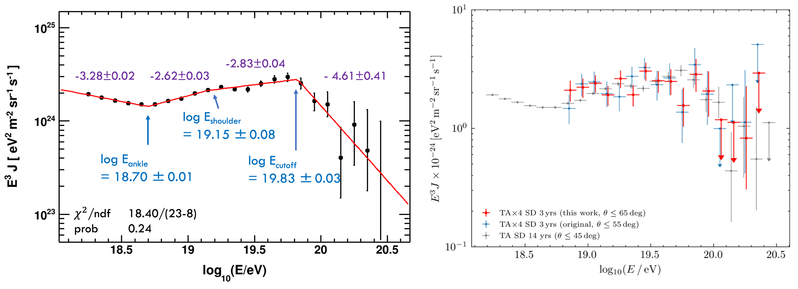
图注：\textbf{TA and TA$\times$4 SD energy spectra.} \(\textbf{Left}\): TA SD spectrum plotted with a broken power law fit (red), showing the ankle, shoulder, and high-energy cutoff. The spectral features are given on the plot. \(\textbf{Right}\): Comparison of the 3-year TA$\times$4 SD spectra from the updated $\theta \leq 65^\circ$ analysis (red) and the original $\theta \leq 55^\circ$ analysis (blue), together with the 14-year TA SD result (gray). The consistency with the TA spectrum and the earlier TA$\times$4 result confirms the robustness of the measurement, while the wider zenith-angle range improves exposure at the highest energies.
对应解读：“建议重点查看的图表”第2项能谱图；“关键图表逐图导读”图2；模型拟合中的分段幂律、踝部、shoulder 和最高能抑制。
入选理由：这张图直接给出 TA SD 与 TA×4 SD 的高能能谱、断裂幂律拟合以及 ankle、shoulder、高能 cutoff，是支撑本文能谱结论的核心图。右 panel 还比较 TA×4 不同天顶角分析与 14 年 TA 结果，能检验子阵列拼接、最高能曝光增加和测量稳健性，比其他候选图更直接对应日报中关于最高能抑制和 TA×4 统计提升的解读。
来源与置信度：\(arxiv_source\)；high；\(arxiv_source\) / \(JiHyunKim_arXiv.tex\):figure[1]
Fig04
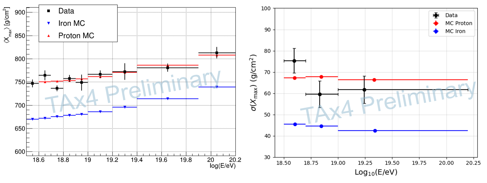
图注：\textbf{TA$\times$4 hybrid $X_{\max}$ measurements.} \(\textbf{Left}\): Mean $X_{\max}$ as a function of energy for the TA$\times$4 hybrid data, compared with proton and iron Monte Carlo predictions based on the QGSJetII-03 hadronic interaction model. \(\textbf{Right}\): Corresponding $\sigma(X_{\max})$ values. The data are consistent with Monte Carlo protons.
对应解读：“建议重点查看的图表”第3项和第4项：Xmax 均值、sigma(Xmax) 与质子/铁模拟比较；“关键图表逐图导读”图3；组成拟合段落。
入选理由：该图同时包含 TA×4 hybrid 的平均 Xmax 与 sigma(Xmax)，并与 QGSJetII-03 下的质子和铁 Monte Carlo 预测比较，正好对应日报强调的组成诊断不能只看均值、还要看涨落。它是候选图中最能支撑质量组成讨论和强子模型依赖性的图。
来源与置信度：\(arxiv_source\)；high；\(arxiv_source\) / \(JiHyunKim_arXiv.tex\):figure[4]
Fig07
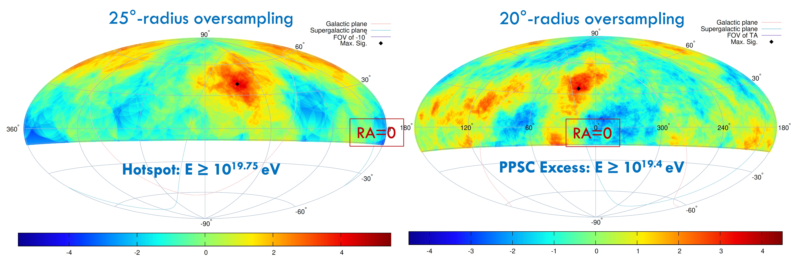
图注：\(\textbf{Intermediate-scale anisotropy skymaps.}\) \(\textbf{Left}\): TA Hotspot Li-Ma significance map obtained with $25^\circ$-radius oversampling for events with $E \geq 10^{19.75}$~eV. \(\textbf{Right}\): PPSC excess Li-Ma significance map obtained with $20^\circ$-radius oversampling for events with $E \geq 10^{19.4}$~eV. The diamond indicates the maximum significance in each map. The Galactic plane, Supergalactic plane, and the field of view are also shown.
对应解读：“建议重点查看的图表”第5项天空图或热点图；“关键图表逐图导读”图5；各向异性拟合段落中关于能量阈值、角尺度和平滑显著性的讨论。
入选理由：这张图展示 TA hotspot 与 PPSC excess 的 Li-Ma 显著性天空图，明确给出能量阈值和过采样角半径，是各向异性结果最关键的可视化证据。它能直接支持日报中关于局部显著性、曝光视场、银河面/超银河面叠加以及不能用肉眼过度解读热点的说明。
来源与置信度：\(arxiv_source\)；high；\(arxiv_source\) / \(JiHyunKim_arXiv.tex\):figure[7]
Fig03
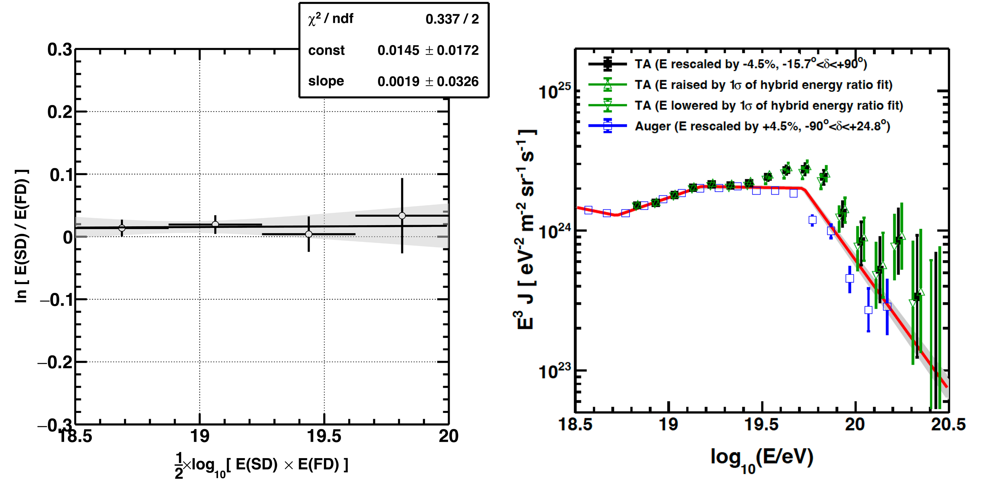
图注：\(\textbf{TA energy-scale check and TA--Auger spectra.}\) \(\textbf{Left}\): The natural logarithm of the energy ratio for TA hybrid events as a function of energy. The fitted slope indicates no significant energy dependence in the SD/FD energy ratio. \(\textbf{Right}\): TA and Auger spectra in their full apertures after the relative energy rescaling used in joint comparisons. The TA spectra shifted by $\pm1\sigma$ from the SD/FD energy-ratio fit are also shown with the green arrows. The difference at the highest energies is not removed by this energy-scale uncertainty.
对应解读：“建议重点查看的图表”第2项中关于能标系统误差和不同实验能谱比较；模型拟合段落中能标平移、bin migration 和 TA--Auger 共同比较的系统误差讨论。
入选理由：该图左 panel 检查 TA SD/FD 能量比是否随能量变化，右 panel 比较能标重标定后的 TA 与 Auger 能谱，并用绿色箭头标示能标不确定性影响。它不是单纯的结果图，而是解释最高能能谱差异是否可由能标系统误差消除的关键诊断图。
来源与置信度：\(arxiv_source\)；high；\(arxiv_source\) / \(JiHyunKim_arXiv.tex\):figure[3]
Fig02
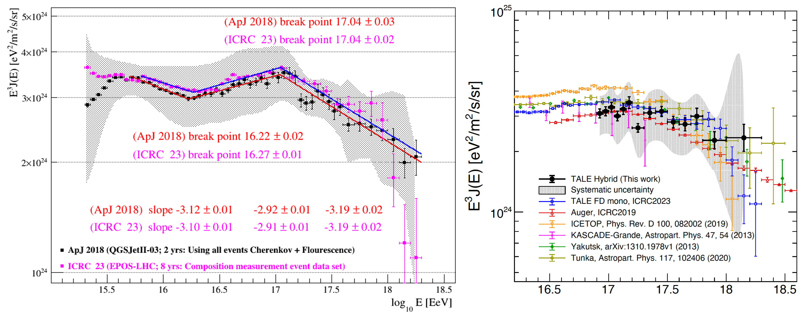
图注：\(\textbf{TALE energy specta.}\) \(\textbf{Left}\): Comparison of the earlier 2-year and updated 8-year TALE FD monocular spectra with broken power law fits. Different hadronic models are used. \(\textbf{Right}\): TALE hybrid spectrum with the TALE FD monocular result and selected results from other experiments. The measurements are consistent with previous observations in the PeV--EeV transition region.
对应解读：“建议重点查看的图表”第2项能谱图；“关键图表逐图导读”图2中关于膝区、第二膝、PeV--EeV 过渡区和 TALE 低能延伸的说明。
入选理由：这张图覆盖 TALE FD monocular 与 hybrid 能谱，展示 2 年和 8 年结果、断裂幂律拟合以及与其他实验的比较，是理解 TA 如何从 PeV--EeV 过渡区连接到主阵列高能能谱的核心补充。它特别支持日报中关于 TALE 和 TALE infill 降低低能阈值、检查谱形连续性的讨论。
来源与置信度：\(arxiv_source\)；high；\(arxiv_source\) / \(JiHyunKim_arXiv.tex\):figure[2]
Fig08
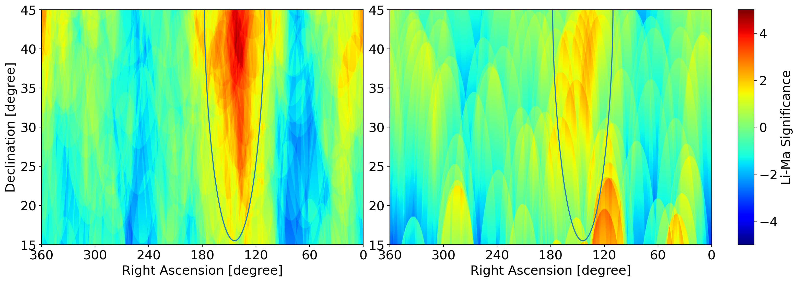
图注：\(\textbf{Comparison of the TA hotspot using declination weights in equatorial coordinates.}\) \(\textbf{Left}\): TA Hotspot observed by TA. \(\textbf{Right}\): TA Hotspot as it would appear in the Auger detector after applying declination weights to the TA events. The blue solid circles mark the $25^\circ$ window centered on the hotspot.
对应解读：“建议重点查看的图表”第5项天空图；各向异性拟合段落中关于北半球阵列方向曝光、赤纬权重和跨实验比较的说明。
入选理由：该图把 TA hotspot 在赤道坐标下按 Auger 赤纬权重重新显示，直接体现各向异性分析中方向曝光和视场差异的重要性。虽然它不是显著性扫描图，但比无关的光子/中微子限制图更贴近日报对热点、曝光修正和 TA--Auger 共同天空解释的重点。
来源与置信度：\(arxiv_source\)；high；\(arxiv_source\) / \(JiHyunKim_arXiv.tex\):figure[8]
强相关工作
这篇综述应放在 TA 与 Pierre Auger Observatory 长期互补和张力的背景下阅读。两者都观测到最高能通量抑制，但在组成解释上常呈现不同图像：Auger 的 \(X_{\max}\) 结果常被解释为最高能端逐渐变重，TA 的结果在若干能区与较轻组成相容。要检索的关键词包括 “Telescope Array spectrum composition anisotropy”, “TA hotspot ultra-high energy cosmic rays”, “TAx4 extension”, “TALE infill”, “Auger TA composition working group”。
理论上，这些结果连接到 Hillas 条件、GZK 能量损失、源最大刚度模型、光核破碎和宇宙磁场偏折。相反观点主要围绕最高能截断的起源：传播损失还是源内最大能量；以及各向异性信号是真实源结构还是统计涨落。建议进一步检索 “GZK cutoff”, “UHECR rigidity dependent cutoff”, “UHECR magnetic deflection”, “hadronic interaction models Xmax”, “EPOS-LHC QGSJet Sibyll UHECR”。
相似工作：
- https://arxiv.org/abs/2605.19553
- https://arxiv.org/search/astro-ph?query=Telescope+Array+TAx4&searchtype=all
- https://arxiv.org/search/astro-ph?query=TALE+infill+Telescope+Array&searchtype=all
- https://arxiv.org/search/astro-ph?query=Telescope+Array+hotspot+ultra-high+energy+cosmic+rays&searchtype=all
基础理论 / 方法工作：
- https://doi.org/10.1103/PhysRevLett.16.748
- https://doi.org/10.1134/S0021364000020917
- https://doi.org/10.1146/annurev.nucl.53.041002.110631
- https://doi.org/10.1146/annurev-astro-081913-035935
相反观点 / 张力线索：
- https://arxiv.org/search/astro-ph?query=Pierre+Auger+Telescope+Array+composition+working+group&searchtype=all
- https://arxiv.org/search/astro-ph?query=Pierre+Auger+Observatory+Xmax+composition+ultra-high+energy+cosmic+rays&searchtype=all
- https://arxiv.org/search/astro-ph?query=UHECR+GZK+cutoff+source+maximum+rigidity&searchtype=all
8. The first IXPE view of the eclipsing ADC source 4U 1822-37
- 来源：arXiv / astro-ph.HE
- 链接：https://arxiv.org/abs/2605.19877v1
- 作者：A. Anitra, A. Gnarini, T. Di Salvo, R. Iaria, A. Marino, F. Barra, L. Burderi, A. Sanna
- 评分：novelty 8/10，importance 8/10，relevance 7/10，final 8.65/10
- 推荐理由：4U 1822-37 的首次 IXPE 偏振观测，联合 XMM-Newton/NuSTAR/Swift 约束高倾角 ADC 几何；是清楚的新 X 射线偏振结果，适合 HE 读者。
中文题目：食源冕低质量 X 射线双星 4U 1822-37 的首次 IXPE 偏振观测
做了什么：这篇论文给出了 4U 1822-37 的首次 X 射线谱偏振研究。4U 1822-37 是高倾角食源 accretion-disc corona 源，内区被盘和伴星遮挡，观测到的 X 射线主要来自盘上方扩展冕的散射。作者联合 IXPE、XMM-Newton、NuSTAR 和 Swift，建立 \(0.1\text{--}100\,\mathrm{keV}\) 宽能段谱模型，并做了模型无关、分能段和分轨道相位的偏振分析。结果是 \(2\text{--}8\,\mathrm{keV}\) 偏振度达到 \({\rm PD}=7.9\pm0.6\%\)，偏振角 \({\rm PA}=-24^\circ\pm2^\circ\)，偏振度随能量升高而增加，偏振角基本不变；食期间偏振度降到 \({\rm PD}=5.5\pm1.7\%\)。这支持一种极端高倾角、散射主导的几何图像：我们看到的不是中心源直射辐射，而是扩展、光学薄冕把内区强辐射的一小部分散射进视线。
为什么重要：4U 1822-37 长期被用作 accretion-disc corona 源的标杆，但其真实内禀光度、冕尺度、盘遮挡程度和散射几何一直有争议。普通能谱可以告诉我们有热成分、康普顿化和反射，但很难区分“直视中心源加吸收”与“被遮挡中心源加扩展散射”的几何。IXPE 偏振给出了额外的方向信息：高偏振度、稳定偏振角和食期间偏振度下降，都直接指向有序的、扩展的散射结构。
理论 / 观测 / 仪器方法价值：这项工作的价值不只是给 4U 1822-37 增加一个偏振测量点，而是展示了 X 射线偏振如何约束高倾角低质量 X 射线双星的三维几何。它把宽带能谱拟合、轨道相位解析偏振和食几何联系起来，为估计被遮挡源的内禀亮度、冕的空间分布、散射效率和反射贡献提供了观测判据。对 IXPE 类任务而言，这也是检验弱源、相位分辨偏振和多卫星联合建模能力的一个重要案例。
为什么应该关注：如果你关心吸积盘冕、X 射线双星倾角效应、Eddington 附近吸积或偏振诊断，这篇文章值得看。它提醒我们：低观测通量不一定意味着低内禀吸积功率，高倾角系统中几何遮挡和散射会彻底改写能谱解释。它还给出一个清晰示例，说明偏振不是能谱的附属量，而是能直接检验“辐射从哪里来、经过什么结构散射、哪些区域在食期间被挡住”的几何观测量。
展开详细解读：文章讲解、背景、理论、重点章节、图表与相关工作
文章详细讲解
科学问题：4U 1822-37 是典型的高倾角低质量 X 射线双星，轨道上有食，因此内区中子星和内盘很可能不被直接看见。传统上它被归为 accretion-disc corona 源，即可见辐射主要来自盘上方扩展冕的散射。但这个图像有几个关键不确定性：冕是否足够扩展？观测到的低光度是否只是内禀光度低？反射、康普顿化和软热成分分别来自哪里？食期间哪些辐射区域被遮挡？能谱本身对这些问题存在强退化，因为吸收、遮挡、散射归一化和反射强度都能改变观测通量与谱形。
作者怎么做：论文使用 IXPE 提供 \(2\text{--}8\,\mathrm{keV}\) 偏振信息，同时联合 XMM-Newton、NuSTAR 和 Swift 做 \(0.1\text{--}100\,\mathrm{keV}\) 宽带能谱建模。能谱模型包括软热成分、康普顿化连续谱、硬能段幂律尾巴以及相对论模糊反射。偏振部分不仅报告全能段 \({\rm PD}\) 和 \({\rm PA}\)，还做了模型无关的 Stokes 参数分析、分能段偏振分析和分轨道相位分析，尤其比较食内和食外的偏振行为。
关键结果：宽带能谱给出的观测光度约为 \(L_{\rm obs}\simeq6.1\times10^{36}\,\mathrm{erg\,s^{-1}}\)，明显低于由轨道演化预期的内禀光度。这与“中心源高光度但被盘遮挡，只有小比例辐射经扩展光学薄冕散射入视线”的图像一致。IXPE 在 \(2\text{--}8\,\mathrm{keV}\) 测得 \({\rm PD}=7.9\pm0.6\%\) 和 \({\rm PA}=-24^\circ\pm2^\circ\)。偏振度随能量增加，而偏振角近似稳定，说明不同能段可能由同一大尺度轴对称散射几何控制，但高能光子中散射或反射贡献更高。
食期间行为是论文最有诊断力的结果之一。食中偏振度降至 \({\rm PD}=5.5\pm1.7\%\)，偏振角没有显著变化。直观解释是伴星遮挡了扩展冕中偏振效率最高的一部分，但剩余可见散射区仍保持同一整体对称轴，因此 \({\rm PA}\) 不大变。这比单纯“总通量下降”更有信息，因为偏振变化告诉我们被挡掉的区域不仅亮，而且在偏振矢量贡献上更有序或散射角更接近高偏振条件。
局限和下一步：目前 IXPE 的能段限制在 \(2\text{--}8\,\mathrm{keV}\)，对软热成分和硬尾的偏振约束有限；食期间计数少，\({\rm PD}\) 误差较大。谱模型虽然包含多个物理成分，但不同成分的偏振并未完全由自洽辐射转移模型同时拟合。下一步需要更深 IXPE 曝光、跨轨道周期重复观测、三维蒙特卡洛散射模拟，以及把伴星遮挡、盘厚度、冕密度分布和能量依赖偏振统一放进一个几何模型中。
背景知识
4U 1822-37 是低质量 X 射线双星中的高倾角系统，通常认为紧致星是一颗吸积中子星，伴星通过 Roche lobe 溢出供给物质。系统轨道周期较短，并出现 X 射线食和强烈轨道调制，这说明视线接近盘面。高倾角使它成为研究吸积盘垂直结构、盘缘遮挡和盘上方散射冕的天然实验室。
所谓 accretion-disc corona 源，核心特征是直接来自中心中子星、边界层或内盘的辐射被厚盘或盘缘遮住，观测者主要接收到经盘上方热电子冕 Thomson 或 Compton 散射后的辐射。这样的系统常表现出比真实吸积功率低得多的表观 X 射线光度，同时能谱仍可能显示强康普顿化和反射迹象。4U 1822-37 的特殊之处在于，轨道演化和质量转移率暗示其内禀光度可能很高，但我们看到的 \(L_{\rm obs}\) 却相对低。
历史问题是几何解释的不唯一性。能谱拟合可以用部分遮挡吸收、散射分量、反射分量或复杂连续谱来重现观测，但这些模型在统计上可能都可接受。对于高倾角系统，吸收柱密度、覆盖因子、盘反射、冕温度和归一化之间会互相补偿。仅靠通量和谱斜率，很难判断我们看见的是中心源直射成分、盘面反射成分，还是扩展冕散射成分。
现在值得重新看，是因为 IXPE 开启了成像 X 射线偏振时代。偏振携带散射平面和辐射几何的信息，对高倾角散射系统尤其敏感。对于轴对称盘冕，\({\rm PD}\) 和 \({\rm PA}\) 的能量依赖、相位依赖可区分不同散射位置和遮挡方式。联合 XMM-Newton、NuSTAR 和 Swift，又能把偏振结果放到可靠的宽带能谱框架里，而不是孤立解释。
常见误区有两个。第一，把低观测光度直接等同于低吸积率；在 ADC 源中，观测者可能只看到内禀光度的一小部分。第二，把高偏振简单理解为强磁场或同步辐射；在 X 射线双星的 \(2\text{--}8\,\mathrm{keV}\) 能段，高倾角下的电子散射和反射同样能产生显著线偏振，而且偏振角的稳定性往往比偏振度大小本身更能约束几何。
基础理论 / 方法脉络
基本物理图像从散射开始。未偏振光被自由电子 Thomson 散射后会产生线偏振，偏振方向垂直于入射光线与出射光线张成的散射平面。散射角接近 \(90^\circ\) 时偏振最高，前向或后向散射时偏振趋近于零。因此，高倾角盘系统天然容易产生较高 \({\rm PD}\)：中心辐射被盘上方冕散射到几乎沿盘面的视线，散射角分布偏向高偏振区域。
在 accretion-disc corona 图像中，中心 X 射线源的内禀光度 \(L_{\rm int}\) 远大于观测到的 \(L_{\rm obs}\)。如果冕光学深度较小，观测通量大致由散射覆盖因子、光学深度和相函数共同决定。这里的关键不是把冕看成一个简单点源，而是看成具有空间尺度的扩展结构；不同位置的冕电子有不同散射角、遮挡状态和能量响应，因此会对总 Stokes 参数作矢量叠加。
能谱方面，软热成分可来自外盘或被再处理辐射，康普顿化连续谱来自热电子对软种子光子的能量提升，硬幂律尾巴可能反映更高能电子或额外非热贡献，相对论模糊反射则来自内盘或被照亮盘面附近的荧光、Compton hump 和引力/多普勒展宽。由于高倾角遮挡，直接解释这些成分的空间来源要非常谨慎：拟合中出现反射并不必然表示我们直视内盘，也可能是散射后或部分可见的反射信号。
偏振观测的基本量是归一化 Stokes 参数 \(q\) 和 \(u\)，再由它们得到 \({\rm PD}\) 与 \({\rm PA}\)。IXPE 的探测原理基于光电子发射方向对入射偏振方向的调制，实际分析要考虑调制因子、背景、曝光和响应矩阵。模型无关分析通常先在事件层面估计 Stokes 参数，再做能段或相位分箱；模型依赖分析则可进一步把不同谱成分赋予不同偏振属性。
常见退化包括：散射光学深度与覆盖因子的退化、冕高度与径向范围的退化、吸收遮挡与低散射效率的退化、以及多个谱成分偏振矢量相互抵消造成的低 \({\rm PD}\)。系统误差还包括不同卫星交叉定标、非同时观测导致的源变、轨道相位覆盖不均、食期间低计数统计，以及 IXPE 背景或调制因子校准对弱偏振变化的影响。
公式与推导
第一步是把观测光度和内禀光度分开。若源到地球距离为 \(D\)，观测到的能量通量为 \(F_{\rm obs}\)，则各向同性等效观测光度为
这里 \(L_{\rm obs}\) 不一定等于真实释放的吸积功率；在高倾角 ADC 源中，它只是散射和未被遮挡部分的等效光度。
第二步估算吸积可供能。对中子星质量 \(M\)、半径 \(R\) 和质量吸积率 \(\dot M\)，牛顿近似下内禀吸积光度为
其中 \(\eta\) 是辐射效率。若由轨道演化推断的 \(\dot M\) 给出 \(L_{\rm acc}\gg L_{\rm obs}\)，就需要遮挡、各向异性或散射效率来解释差异。
第三步用光学薄散射给出尺度关系。若中心源被遮挡，只能通过电子冕散射看到，散射进入视线的比例可写成
其中 \(C_{\Omega}\) 是冕相对中心源的覆盖因子，\(\tau_{\rm e}\) 是 Thomson 光学深度，\(P(\theta)\) 是角分布相函数，\(\theta\) 是散射角。这个式子说明低 \(L_{\rm obs}\) 可来自小 \(f_{\rm sc}\)，并不要求低 \(L_{\rm int}\)。
第四步写出 Thomson 散射的偏振上限。对单次散射、入射光未偏振的理想情形，线偏振度为
当 \( heta=90^\circ\) 时 \(p=1\)，当前向或后向散射 \(\theta=0^\circ,180^\circ\) 时 \(p=0\)。真实观测的 \({\rm PD}\) 低于这个值，因为存在多重散射、角度平均、未偏振成分和不同区域 Stokes 矢量抵消。
第五步把偏振写成 Stokes 矢量叠加。若第 \(i\) 个辐射或散射区域通量为 \(I_i\)、偏振度为 \(p_i\)、偏振角为 \(\psi_i\)，则
因偏振角有 \(180^\circ\) 周期，所以出现 \(2\psi_i\)。这个表达式解释了为什么多个高偏振区域相互错角时，总 \({\rm PD}\) 可能反而较低。
第六步由 Stokes 参数得到 IXPE 报告的观测量：
论文报告的 \({\rm PD}=7.9\pm0.6\%\) 和稳定 \({\rm PA}\) 意味着总 Stokes 矢量方向随能量和相位没有大幅旋转，支持同一主导几何轴。
第七步考虑食对 Stokes 矢量的影响。若食期间遮挡掉区域 \(k\)，则食中 Stokes 参数为
若 \({\rm PD}\) 下降但 \({\rm PA}\) 近似不变，说明被遮挡区域的偏振角与总偏振角大体一致，但其偏振效率或通量贡献较高。
第八步连接到能谱拟合。观测计数谱不是直接的光子谱，而是仪器响应卷积：
其中 \(C_j\) 是第 \(j\) 个能道计数，\(t_{\rm exp}\) 是曝光，\(R_j(E)\) 是能量重分布，\(A_{\rm eff}(E)\) 是有效面积，\(N(E)\) 是源光子谱，\(B_j\) 是背景。联合 XMM-Newton、NuSTAR、Swift 与 IXPE 时必须通过这种响应折叠比较模型与数据。
第九步给出统计诊断。对计数数据常用 Poisson 似然，等价地可最小化 Cash 统计量
其中 \(d_j\) 是观测计数，\(m_j\) 是模型计数。对偏振分箱，还需同时拟合或检验 \(I\)、\(Q\)、\(U\) 的残差，而不是只看 \({\rm PD}\) 的误差条。
模型拟合 / 应用方法
这篇论文的拟合分成两个层面：宽带能谱拟合和偏振诊断。宽带能谱层面，模型需要同时覆盖软 X 射线、IXPE 能段和 NuSTAR 硬 X 射线，因此至少要包含软热成分、康普顿化连续谱、硬幂律尾巴和相对论模糊反射。拟合量包括各成分温度、光子指数或电子温度、归一化、吸收柱密度、反射参数、模糊参数以及不同仪器间的交叉归一化常数。
偏振层面，模型无关方法直接从事件方位角调制估计 Stokes 参数，得到全能段、分能段和分轨道相位的 \({\rm PD}\) 与 \({\rm PA}\)。读者应关注 \(q\)-\(u\) 平面上的误差椭圆，而不只是 \({\rm PD}\) 的一维数值，因为低信噪偏振度有正定偏差，且偏振角在 \({\rm PD}\) 较低时会变得不稳定。论文中食内 \({\rm PD}\) 误差较大，解释时应看其与食外结果的 Stokes 矢量差异是否显著。
主要退化来自谱成分和偏振成分的错配。一个能谱上占主导的成分未必在偏振上占主导，因为 \({\rm PD}\) 取决于散射角和几何有序性。软热成分可能稀释偏振，反射成分可能提高高能偏振，康普顿化连续谱可能既贡献大部分通量也携带中等偏振。若只给每个谱成分赋一个常数偏振度和偏振角，可能无法捕捉真实冕中随位置和能量变化的散射过程。
系统误差方面，多卫星联合观测需要处理非严格同时性、轨道相位覆盖差异和交叉定标。4U 1822-37 本身有轨道调制和食，若不同仪器覆盖的相位不同，宽带谱形可能混入相位依赖变化。对于 IXPE，背景估计、调制因子、源区选择和低计数分箱都会影响分相位偏振。实际检验中，应查看残差是否集中在软能段、铁线区域或硬尾区域，因为这些区域分别对应再处理、反射和额外高能成分的不确定性。
模型可能失败的地方也很清楚。如果高 \({\rm PD}\) 只能通过过于理想化的单次散射几何解释，而能谱却要求高光学深度多重散射，那么几何模型需要修改。如果食期间 \({\rm PA}\) 在更深观测中发现显著旋转，则说明被遮挡区域与剩余区域的对称轴不同，简单轴对称扩展冕不够。若未来硬 X 射线偏振显示不同偏振角，则硬尾可能来自喷流、非热电子或不同反射区域，而不是同一冕的简单延伸。
重点章节 / 结果段落怎么读
数据和观测部分应先看。重点是 IXPE、XMM-Newton、NuSTAR 和 Swift 的观测时间、轨道相位覆盖、食内食外划分、曝光和源区/背景区选择。对这种食源高倾角系统，相位覆盖不是技术细节，而是解释偏振变化的核心条件。
宽带能谱建模部分是第二个重点。读者应检查作者如何逐步加入软热成分、康普顿化连续谱、硬幂律尾巴和相对论模糊反射，以及每一步残差改善发生在哪个能段。特别要看 \(0.1\text{--}100\,\mathrm{keV}\) 模型是否同时解释软过量、铁线/反射结构和硬尾，而不是只在 IXPE 能段拟合得好。
偏振分析方法部分要仔细读 Stokes 参数处理、能段划分和相位划分。模型无关偏振结果通常比强模型假设更稳健；分能段 \({\rm PD}\) 上升和 \({\rm PA}\) 稳定是论文几何解释的支柱。
主结果部分应把三个事实放在一起读：低 \(L_{\rm obs}\)、高 \({\rm PD}\)、食中 \({\rm PD}\) 下降但 \({\rm PA}\) 不变。单独任何一个事实都可由多种模型解释，但三者结合强烈支持高倾角、遮挡中心源、扩展冕散射主导。
讨论和稳健性部分应关注作者是否排除了简单替代解释，例如直射中心源加部分覆盖吸收、局部反射主导或单一区域散射。读者还应看他们如何处理轨道演化预期内禀光度与观测光度之间的差异，以及是否明确指出需要未来三维辐射转移模型。
建议重点查看的图表
-
宽带能谱和残差图：看 \(0.1\text{--}100\,\mathrm{keV}\) 各仪器数据是否被同一模型连续解释，残差是否在软能段、铁线附近或硬尾处系统偏离。
-
能谱成分分解图：看软热成分、康普顿化连续谱、硬幂律尾巴和相对论反射在 IXPE 能段各占多少通量；这决定偏振稀释和能量依赖解释。
-
\(q\)-\(u\) 或 Stokes 参数置信图：看偏振探测显著性、误差椭圆方向，以及食内食外点是否真的分离。
-
分能段 \({\rm PD}\) 与 \({\rm PA}\) 图：重点检查 \({\rm PD}\) 是否单调上升、\({\rm PA}\) 是否在误差内稳定；这直接约束不同能段是否共享同一几何轴。
-
分轨道相位偏振图：看食内、食外、可能的 ingress 和 egress 区间中 \({\rm PD}\)、\({\rm PA}\) 和通量如何同步变化。
-
光变曲线或相位折叠曲线：确认食的相位定义、食宽度和 IXPE 曝光覆盖，避免把采样不均误解为物理偏振变化。
-
参数置信区间或模型比较表：检查反射、硬尾和康普顿化参数是否稳健，以及是否存在多个统计上相近但物理含义不同的解。
关键图表逐图导读
图 1：建议首先看多卫星光变曲线或轨道相位覆盖图。横轴通常是时间或轨道相位，纵轴是计数率或通量，不同颜色代表 IXPE、XMM-Newton、NuSTAR 和 Swift。读图重点是 IXPE 是否覆盖完整轨道、食期间有多少有效曝光，以及食内食外划分是否清楚。陷阱是把不同仪器不同能段的计数率直接比较；应关注相位覆盖和相对变化。
图 2：宽带能谱图通常横轴为能量，纵轴为 unfolded flux、\(E F_E\) 或计数残差，上面板为数据和模型，下面板为残差。关键是模型是否需要软热、康普顿化、硬尾和反射多个成分，以及残差是否在加入反射后显著减小。陷阱是 unfolded 图依赖模型，真正判断拟合优劣要看响应折叠后的残差和统计量。
图 3：能谱成分分解图应显示不同物理成分在能量上的贡献。横轴为能量，纵轴为能量通量或模型通量，曲线分别对应热成分、康普顿化、幂律尾和反射。读者要看 \(2\text{--}8\,\mathrm{keV}\) 中哪个成分主导，因为 IXPE 测得的偏振是这些成分 Stokes 矢量的加权和。陷阱是把通量占比直接等同于偏振占比。
图 4：Stokes 平面图或 \({\rm PD}\)-\({\rm PA}\) 置信图最能说明偏振探测。若横轴为 \(q\)、纵轴为 \(u\)，数据点到原点的距离对应 \({\rm PD}\)，方向对应 \({\rm PA}\)。应看置信轮廓是否远离原点，以及食内点相对食外点是否主要沿径向缩短而非明显旋转。陷阱是 \({\rm PD}\) 正定，低信噪时仅看偏振度会高估显著性。
图 5：分能段偏振图通常横轴为能量，纵轴分别为 \({\rm PD}\) 和 \({\rm PA}\)。本文核心趋势是 \({\rm PD}\) 随能量升高、\({\rm PA}\) 近似稳定。若高能点误差较大，要判断趋势是否由单个分箱驱动。物理上，这支持高能段中更强散射或反射贡献，而不是偏振角不同的新成分主导。
图 6：分轨道相位偏振图横轴为轨道相位，纵轴为通量、\({\rm PD}\) 或 \({\rm PA}\)。食期间 \({\rm PD}\) 降低而 \({\rm PA}\) 不显著变化，是扩展冕中高偏振区域被伴星遮挡的关键证据。陷阱是食期间计数率低，误差条会变大；应结合 Stokes 参数差异和置信区间，而不是只看点估计。
论文原图 / 可嵌入图片
Fig02
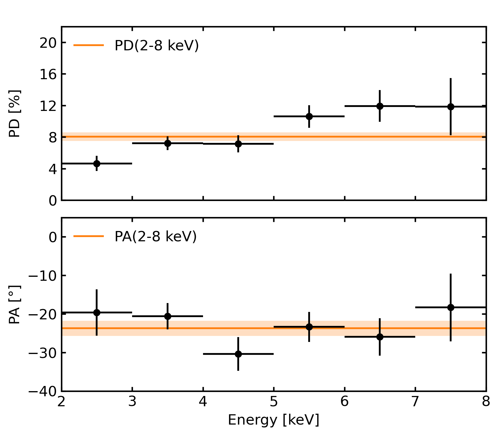
图注：Polarisation degree (top) and angle (bottom) versus energy in 1~keV bins obtained with the \(\texttt{ixpepolarization}\) task. Errors correspond to the 68\% confidence level. Orange line corresponds to the average PD and PA in the 2--8 keV range, with the associated $1\sigma$ error highlighted by the shaded regions.
对应解读：建议重点查看的图表第4项；关键图表逐图导读中的“图5：分能段偏振图”。
入选理由：这张图直接给出1 keV分箱的偏振度和偏振角随能量变化，是论文核心结论“PD随能量升高、PA近似稳定”的最直接证据；误差为68%置信区间，并标出2--8 keV平均值，可用于判断趋势是否由单个高能分箱驱动。
来源与置信度：\(arxiv_source\)；high；\(arxiv_source\) / main.tex:figure[2]
Fig03
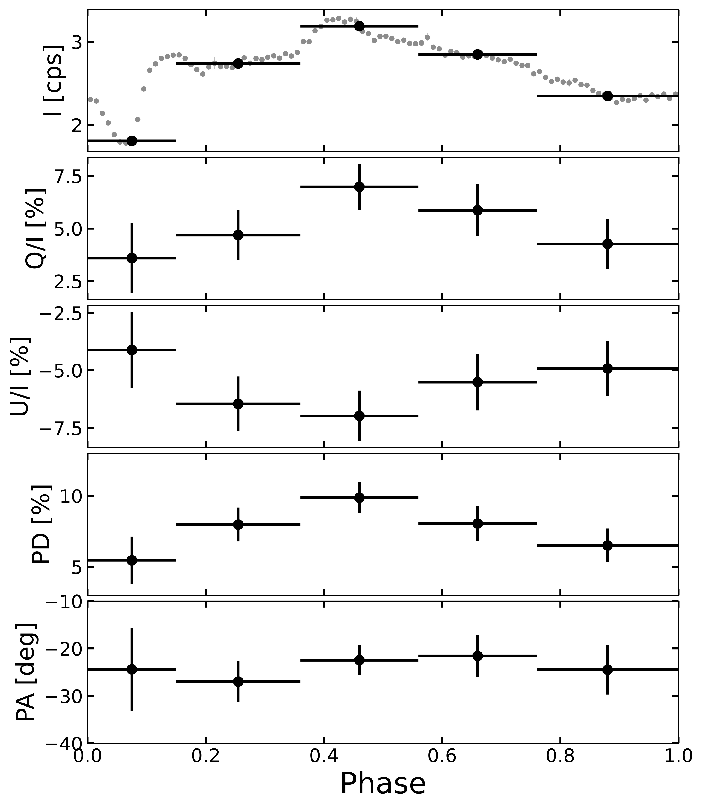
图注：\(\textit{IXPE}\) count rate, normalised Stokes parameters, polarisation degree and angle as a function of orbital phase in the 2--8 keV energy range. Errors correspond to the 68\% confidence level.
对应解读：建议重点查看的图表第5、6项；关键图表逐图导读中的“图6：分轨道相位偏振图”和“图1：光变/相位覆盖”。
入选理由：这张图同时展示IXPE计数率、归一化Stokes参数、PD和PA随轨道相位变化，最能支撑日报中关于食期间PD降低而PA无显著变化的解释；它还能检查食相位定义、通量变化和偏振变化是否同步。
来源与置信度：\(arxiv_source\)；high；\(arxiv_source\) / main.tex:figure[3]
Fig01
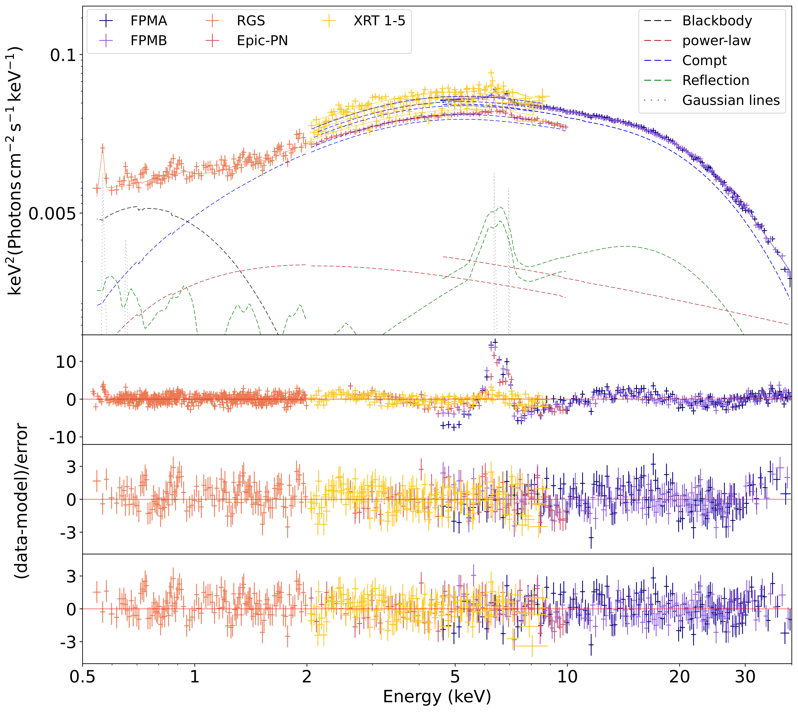
图注：Unfolded broadband spectrum obtained from \(\texttt{Model 2}.\) The lower panels show the residuals, in units of $\sigma$, for the main fitting steps discussed in the text: the baseline continuum model before adding the Gaussian emission lines, the model including 5 gaussian lines (\texttt{Model 1}), and the final reflection model \(\texttt{Model 2}.\)
对应解读：建议重点查看的图表第1项；关键图表逐图导读中的“图2：宽带能谱图”；模型拟合段落的宽带能谱拟合部分。
入选理由：这张图是0.1--100 keV宽带unfolded能谱及多步模型残差，直接检验软热成分、康普顿化连续谱、发射线/反射和硬尾是否能被同一模型解释；下方面板给出从基线连续谱到最终反射模型的残差改善，是判断模型必要性的关键图。
来源与置信度：\(arxiv_source\)；high；\(arxiv_source\) / main.tex:figure[1]
Fig05
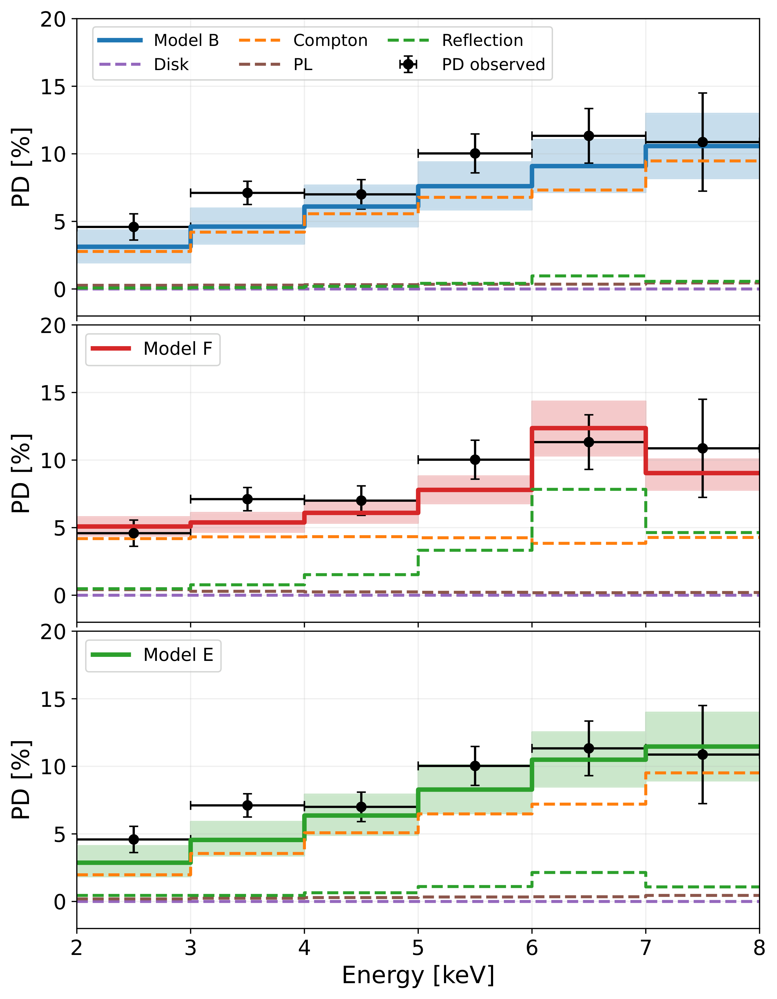
图注：Polarisation degree as a function of energy for three different models: \(\texttt{Model B}\) (top panel), \(\texttt{Model F}\) (middle panel), and \(\texttt{Model E}\) (bottom panel). In each panel, the solid line represents the total expected polarisation obtained from the Stokes-weighted combination of the individual spectral components. The shaded region indicates the 68\% confidence interval derived from Monte Carlo simulations, accounting for the uncertainties in both the polarisation parameters and the flux contributions of the different components. The dashed curves show the flux-weighted contributions of the individual spectral components, while the black points correspond to the values measured with \(\texttt{ixpepolarization}.\)
对应解读：建议重点查看的图表第2、7项；关键图表逐图导读中的“图3：能谱成分分解图”；模型拟合段落中关于谱成分与偏振成分错配、Stokes加权组合的讨论。
入选理由：这张图把不同偏振模型下的总PD能量依赖、Monte Carlo 68%置信区间以及各谱成分的通量加权贡献放在一起，最适合解释IXPE能段中不同谱成分如何稀释或增强偏振；它比单纯能谱图更直接连接模型比较、成分分解和偏振能量依赖。
来源与置信度：\(arxiv_source\)；high；\(arxiv_source\) / main.tex:figure[5]
Fig04
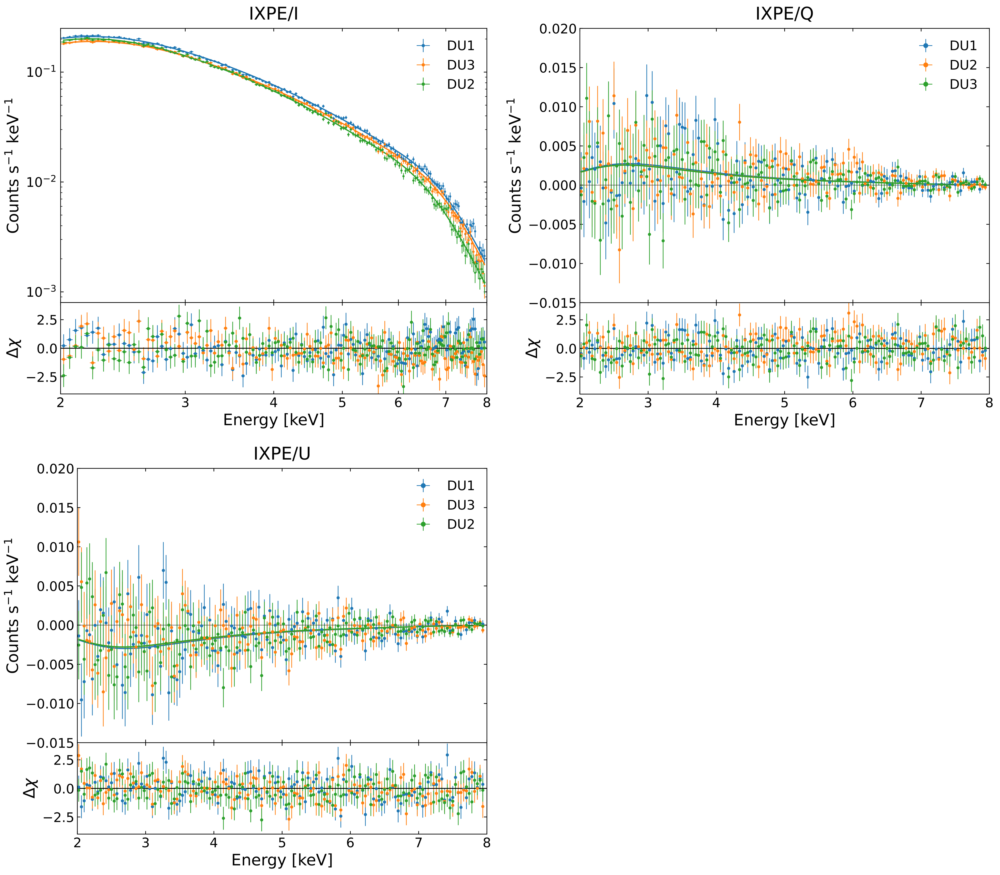
图注：\(\textit{IXPE}\) $I$, $Q$ and $U$ Stokes spectra for each DU and the corresponding residuals in units of $\sigma$, obtained applying \(\texttt{polconst}\) to best-fitting spectral model obtained with \(\textit{NuSTAR}\) and \(\textit{XMM-Newton}.\)
对应解读：建议重点查看的图表第3项；模型拟合段落中的Stokes参数分析和偏振诊断。
入选理由：这张图展示IXPE各探测单元的I、Q、U Stokes谱及残差，是检查偏振拟合是否真正由Stokes数据支持的关键诊断；虽然不是q-u置信椭圆图，但它比只看PD/PA点估计更接近底层偏振观测量，可用于识别能量相关残差或系统偏差。
来源与置信度：\(arxiv_source\)；high；\(arxiv_source\) / main.tex:figure[4]
Fig06
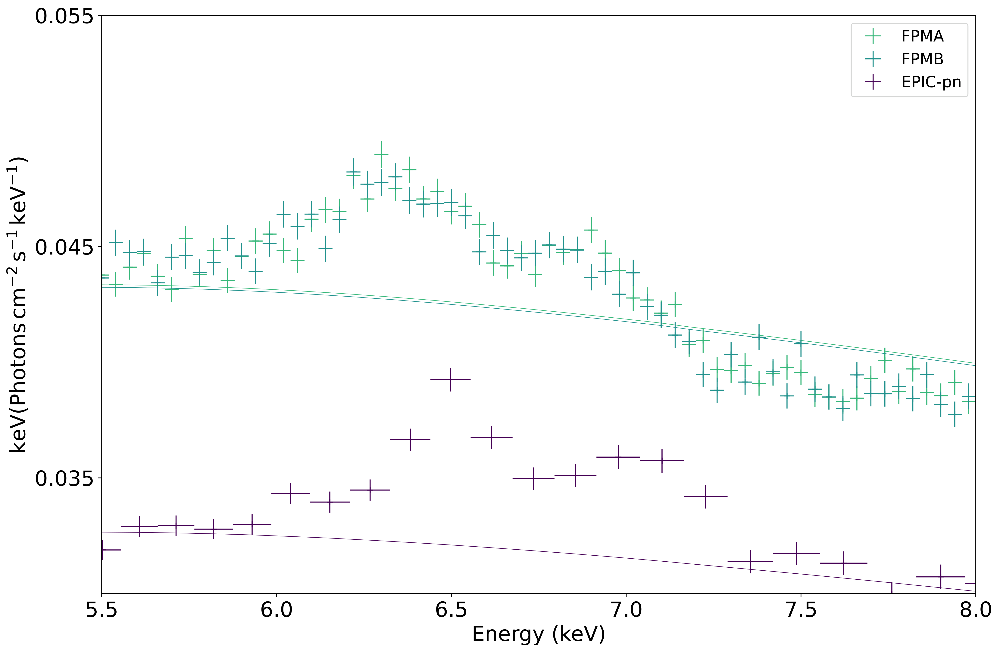
图注：Unfolded spectra from \(\textit{EPIC-pn}\) and \(\textit{NuSTAR}\) FPMA/FPMB in the iron-line region, fitted with a simple power law.
对应解读：建议重点查看的图表第1、7项；模型拟合段落中关于铁线区域残差、反射成分和系统误差的讨论。
入选理由：这张图聚焦EPIC-pn和NuSTAR在铁线区域相对简单幂律的unfolded谱形，可辅助判断反射/铁线结构为何需要被纳入宽带模型；其范围较窄、与IXPE偏振核心结果关系不如前几张直接，因此排序较低。
来源与置信度：\(arxiv_source\)；high；\(arxiv_source\) / main.tex:figure[6]
强相关工作
这篇工作与早期 ADC 源研究和高倾角 LMXB 研究直接相连。经典问题是 4U 1822-37 的观测光度为何低于由轨道演化和质量转移率推断的内禀光度，以及 X 射线食和轨道调制如何约束冕尺度。建议检索关键词包括 “4U 1822-37 accretion disc corona”, “ADC source luminosity orbital evolution”, “high inclination LMXB scattering corona”。
它也与 IXPE 对 X 射线双星的偏振观测形成对照。低质量 X 射线双星、黑洞 X 射线双星和中子星系统中，偏振度和偏振角的能量依赖常被用来区分盘热辐射、康普顿化、反射和喷流贡献。4U 1822-37 的特别之处是食几何提供了空间遮挡实验，使偏振相位变化可以直接对应到冕结构。建议检索 “IXPE X-ray binary polarization”, “X-ray polarimetry scattering corona”, “phase resolved X-ray polarimetry eclipsing binary”。
潜在张力来自替代几何解释：复杂部分覆盖吸收、局部盘反射、非轴对称盘风或硬尾非热成分也可能影响谱形和偏振。未来若更高信噪数据发现 \({\rm PA}\) 随能量或食相位旋转，就会挑战单一扩展轴对称冕图像。建议检索 “partial covering high inclination LMXB”, “disc wind scattering X-ray polarization”, “reflection polarization neutron star LMXB”。
相似工作：
- https://arxiv.org/abs/2605.19877
基础理论 / 方法工作：
- https://ui.adsabs.harvard.edu/
- https://www.nasa.gov/ixpe/
相反观点 / 张力线索：
（未提供）
9. Radiative PIC simulations of relativistic pair plasma: multiple interacting current sheets and turbulent evolution
- 来源：arXiv / astro-ph.HE
- 链接：https://arxiv.org/abs/2605.19109v1
- 作者：Fulvia Pucci, Elena Amato, Dario Borgogno, Niccolo' Bucciantini, Maria Elena Innocenti, Kevin M Shoeffler, Marco Tavani, Valerio Vittorini
- 评分：novelty 8/10，importance 7/10，relevance 8/10，final 8.65/10
- 推荐理由：辐射 PIC 模拟多电流片相互作用和湍流演化，直接面向 PWN、相对论外流中的粒子加速与同步辐射暴发，对高能辐射理论有较高价值。
中文题目：辐射相对论正负电子等离子体的 PIC 模拟：多重相互作用电流片与湍流演化
做了什么：这篇论文用二维相对论粒子网格模拟研究带辐射冷却的正负电子等离子体磁重联，初始条件不是单个电流片，而是多个磁场极性反转的电流片。作者想模拟脉冲星风星云和相对论外流中更接近现实的多反转磁场结构。结果显示，早期每个电流片可独立重联并把粒子加速到能产生超过经典同步辐射 burn-off 极限的光子；随后等离子体团块跨电流片相互作用、并合并形成新的电流片，系统进入湍流态，磁能谱出现接近 Kolmogorov 的标度并在约 \(5d_e\) 附近进入耗散区。湍流阶段会对已被初级电流片加速的高能粒子再加速，同时产生间歇性辐射爆发，但最高能粒子谱仍然偏陡。
为什么重要：高能天体中的磁场往往不是一个孤立、平直、稳定的重联层，而是具有多次极性反转、团块并合和湍流级联的复杂结构。单电流片 PIC 模拟已经证明相对论重联能高效加速粒子，但它不一定能解释脉冲星风星云中持续扰动、耀发式辐射和宽尺度湍流如何共存。本文的重要性在于把“辐射冷却、相对论重联、多电流片相互作用、湍流形成”放在同一个 kinetic 模拟框架中考察，直接连接了微观粒子加速和宏观湍流演化。
理论 / 观测 / 仪器方法价值：对理论而言，它说明多电流片系统不会只是多个单片重联的线性叠加，而会通过 plasmoid 相互作用自发进入湍流态，并产生二次加速和间歇辐射。对观测解释而言，它给脉冲星风星云耀发、相对论喷流内快速高能辐射、以及超过同步辐射 burn-off 极限的光子提供了一个更动态的物理图像。对方法而言，论文展示了辐射 PIC 模拟如何同时跟踪粒子分布、同步辐射损失、磁能谱和空间结构，从而把传统重联诊断扩展到湍流诊断。
为什么应该关注：如果你关心 Crab 耀发、脉冲星风终止激波附近的条纹风、喷流中的磁能耗散，或者相对论等离子体如何把磁能转成非热粒子和高能光子，这篇文章值得读。它提醒我们：把观测中的短时标高能爆发简单归因于一个孤立重联层可能过于理想化；真正决定最高能粒子和辐射间歇性的，可能是多个重联层并合后形成的湍流环境。
展开详细解读：文章讲解、背景、理论、重点章节、图表与相关工作
文章详细讲解
科学问题：相对论磁重联是高能天体中粒子加速和快速辐射的核心候选机制，但许多 PIC 研究从单个 Harris 电流片出发，便于控制物理量，却牺牲了环境复杂性。脉冲星风中的条纹结构、磁化喷流中的 kink 或 tearing 演化、以及星云内的多尺度磁场反转，都更像是多个电流片共存并相互碰撞的系统。本文要回答的是：在强同步辐射冷却存在时，多电流片正负电子等离子体是否仍能产生超 burn-off 辐射？多个重联层的相互作用会不会把系统推向湍流？湍流阶段对最高能粒子的加速和冷却究竟是增强还是削弱？
作者怎么做：论文采用二维相对论 PIC 模拟，等离子体成分为电子—正电子对等离子体，初始磁场包含多个极性反转，因此存在多个电流片。模拟中加入辐射反作用或等效同步辐射冷却项，使高能粒子的能量演化不仅由洛伦兹力决定，也受到辐射损失约束。作者跟踪了粒子能谱、空间分布、电磁场能量、同步辐射输出、磁能谱以及电流片和 plasmoid 的时空演化。这样的设计比单片重联多了一个关键自由度：不同片内产生的 plasmoid 可以跨片相互作用，并诱发新的电流层。
关键结果：早期阶段，每个电流片近似独立地发生 tearing 和重联，粒子被重联电场加速，尽管能谱高能端较陡，仍能出现超过经典同步辐射 burn-off 极限的辐射。随后 plasmoid 长大、迁移并跨越相邻电流片相互作用，磁拓扑不再是多个独立片的简单叠加，而是形成新的电流片和更复杂的涡旋结构。这个非线性阶段中，磁能谱在约两个数量级的尺度范围内出现类似 Kolmogorov 的标度，并在约 \(5d_e\) 的尺度附近进入耗散区，其中 \(d_e\) 是电子惯性长度。湍流阶段会对早期被加速的高能粒子再次供能，同时同步辐射冷却仍然有效，因此辐射呈现间歇性爆发。
局限和下一步：二维 PIC 能清楚解析岛链、并合和电流层生成，但二维几何会强化 plasmoid 合并的相干性，也无法完整描述三维 kink、drift-kink、斜向 tearing 和各向异性湍流级联。正负电子等离子体适合脉冲星风环境，但不直接等同于电子—离子喷流或吸积盘冕。模拟尺度与真实天体尺度仍相差巨大，磁能谱的惯性区只有约两个 decade，能否外推到观测尺度需要谨慎。下一步自然是三维辐射 PIC、更宽参数扫描、不同磁化强度和冷却强度下的统计，以及把模拟辐射做成可与光变曲线和谱能分布比较的合成观测。
背景知识
研究对象是相对论正负电子等离子体中的磁重联。所谓正负电子等离子体，是指惯性和电荷载流主要由电子和正电子提供，而不是常见的电子—离子等离子体。由于两种粒子质量相同，Hall 物理与电子—离子等离子体不同，能量分配也更对称。这类等离子体与脉冲星磁层、脉冲星风、脉冲星风星云以及某些相对论喷流模型密切相关。
历史问题来自两个方向。第一，磁重联被认为可以把有序磁能快速转化为粒子动能和辐射，尤其在高磁化参数 \(\sigma\) 的相对论系统中，理论上可产生硬的非热粒子谱。第二，Crab 星云等系统出现过短时标、高能伽马耀发，光子能量挑战经典同步辐射加速极限。单电流片 PIC 模拟已经证明重联电场、plasmoid 合并和局部 Doppler 增亮都可能帮助突破简单极限，但真实系统是否由一个孤立电流片支配仍是问题。
观测和理论背景中，多重磁场反转非常自然。脉冲星条纹风在赤道附近具有交替磁极性；喷流中的剪切、螺旋磁场不稳定和内部碰撞也会生成多个电流层；湍流磁场本身会不断产生薄电流片。因而，从多个电流片出发比从单个理想 Harris 片出发更接近许多高能天体环境。本文的价值正是研究这些电流片如何从“多个独立重联点”演化为“耦合的重联—湍流系统”。
为什么现在值得重新看？一方面，辐射 PIC 模拟的数值能力已经可以同时处理相对论粒子加速和同步辐射冷却；另一方面，多信使和高时间分辨率观测使快速高能变源的物理解释更受关注。过去许多模型把湍流和重联分开处理：要么研究湍流中的随机加速，要么研究单电流片中的直接加速。本文把二者放在同一演化序列中，显示重联可以产生湍流，而湍流又反过来继续加速和冷却粒子。
该领域常见误区之一是把“超过 burn-off 极限”理解为同步辐射理论失效。更准确地说，经典极限通常假设加速电场不超过磁场、粒子在同一区域同时受加速和辐射损失、且各向同性平均场适用；在重联层中，局部 \(E\) 可接近或超过有效辐射磁场，粒子可在低磁场区加速、在高磁场区辐射，因此极限可被规避。另一个误区是把 Kolmogorov-like 谱直接等同于充分发展的三维不可压 MHD 湍流。PIC 盒子中的二维磁能谱相似斜率有意义，但其物理内涵仍受维度、尺度范围和 kinetic 耗散控制。
基础理论 / 方法脉络
基础物理图像是磁能释放。若磁场在空间中反向排列，中间必须有电流层维持 \(\nabla\times\mathbf{B}\)。电流层一旦变薄到 kinetic 尺度，理想 MHD 的冻结磁通条件破坏，磁力线可以改变连接关系。相对论高磁化等离子体中，单位粒子可用磁能很高，重联流出速度接近阿尔芬速度，后者可接近光速，因此粒子加速和辐射都很强。
本文的等离子体是 pair plasma，关键长度是电子惯性长度 \(d_e=c/\omega_{pe}\)，其中 \(\omega_{pe}\) 是电子等离子体频率。这个尺度标记电荷载流粒子无法维持流体冻结的区域，也常是电流片厚度、kinetic 耗散和能谱截断附近的重要参照。论文提到磁能谱在约 \(5d_e\) 附近进入耗散区，说明级联从 MHD-like 或 fluid-like 尺度向 kinetic 尺度转移。
粒子加速主要来自重联电场 \(\mathbf{E}_{\rm rec}\) 对带电粒子做功。同步辐射冷却则来自粒子在垂直磁场分量中弯曲运动的辐射反作用。加速与冷却竞争决定最高洛伦兹因子 \(\gamma\)，也决定特征同步辐射光子能量。所谓 burn-off 极限可粗略理解为当电场加速率与同步辐射损失率平衡时得到的最大同步辐射光子能量；但在重联层内，局部低磁场加速和高磁场辐射的空间分离会改变这个简单估算。
多电流片引入了新的非线性。每个电流片初期会产生 tearing 模式和 plasmoid，单片内的岛可以合并；当相邻片的 plasmoid 足够大时，它们会互相扰动、压缩并生成新的薄电流层。这种过程把有序的反向磁场结构转化为多尺度磁场涨落，表现为磁能谱的幂律区和小尺度耗散区。于是粒子经历的不再是一次直接加速，而是先在初级重联层中获得高能，再在湍流电场和新生电流片中二次加速。
观测方法在模拟论文中对应为“合成诊断”：看粒子能谱的高能端斜率、最大能量随时间变化、同步辐射功率的时间序列、空间辐射热点，以及磁能谱斜率。需要注意的退化包括：高能光子可由更高 \(\gamma\)、更强局部 \(B\)、或更强 Doppler 因子造成；辐射爆发既可能来自粒子数增加，也可能来自磁场压缩；能谱变陡既可能是冷却造成，也可能是加速效率下降或逃逸效应造成。二维模拟还会使粒子困在磁岛中的时间和并合几何不同于三维。
公式与推导
第一步是定义磁化程度。对冷的相对论正负电子等离子体，可用磁场能量密度与粒子静能量密度之比表示：
其中 \(B_0\) 是上游磁场，\(n\) 是数密度，\(m_e\) 是电子或正电子质量，\(c\) 是光速。较大的 \(\sigma\) 意味着每个粒子可分得更多磁能，重联外流速度也更接近光速。
第二步是 kinetic 尺度。电子等离子体频率与惯性长度为：
其中 \(e\) 是基本电荷。论文用 \(d_e\) 标定电流片厚度、谱的耗散尺度和数值分辨率；当磁能谱在 \(k d_e\) 对应的小尺度处转折时，说明级联进入 kinetic 耗散范围。
第三步是粒子能量方程。忽略碰撞时，单个粒子的洛伦兹因子满足：
其中 \(q\) 是粒子电荷，\(\mathbf{E}\) 是电场，\(\mathbf{v}\) 是粒子速度，\(P_{\rm syn}\) 是同步辐射功率。第一项是重联电场或湍流电场做功，第二项是辐射冷却。
第四步是同步辐射损失。对超相对论粒子，若有效垂直磁场为 \(B_\perp\)，有：
其中 \(\sigma_T\) 是 Thomson 截面，\(U_B=B_\perp^2/(8\pi)\) 是磁能量密度。该式说明冷却随 \(\gamma^2\) 增强，因此最高能粒子最容易受到辐射限制。
第五步是加速与冷却平衡给出的最大能量估计。若 \(E_{\rm rec}=\eta B_0\)，并取 \(v\simeq c\)，平衡条件为：
由此得到辐射限制的洛伦兹因子：
这里 \(\eta\) 是无量纲重联率量级参数。若粒子在低 \(B_\perp\) 的电流层中被加速，\(\gamma_{\rm rad}\) 可显著升高。
第六步是特征同步辐射光子能量：
其中 \(\hbar\) 是约化 Planck 常数。把上一步的 \(\gamma_{\rm rad}\) 代入，可得到经典 burn-off 标度：
其中 \(\alpha_{\rm f}=e^2/(\hbar c)\) 是精细结构常数。若 \(E_{\rm rec}\lesssim B_\perp\)，能量在百 MeV 量级；若加速区和辐射区分离，或局部 \(E_{\rm rec}/B_\perp\) 较大，就可能出现超过该简单极限的辐射。
第七步是磁能谱诊断。二维模拟中可对磁场涨落 \(\delta\mathbf{B}\) 做 Fourier 分解，并定义环平均谱：
若在某个尺度区间满足 \(E_B(k)\propto k^{-5/3}\)，就称其为 Kolmogorov-like。本文的要点不是严格证明三维 Kolmogorov 湍流，而是显示多电流片并合产生了跨尺度级联，随后在 \(\ell\sim 5d_e\) 附近进入耗散。
第八步是辐射光变的模拟诊断。总同步辐射功率可写成粒子求和：
其中求和遍历模拟粒子或宏粒子并带有相应权重。间歇性 burst 表示 \(L_{\rm syn}(t)\) 出现短时增强；要判断其来源，需要同时检查高能粒子数、局部 \(B_\perp\)、以及粒子是否集中在新生电流片或 plasmoid 合并区。
模型拟合 / 应用方法
这类 PIC 论文通常不是用观测数据做传统拟合，而是通过一组控制参数扫描来“拟合”物理图像。核心输入参数包括磁化参数 \(\sigma\)、初始电流片间距、片厚、温度或热压、盒子大小、边界条件、辐射冷却强度和数值分辨率。输出诊断包括粒子能谱斜率、最大 \(\gamma\)、同步辐射功率、磁能谱斜率、重联率和能量分配。读者应把这些诊断看成模型参数到可观测量的映射，而不是单次模拟的唯一结论。
若要与观测联系，常见做法是把模拟得到的粒子分布 \(N(\gamma,t)\) 和局部磁场分布转化为同步辐射谱与光变曲线。拟合量可以是高能光谱斜率、峰值光子能量、耀发持续时间、峰值 luminosity 与 quiescent level 的比值，以及光变的 intermittency。一个简化模型可能用 \(N(\gamma)\propto \gamma^{-p}\exp(-\gamma/\gamma_c)\) 描述粒子谱，但 PIC 结果常常显示高能端并非单一平滑截断，而是由少数空间区域和短时加速事件主导。
参数退化非常明显。更强的磁场会提高同步辐射频率，但也加快冷却；更大的 \(\sigma\) 增加可用磁能，但也可能改变 plasmoid 动力学；更大的系统尺度允许粒子经历更多加速循环，可能提高最高能量；更强的辐射反作用会压低 \(\gamma\)，但可让光变更尖锐。若加入 bulk relativistic motion，Doppler 因子还会与本征 \(\gamma\) 和 \(B\) 退化，因此仅凭高能光子能量无法唯一判定微观加速机制。
残差和稳健性应从多个角度看。若磁能谱的幂律区只跨很窄尺度，所谓 Kolmogorov-like 斜率可能受盒子大小或驱动尺度影响；若耗散转折位置随网格分辨率移动，则可能有数值耗散污染；若粒子能谱高能端由少数宏粒子贡献，则统计噪声会影响斜率和最大能量。辐射 burst 也需要排除边界反射、粒子权重过大或局部数值加热导致的假信号。
实际应用场景中，这篇论文更适合作为“机制模板”而不是直接参数反演工具。对 Crab 类耀发，可用它解释为什么短时高能辐射和湍流背景可以共存；对喷流，可把多电流片看作磁化流中不断产生的局部耗散层；对理论建模，可把重联加速和湍流二次加速放进同一个时间依赖输运方程。模型可能失败的地方包括三维效应改变能谱、离子成分引入额外能量通道、真实辐射转移和 pair creation 反馈未被纳入。
重点章节 / 结果段落怎么读
数据和数值设置部分最值得先读。重点看初始多电流片如何构造、边界条件是什么、盒子大小相对于 \(d_e\) 有多大、辐射反作用如何实现、以及每个 \(d_e\) 有多少网格点和粒子数。这些设置决定了后文中“湍流级联”和“耗散尺度”是否可信。
早期重联阶段的结果部分应与经典单电流片 PIC 对照阅读。看每个电流片是否独立产生 tearing、plasmoid 和重联电场，粒子能谱是否已经出现非热尾，高能同步辐射是否超过 burn-off 估计。这里的关键不是系统已经湍流，而是建立初始加速种子。
多片相互作用和湍流演化部分是全文核心。读者应跟踪 plasmoid 如何跨片相互作用、新电流片如何形成、磁拓扑如何从有序反转变成复杂结构。此处要特别注意时间序列：湍流不是外加驱动，而是由重联和并合自发产生。
磁能谱和耗散诊断部分需要仔细看坐标轴和标度区间。作者声称出现 Kolmogorov-like 谱并在约 \(5d_e\) 附近进入耗散区，读者应检查幂律拟合跨越多少 \(k\) 范围、是否有补偿谱、是否与数值网格尺度分离。
粒子加速与辐射输出部分应结合空间图和时间图读。关键问题是最高能粒子来自哪里、是否在湍流阶段被二次加速、辐射 burst 是否与 plasmoid 合并或新电流片形成同步。若论文有附录或稳健性检验，应优先检查不同分辨率、不同冷却强度或不同初始片距下结论是否保持。
建议重点查看的图表
-
初始磁场和电流片构型图：看有多少个极性反转层、片间距是否足以让早期重联近似独立、边界附近是否可能影响后期并合。
-
电流密度或磁场拓扑随时间演化图：重点看 plasmoid 从单片内部生成到跨片相互作用的时刻，以及新电流片形成的位置。
-
粒子能谱随时间变化图：检查低能热峰、高能非热尾、截断位置和斜率；尤其看湍流阶段是否只是增加粒子数，还是确实把已有高能粒子推到更高 \(\gamma\)。
-
同步辐射光变或辐射功率时间序列：看 burst 是否与结构演化同步，峰值持续时间是否接近局部动力学时间，是否存在少数尖峰主导总辐射。
-
磁能谱 \(E_B(k)\) 图：重点检查 \(-5/3\) 或相近参考斜率的适用范围、耗散转折是否在约 \(5d_e\)、以及高 \(k\) 端是否可能受网格噪声影响。
-
高能粒子空间分布图：看最高能粒子是否集中在 X-point、新生电流层、plasmoid 合并区或湍流涡旋边界，从而判断加速机制。
-
能量预算图：检查磁场能、粒子动能、辐射损失和数值误差随时间变化，确认辐射 burst 不是能量不守恒或边界效应。
-
若有参数对比表：看改变辐射冷却、磁化强度或电流片数后，能谱斜率、最大光子能量和磁能谱标度是否稳定。
关键图表逐图导读
图 1：通常应是模拟初始条件或早期结构图。横纵轴多为空间坐标，单位可能为 \(d_e\)；颜色表示电流密度、磁场分量或等离子体密度。读图时不要只数电流片数量，还要看片间距与片厚之比。如果片间距太小，所谓“多个独立早期重联层”会不成立；如果片间距太大，后期跨片相互作用可能受盒子时间限制。
图 2：时序结构图应展示电流片 tearing、plasmoid 生成、并合和新电流层形成。横纵轴仍为空间坐标，颜色常为 \(J_z\)、磁能密度或粒子密度，磁力线可能叠加为曲线。主要结论应是系统从多个近似独立的重联层演化为耦合湍流结构。读图陷阱是把二维磁岛直接想象成三维球状团块；在三维中对应结构可能是通量绳或更破碎的电流通道。
图 3：粒子能谱图一般以 \(\gamma\) 为横轴，以 \(dN/d\gamma\) 或能量加权分布为纵轴，多个颜色代表不同时间。应看高能端斜率是否随时间变陡或变平、截断是否向高能移动、湍流阶段是否出现二次抬升。若最高能端只有很少粒子，曲线末端的锯齿不应被过度解释。
图 4：同步辐射输出图可能给出 \(L_{\rm syn}(t)\)、峰值光子能量或谱能分布。横轴为时间，常以 \(\omega_{pe}^{-1}\) 或 light-crossing time 标定；纵轴为辐射功率或光子能量。关键是 burst 与结构演化的对应关系，以及超过 burn-off 估计的时间段。读图陷阱是把模拟盒内总功率直接等同于天体 luminosity，真实观测还需要体积标定、Doppler boosting 和辐射转移。
图 5：磁能谱图以波数 \(k\) 或 \(kd_e\) 为横轴，以 \(E_B(k)\) 为纵轴，通常为双对数坐标。参考线可能标出 \(k^{-5/3}\) 或其他斜率。主要结论是湍流阶段出现 Kolmogorov-like 区间并在约 \(5d_e\) 附近进入耗散。读图时要检查幂律区是否跨足够范围，以及耗散转折是否明显远离 Nyquist 波数。
图 6：高能粒子空间分布或轨迹图会把高 \(\gamma\) 粒子叠加在电流密度、磁场或辐射图上。坐标轴为空间，点的颜色或大小表示粒子能量。它能帮助判断是 X-point 直接加速、plasmoid 压缩、还是湍流随机加速占主导。读图陷阱是单条轨迹很有启发性但不一定有统计代表性，应与能谱和粒子群体诊断一起看。
论文原图 / 可嵌入图片
Fig05
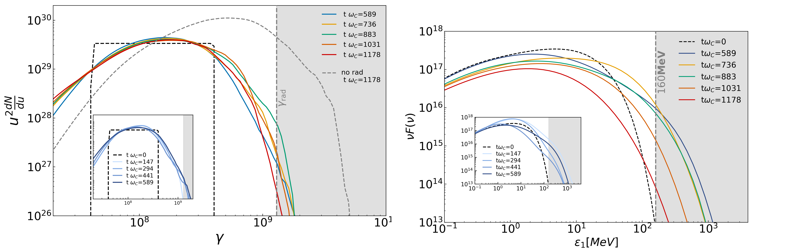
图注：Top: normalized background particle distributions $u^2N(u)$, initially a power-law with index $p=2$, (corresponding to a flat top hat with the normalization) at different times. Shaded gray area marks the value of $\gamma$ corresponding to synchrotron energy emission above the burn-off limit. Bottom: chromatic flux $\nu F(\nu)$, shaded gray area marks the energy above the burn-off limit. In both panels the insets show earlier time, prior to the merging.
对应解读：对应“建议重点查看的图表”第3项粒子能谱、第4项同步辐射输出，以及“关键图表逐图导读”图3/图4中关于高能非热尾、截断、超过 burn-off 极限辐射的解读。
入选理由：这张图同时给出粒子分布和同步辐射谱，并明确用灰色区域标出超过 burn-off 极限的能量范围，是验证论文核心结论——强冷却下仍能产生超 burn-off 辐射、湍流/并合阶段是否继续抬升高能端——最直接的图。相比只显示结构的图，它把微观加速结果和辐射可观测量直接连接起来。
来源与置信度：\(arxiv_source\)；high；\(arxiv_source\) / POP-Multiple-CS.tex:figure[5]
Fig04
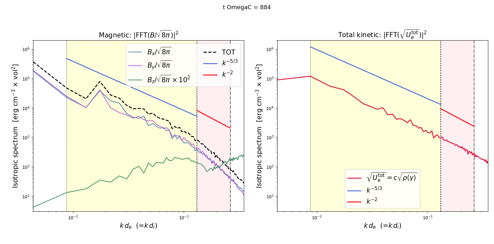
图注：(Left)Isotropic 1D spectra of magnetic energy components $E_{Bx}(k)$, $E_{By}(k)$, $E_{Bz}(k)$ and total magnetic energy $E_{B,\rm tot}(k)$ at $t\omega_c=884$, together with the kinetic power spectrum $E_K(k)$
对应解读：对应“建议重点查看的图表”第5项磁能谱，以及“关键图表逐图导读”图5关于 Kolmogorov-like 标度、耗散转折和高 k 数值影响的解读。
入选理由：论文摘要中强调磁能谱在湍流阶段形成近 Kolmogorov 标度并在约 5 \(d_e\) 附近进入耗散区，Fig04正是各磁场分量、总磁能和动能的一维谱诊断。它是判断多电流片重联是否真正发展为湍流、幂律区是否足够宽、耗散区是否可信的关键证据。
来源与置信度：\(arxiv_source\)；high；\(arxiv_source\) / POP-Multiple-CS.tex:figure[4]
Fig02
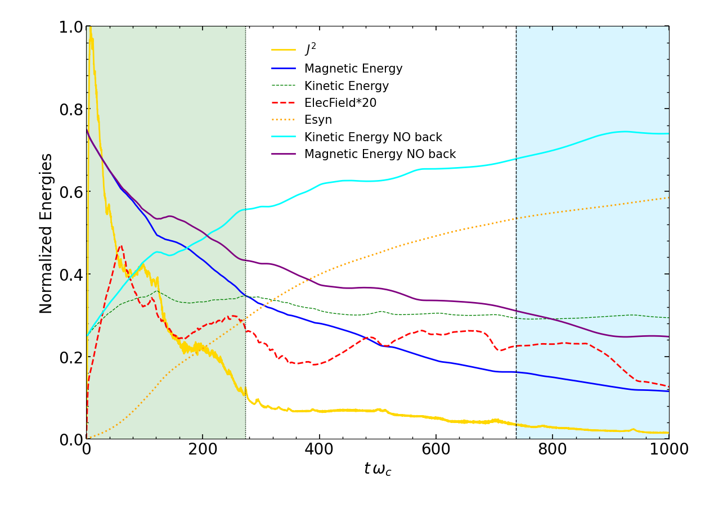
图注：Energy normalized to the initial total energy available in the system. Magnetic energy with (blue) and without (purple) radiation back reaction. Electric field energies multiplied by a factor 20 for readability, with back reaction (red dashed line, similar to the case when radiation is off). Kinetic energy of all the particles (green dashed line with back reaction, cyan without). Orange dotted line marks the total energy lost through synchrotron cooling. In gold, the current dissipation $J^2$ rms, normalized to its peak value. Green shaded area marks the evolution before the equipartition between magnetic and kinetic energy for the simulation with back reaction, while the light blue shaded area marks the merging phase between plasmoids in different current sheets.
对应解读：对应“建议重点查看的图表”第7项能量预算，以及模型拟合段落中关于磁能、粒子动能、辐射损失、J^2耗散和并合阶段稳健性的讨论。
入选理由：这张图给出磁能、粒子动能、电场能、同步辐射损失和电流耗散随时间的整体预算，并用阴影标记早期演化和跨电流片 plasmoid 并合阶段。它能检验辐射 burst 和粒子加速是否有合理能量来源，也能支撑日报中关于排除能量不守恒或边界/数值效应的提醒。
来源与置信度：\(arxiv_source\)；high；\(arxiv_source\) / POP-Multiple-CS.tex:figure[2]
Fig01
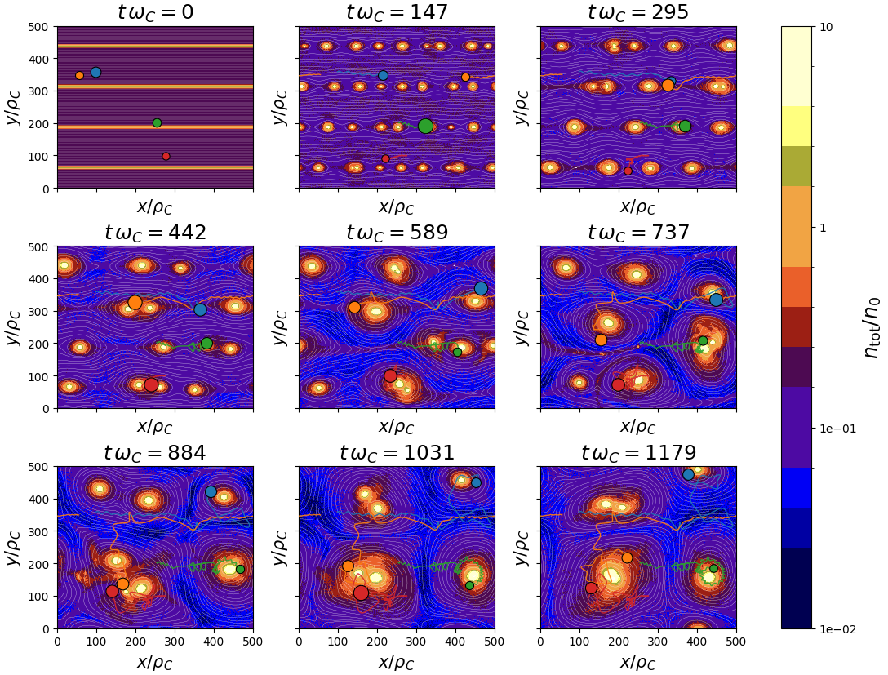
图注：Color-coded plasma density at different times, normalized to the initial drifting particle density $n_0$. Superimposed magnetic flux function iso-contours. We also show some of the tracked particles, labelled with circles, whose size depends on the particle energy to show energy gains and losses. We also show the particle orbits to trace back the particle location at the energization region.
对应解读：对应“建议重点查看的图表”第1项初始/结构构型、第2项电流片演化、第6项高能粒子空间分布，以及“关键图表逐图导读”图1、图2、图6的空间结构解读。
入选理由：Fig01展示不同时刻的等离子体密度、磁通函数等值线以及被跟踪高能粒子的空间位置和轨道，能够同时说明多电流片环境、plasmoid 形成/相互作用以及高能粒子在哪些区域获得能量。它比单独的轨迹图更能把结构演化和粒子加速区域联系起来。
来源与置信度：\(arxiv_source\)；high；\(arxiv_source\) / POP-Multiple-CS.tex:figure[1]
Fig06
图注：Top panel: trajectories (projected onto the yz-plane) of high-energy particles labelled in Fig.1. Bottom panel: critical synchrotron photon energy, see text for the definition.
对应解读：对应“建议重点查看的图表”第6项高能粒子空间分布/轨迹，以及“关键图表逐图导读”图6中关于 X-point、plasmoid 合并区或湍流区域加速机制的判断。
入选理由：这张图专门展示Fig01中高能粒子的 yz 投影轨迹和临界同步辐射光子能量，适合追踪单个高能粒子如何经历加速与冷却，并判断最高能光子是否来自短时局部事件。其局限是个例轨迹统计代表性有限，因此排序低于群体能谱和磁能谱。
来源与置信度：\(arxiv_source\)；high；\(arxiv_source\) / POP-Multiple-CS.tex:figure[6]
Fig03

图注：Energy transfer from magnetic field to particles ${\bf E}\cdot {\bf J}$, ${\bf J}$ being the total current carried by positrons and electrons. Superimposed (solid blue lines), magnetic field lines.
对应解读：对应“建议重点查看的图表”第2项电流密度/磁场拓扑演化，以及详细解读中关于磁场能量向粒子转移、新电流片和能量释放区域的讨论。
入选理由：Fig03显示 E·J 能量转移并叠加磁力线，是定位磁场能转化为粒子能的位置、识别重联和耗散区域的重要补充。它对理解加速机制有价值，但相比Fig01的时序结构、Fig05的粒子与辐射结果、Fig04的湍流谱诊断，支撑日报核心结论的独立性稍弱。
来源与置信度：\(arxiv_source\)；high；\(arxiv_source\) / POP-Multiple-CS.tex:figure[3]
强相关工作
这项工作与相对论磁重联 PIC 文献直接相连，尤其是研究 pair plasma 中非热粒子加速、plasmoid 链、同步辐射反作用和 Crab 耀发解释的论文。可检索关键词包括“relativistic magnetic reconnection pair plasma PIC synchrotron burnoff”、“Crab flares reconnection PIC”、“radiative magnetic reconnection plasmoid”。这些工作通常强调单个或少数电流片中的快速加速，而本文的区别是把多电流片相互作用和湍流形成作为主要对象。
它也与相对论湍流加速文献有关，例如高磁化等离子体中的随机加速、current-sheet mediated turbulence、以及 kinetic turbulence 的耗散尺度问题。可检索关键词包括“relativistic plasma turbulence PIC particle acceleration”、“current sheet mediated turbulence”、“kinetic scale dissipation pair plasma”。潜在张力在于：湍流模型常把电流片视为湍流级联的产物，而本文展示重联层并合本身也可生成湍流；两种图像可能是同一反馈环的不同起点。
相反或需谨慎对照的观点包括：超过同步辐射 burn-off 的高能光子也可由 bulk Doppler boosting、逆康普顿、或者局部电场几何效应解释；二维 PIC 的 plasmoid 支配图像在三维中可能被 kink 和湍流破碎削弱。建议检索“3D relativistic reconnection PIC plasmoid kink”、“synchrotron burnoff limit Doppler boosting Crab flares”、“radiation reaction reconnection pair plasma”。
相似工作：
- https://arxiv.org/abs/2605.19109
- https://arxiv.org/search/astro-ph?query=relativistic+magnetic+reconnection+PIC+pair+plasma+synchrotron&searchtype=all
基础理论 / 方法工作：
- https://ui.adsabs.harvard.edu/search/q=relativistic%20magnetic%20reconnection%20particle%20acceleration%20PIC%20pair%20plasma
- https://ui.adsabs.harvard.edu/search/q=Crab%20flares%20synchrotron%20burnoff%20magnetic%20reconnection
- https://ui.adsabs.harvard.edu/search/q=Harris%20current%20sheet%20particle%20in%20cell%20magnetic%20reconnection
相反观点 / 张力线索：
- https://ui.adsabs.harvard.edu/search/q=3D%20relativistic%20magnetic%20reconnection%20PIC%20kink%20plasmoid
- https://ui.adsabs.harvard.edu/search/q=synchrotron%20burnoff%20limit%20Doppler%20boosting%20Crab%20flares
说明
评分由 LLM 给出初评，再由本地阈值策略过滤；IACT、TeV 伽马射线和高能中微子天文学按重点方向处理。